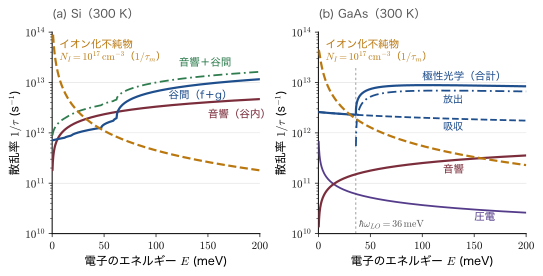
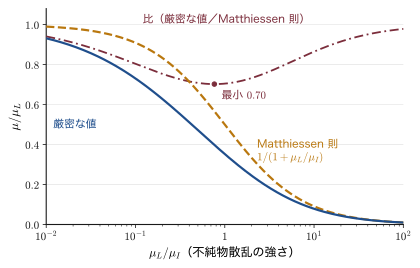
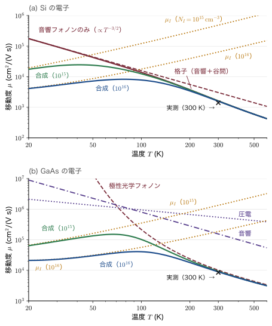
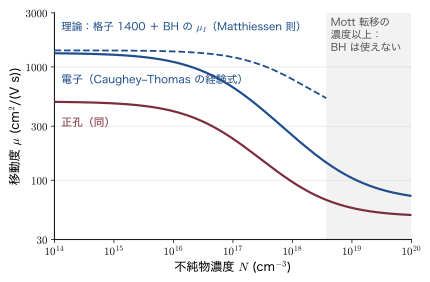

第22章半導体中の電子の散乱過程 — 移動度はどう決まるか
同じ Si の結晶でも，冷やすと電子はよく走るようになり，リン（P）を混ぜると走りにくくなる．電子の走りやすさを表す量が移動度（mobility）$\mu$（ミュー）で，単位電場（$1\,\mathrm{V/m}$）あたりのドリフト速度（電場に引かれて電子の集団が流れる平均の速さ）である．室温の移動度は Si の電子でおよそ $1400\,\mathrm{cm^2/(V\,s)}$（第17章の表17.10 では $1350$．測定や文献により $1350\sim1500$ と幅があり，本章の例題では $1400$ を使う），GaAs では $8500$，InSb では $77000$ にもなる．同じ Si でも，リンを $10^{17}\,\mathrm{cm^{-3}}$ 入れると移動度は半分ほどに下がる．純粋な試料を冷やすと移動度は何十倍にも上がるが，不純物の多い試料ではある温度より下で逆に下がり始める．GaAs と AlGaAs の界面に閉じ込めた電子は，極低温で $10^7\,\mathrm{cm^2/(V\,s)}$ に達する．これらの数字の違いはどこから来るのか．第17章では移動度を $\mu=e\tau/m^*$（$m^*$ は有効質量）と書き，Si の電子では散乱の時間（衝突から次の衝突までの平均の時間）$\tau$ が $0.2\,\mathrm{ps}$（ピコ秒．$1\,\mathrm{ps}=10^{-12}\,\mathrm{s}$）程度，平均自由行程（mean free path．衝突から次の衝突までに走る平均の距離）が $50\,\mathrm{nm}$ 程度であることを見た．しかしそこでは，$\tau$ そのものがなぜその値になるのかは問わなかった．本章の問い「移動度はどう決まるか」はこれである．
答えの骨格は簡単である．完全に周期的な結晶の中では，電子は Bloch（ブロッホ）波として散乱されずに進む（第16章）．電子の進む向きを変えるのは，周期性を乱すもの——いわば電子の行く手にある「障害物」——だけである．半導体の障害物は大きく3種類に分けられる．(1) 熱で揺れる格子，すなわちフォノン．(2) イオン化した不純物（$\mathrm{P^+}$，$\mathrm{B^-}$ など）の Coulomb（クーロン）力．(3) その他（中性の不純物，混晶の原子配列の乱れ，ほかのキャリア，転位，界面の凹凸）．本章の3つの節はおおむねこの3つに対応する（ただし (1) の格子のうち，音響フォノンは22.1節で，光学フォノン（極性光学フォノン散乱と谷間散乱）は22.3節の22.3.1〜22.3.2項で扱う）．
どの障害物についても，計算の手順は同じである．障害物が電子に及ぼすポテンシャルの乱れ（摂動）を書き，Fermi（フェルミ）の黄金律で単位時間あたりの散乱の回数（散乱率）$1/\tau(E)$ を計算し，運動量の失われ方で重みをつけ，第21章21.4節の Boltzmann（ボルツマン）方程式の平均 $\langle\langle\tau\rangle\rangle$ をとって移動度にする．第17章17.8節で結果だけを述べた「格子散乱で $\mu\propto T^{-3/2}$」「イオン化不純物散乱で $\mu\propto T^{3/2}/N_I$」「Matthiessen（マティーセン）則」は，この手順の結論として1行ずつ導かれる．そして実測とのずれ（Si の $T^{-2.4}$，GaAs の室温移動度，高濃度ドープでの理論の破れ）が，どの散乱をまだ入れていないかを教えてくれる．
この章を終えると，変形ポテンシャル $\Xi$，密度 $\rho$，音速 $v_s$，静的・高周波の比誘電率 $\epsilon_s$ と $\epsilon_\infty$（22.3.1項），LO フォノンのエネルギー $\hbar\omega_{LO}$，有効質量 $m^*$ といった材料定数から，移動度の大きさを自分で見積もれるようになる．なぜ高速のトランジスタに GaAs や InGaAs が使われるのか，なぜ HEMT（高電子移動度トランジスタ）は不純物を電子から離して置くのか，なぜ微細な MOSFET では界面の平坦さが性能を左右するのか，といったデバイス設計の判断も，散乱の言葉で説明できるようになる．変形ポテンシャルの考え方は，いまでも第一原理計算で新しい材料の移動度を見積もる標準的な方法の一つである．次章（第23章）の「熱い電子」では，本章で求める光学フォノンの放出率が，電子のエネルギーの行き先を決める．
- 散乱の正体：完全な結晶は電子を散乱せず，散乱するのは周期性の乱れ（フォノン・不純物・その他）だけであること
- Fermi の黄金律と状態密度から，散乱率 $1/\tau(E)$ を計算する5つの手順
- 変形ポテンシャル $H'=\Xi\,\nabla\cdot\uu$ の意味と，音響フォノン散乱の $1/\tau_{ac}\propto T\,E^{1/2}$，移動度 $\mu_{ac}\propto m^{*-5/2}T^{-3/2}$ の完全な導出
- 散乱率と運動量緩和率の違い（$1-\cos\theta$ の重み）と，圧電散乱（極性結晶，$\mu\propto T^{-1/2}$）
- Rutherford（ラザフォード）散乱の古典的な導出と，イオン化不純物散乱の Conwell–Weisskopf（コンウェル・ワイスコップ）の式・Brooks–Herring（ブルックス・ヘリング）の式（遮蔽と Born（ボルン）近似）の比較，$\mu_I\propto T^{3/2}/N_I$ の起源
- 極性光学フォノン散乱（Fröhlich（フレーリッヒ）定数 $\alpha_F$）と，Si の谷間散乱（f 過程と g 過程）
- 中性不純物・合金・キャリア間・転位・界面の凹凸による散乱と，変調ドープの2次元電子ガスで移動度が $10^7\,\mathrm{cm^2/(V\,s)}$ に達する理由
- Matthiessen 則の導出と，それが厳密には成り立たない理由（不等式で示す）
- 移動度の温度依存性 $\mu(T)$ とドーピング依存性 $\mu(N)$ の全体像，Caughey–Thomas（コーヒー・トーマス）の経験式，Hall（ホール）移動度とドリフト移動度の違い
22.1 音響フォノン散乱
3種類の障害物の第一は，熱で揺れる格子である．格子の振動の中でも，波長の長い音波（音響フォノン，acoustic phonon）による散乱は，すべての半導体で必ず起こる，いちばん基本的な散乱である．この節では，まず散乱を扱う道具（散乱率と Fermi の黄金律）を準備し，それを音響フォノンに当てはめて，散乱率と移動度の式を最後まで導く．
22.1.1 散乱とは何か — 障害物と散乱率
現象から始めよう．Si の電子の移動度 $\mu\simeq1400\,\mathrm{cm^2/(V\,s)}$ と伝導度有効質量 $m_{ce}=0.26m$（第17章17.3節と同じ記号）から，第17章の例題17.13 と同じ計算で散乱の時間を出すと
$$ \tau=\frac{\mu m_{ce}}{e}=\frac{(1400\times10^{-4}\,\mathrm{m^2/(V\,s)})\times(0.26\times9.109\times10^{-31}\,\mathrm{kg})}{1.602\times10^{-19}\,\mathrm{C}}=2.1\times10^{-13}\,\mathrm{s} $$になる（$1\,\mathrm{cm^2}=10^{-4}\,\mathrm{m^2}$ と換算した）．電子は平均して $0.2\,\mathrm{ps}$ ごとに向きを変えている．1秒あたりに直せば $1/\tau\simeq5\times10^{12}$ 回である．この「1秒あたりの散乱の回数」$1/\tau$ を散乱率（scattering rate）と呼ぶ．移動度は $\mu=e\tau/m^*$ なので，移動度を知ることは散乱率を知ることと同じである．
記号の約束：本章の記号
- エネルギーは $E$ と書く．伝導帯の電子については，伝導帯の底から測った運動エネルギー $E(\kk)=\hbar^2k^2/(2m^*)$ を使う（第16〜18章の $\epsilon_\kk$ を，第IV部では $E(\kk)$ と書く）．
- 電場のベクトルは $\EE$，その大きさは $\mathcal{E}$（スクリプトの E）と書いて，エネルギー $E$ と区別する．
- 電子が感じるポテンシャルエネルギーは $U(\rr)$ と書き，結晶の体積 $V$ と区別する．$\rho$ は結晶の質量密度（$\mathrm{kg/m^3}$）である．
- $1/\tau$ は散乱率，$1/\tau_m$ は運動量緩和率（22.1.5項で区別する）．機構は添字で区別する（$\tau_{ac}$：音響フォノン，$\tau_I$：イオン化不純物 など）．第23章では同じ文字でエネルギー緩和時間 $\tau_E$ も使う．
- 緩和時間のエネルギー依存性 $\tau\propto E^r$ の指数 $r$ は第21章と同じ記号で，Hall 因子 $r_H$ や位置の $r$ とは別である．圧電定数は $e_{pz}$ と書き，電気素量 $e$ と区別する．
- 散乱の断面積は $\sigma_c$ と書いて伝導度 $\sigma$ と区別する．立体角は $\Omega$（$\dd\Omega=\sin\theta\,\dd\theta\,\dd\phi$）で，フォノンの角振動数には $\Omega$ を使わず $\omega_q$，$\omega_{LO}$ などと書く．
- Si のように谷が回転楕円体の物質では，伝導度有効質量を第17章と同じ $m_{ce}$（$3/m_{ce}=1/m_l+2/m_t$），1つの谷の状態密度有効質量を $m_{dv}=(m_lm_t^2)^{1/3}$（dv は「1つの谷（valley）の状態密度」の意味．22.1.6項）と書く．$m_c$ は第21章と同じくサイクロトロン質量の記号で，本章では使わない．
- 階段関数は $\Theta(x)$（大文字のシータ．$x\gt0$ で1，$x\lt0$ で0）と書き，散乱角 $\theta$ と区別する．
- 同じ文字を本章の離れた場所で別の意味に使うものがある（その都度定義する）：$\phi$（22.1節の方位角と，22.1.7項・22.2.4項の電位），$P$（分極，22.3.5項の全結晶運動量 $\bm{P}$，演習22.4 のエネルギー損失率），$D$（電束密度と，22.3.2項の光学変形ポテンシャル $D_0$），$\rho$（質量密度と，演習22.6 の面内の位置 $\bm\rho$），$g$・$f$（状態密度 $g(E)$・分布関数 $f$ と，谷間散乱の「g 過程」「f 過程」という呼び名），$A$・$B$・$C$（導出の中だけで使う補助の文字．演習22.1 の $A$ は面積）．振動の向きの単位ベクトルは太字の $\bm{e}$ で，電気素量 $e$ とは別である．
では，電子は何にぶつかって向きを変えるのか．
なぜ：完全な結晶は電子を散乱しない
原子がぎっしり並んだ結晶の中を，電子が平均 $50\,\mathrm{nm}$（格子定数のおよそ90倍．第17章の例題17.13）も素通りできるのは不思議に思える．しかし第16章の Bloch の定理によれば，完全に周期的なポテンシャルの中の電子の定常状態は，波数 $\kk$ の決まった Bloch 波 $\psi_\kk(\rr)=\ee^{i\kk\cdot\rr}u_\kk(\rr)$ である．定常状態は時間がたっても変わらない．つまり $\kk$ は変わらず，電子は散乱されない．周期的な格子の影響は，すでにバンドの形 $E(\kk)$ と有効質量 $m^*$ の中に全部取り込まれているのである（第17章17.2節の「格子からの力は $E(\kk)$ に織り込まれている」と同じこと）．
したがって，電子を散乱するのは周期性からのずれだけである．結晶のポテンシャルを「完全な周期的な部分」と「ずれ」$U(\rr)$ に分けると，電子の $\kk$ を変えるのはずれ $U(\rr)$ のほうだけになる．
半導体の中の「ずれ」，すなわち障害物を一覧にしておく．本章はこの表を上から順に調べていく．表の「散乱の特徴」の欄の弾性散乱（elastic scattering）は電子のエネルギーが変わらない散乱，非弾性散乱（inelastic scattering）はフォノンなどとエネルギーをやりとりして電子のエネルギーが変わる散乱である．「前方に偏る」は，小さい角だけ曲げる散乱が多いことを表す．
| 障害物 | 電子が感じるポテンシャル | 散乱の特徴 | 扱う項 |
|---|---|---|---|
| 音響フォノン（変形ポテンシャル） | 格子の伸縮によるバンド端の上下 | ほぼ弾性，向きは等方的 | 22.1.2〜22.1.6 |
| 音響フォノン（圧電） | 伸縮が作る電場（対称中心の無い結晶だけ） | 前方（小さい角）に偏る | 22.1.7 |
| イオン化した不純物 | 遮蔽された Coulomb ポテンシャル | 弾性，強く前方に偏る | 22.2 |
| 極性光学フォノン | LO フォノンの作る電場（Fröhlich 相互作用） | 非弾性（$\hbar\omega_{LO}$ をやりとり） | 22.3.1 |
| 非極性光学フォノン・谷間散乱 | 原子の相対的なずれ | 非弾性，大きな波数を運ぶ | 22.3.2 |
| 中性の不純物 | 中性の水素様原子 | 温度によらない | 22.3.3 |
| 混晶の乱れ | 原子のでたらめな配置 | 短距離，等方的 | 22.3.4 |
| ほかのキャリア | キャリア同士の Coulomb 力 | 全運動量を変えない | 22.3.5 |
| 転位 | 帯電した線 | Coulomb 的 | 22.3.6 |
| 界面の凹凸 | 閉じ込めの幅の揺らぎ | 2次元の電子だけ | 22.3.7 |
どの障害物についても，散乱の頻度を計算する道具は量子力学の Fermi の黄金律である．導出は姉妹編の量子力学 第51章51.2節にあるので，ここでは結果だけを再掲する．
数学の道具：Fermi の黄金律（再掲）
はじめ状態 $\ket{i}$（エネルギー $E_i$）にいる系に，時間によらない小さな摂動 $H'$ がはたらくと，状態 $\ket{f}$（エネルギー $E_f$）へ移る単位時間あたりの確率は
で与えられる．$\delta(x)$ は Dirac（ディラック）のデルタ関数（付録A A.9）で，エネルギーが保存する遷移だけを拾い出す役をする．行列要素 $M_{fi}\equiv\bra{f}H'\ket{i}$ が「摂動がどれだけ強く $i$ と $f$ をつなぐか」を表す．行き先 $f$ がたくさんある（連続している）ときは，$f$ について足し合わせると，デルタ関数が「行き先の状態の数（状態密度）」に化ける．すなわち
$$ \frac{1}{\tau}=\sum_f W_{i\to f}\simeq\frac{2\pi}{\hbar}\,\overline{\abs{M}^2}\times(\text{エネルギー }E_i\text{ の行き先の状態密度}) $$となる（$\overline{\abs{M}^2}$ は行き先についての平均）．散乱率は「摂動の強さの2乗」と「行き先の数」の積である．第17章17.8節で定性的に述べた形が，これである．フォノンを吸収・放出する散乱では，フォノンのエネルギー $\hbar\omega_q$ もエネルギーの収支に入る：$\delta(E_f-E_i\mp\hbar\omega_q)$．
結晶中の電子の状態は波数 $\kk$ で区別される．はじめの状態 $\kk$ から $\kk'$ への遷移の確率を $W(\kk\to\kk')$ と書くと，散乱率は $\kk'$ についての和である．
$$ \frac{1}{\tau(\kk)}=\sum_{\kk'}W(\kk\to\kk') $$この和は積分に直せる．体積 $V$ の結晶に周期境界条件を課すと，$\kk$ は1点あたり $\kk$ 空間の体積 $(2\pi)^3/V$ を占める（第15章15.2節の15.2.3）．したがって $\kk'$ 空間の体積 $\dd^3k'$ の中には $V\dd^3k'/(2\pi)^3$ 個の状態があり，
と置き換えてよい．ここでスピンの因子2を付けないのは，ここで扱う散乱ではどれもスピンの向きが変わらないからである．
電子が $\kk$ から $\kk'$ へ散乱されるときの幾何を図22.1 に示す．$\kk$ と $\kk'$ のあいだの角 $\theta$ を散乱角（scattering angle），差 $\qq=\kk'-\kk$ を波数の移動（momentum transfer）と呼ぶ．
補足：本章で何度も使う5つの手順
どの散乱機構についても，移動度は次の5段で計算する．
- 摂動を書く：障害物が電子に及ぼすポテンシャルエネルギー $H'$（または $U(\rr)$）を物理から決める．
- 行列要素を求める：$M=\bra{\kk'}H'\ket{\kk}$．平面波どうしの行列要素は，ポテンシャルの Fourier 成分になる．
- 黄金律で散乱率を出す：式 \eqref{eq:22-golden} を $\kk'$ について足す（式 \eqref{eq:22-sum}）．
- 運動量の失われ方で重みをつける：$1-\cos\theta$ を掛けて運動量緩和率 $1/\tau_m$ にする（22.1.5項）．
- 熱平均をとる：第21章21.4節の $\langle\langle\tau_m\rangle\rangle$ を計算し，$\mu=e\langle\langle\tau_m\rangle\rangle/m^*$ とする．
22.1.2 変形ポテンシャル — 格子が伸び縮みするとバンド端が動く
まず実験事実を思い出そう．半導体に圧力をかけるとバンドギャップが変わる．たとえば GaAs の直接ギャップは，静水圧 $1\,\mathrm{GPa}$（およそ1万気圧）あたり約 $0.1\,\mathrm{eV}$ 広がる．格子定数が変わると原子どうしの軌道の重なりが変わり，バンドのエネルギーが動くからである．
音波が結晶の中を伝わるときにも，同じことが局所的に起こる．縦波の音波では，原子の間隔が狭い所（圧縮）と広い所（膨張）が交互に並び（図22.2(a)），その場所ごとに伝導帯の底のエネルギーが上下する（図22.2(b)）．伝導帯の電子から見ると，凹凸のあるポテンシャルの中を走ることになる．これが音響フォノンによる散乱の正体である．この見方は Bardeen と Shockley（バーディーンとショックレー，1950）による．
伸び縮みの量を式で表そう．原子のつりあいの位置からのずれ（変位）を $\uu(\rr)$ とすると，場所 $\rr$ のまわりの小さな体積は，変形によって割合
$$ \Delta(\rr)=\frac{\delta V}{V}=\frac{\partial u_x}{\partial x}+\frac{\partial u_y}{\partial y}+\frac{\partial u_z}{\partial z}=\nabla\cdot\uu $$だけ増える（$\Delta$ をデルタと読む．膨張率，dilation）．これはひずみテンソルの対角和 $\Tr\,\varepsilon$ にほかならない（第12章12.6節）．
導出：体積の変化率が $\nabla\cdot\uu$ になること
辺の長さ $\dd x,\ \dd y,\ \dd z$ の小さな直方体を考える．$x$ 方向の辺の両端の点は，それぞれ $u_x(x)$ と $u_x(x+\dd x)$ だけずれるので，変形後の辺の長さは
$$ \dd x+u_x(x+\dd x)-u_x(x)=\dd x+\frac{\partial u_x}{\partial x}\dd x=\left(1+\frac{\partial u_x}{\partial x}\right)\dd x $$になる（2番目の等号は Taylor（テイラー）展開の1次まで）．$y,\ z$ 方向も同じなので，変形後の体積は
$$ V+\delta V=\left(1+\frac{\partial u_x}{\partial x}\right)\left(1+\frac{\partial u_y}{\partial y}\right)\left(1+\frac{\partial u_z}{\partial z}\right)\dd x\,\dd y\,\dd z $$である．ずれの微分は小さい（$10^{-3}$ 程度以下）ので，その2乗以上を捨てると
$$ V+\delta V\simeq\left(1+\frac{\partial u_x}{\partial x}+\frac{\partial u_y}{\partial y}+\frac{\partial u_z}{\partial z}\right)V,\qquad V=\dd x\,\dd y\,\dd z $$両辺から $V$ を引いて $V$ で割れば $\delta V/V=\nabla\cdot\uu$ となる．∎ ずれが場所によらない（結晶全体の平行移動）ときは $\nabla\cdot\uu=0$ で，当然エネルギーは変わらない．バンド端を動かすのはずれの場所による違い（微分）である．
伸縮が小さいあいだは，伝導帯の底の移動は伸縮の1次に比例する．その比例係数を変形ポテンシャルと呼ぶ．
定義：変形ポテンシャル（deformation potential）$\Xi$
結晶が局所的に割合 $\Delta=\nabla\cdot\uu$ だけ膨張したとき，伝導帯の底が
$$ \delta E_c=\Xi\,\Delta $$だけ動くとする．係数 $\Xi$（グザイ）を伝導帯の変形ポテンシャルという．単位はエネルギー（eV）である．電子にとっては，これがポテンシャルエネルギーの乱れ，すなわち摂動
になる．$\Xi$ の符号は物質とバンドによって正にも負にもなるが，散乱率には $\Xi^2$ しか現れないので，以下 $\Xi$ はその大きさを表すと考えてよい．Si の電子については $\Xi\simeq9\,\mathrm{eV}$ がよく使われる．
なぜ：$\Xi$ は数 eV〜10 eV にもなるのか
膨張率 $\Delta$ は無次元なので，$\Xi$ は「体積が2倍になったらバンド端が何 eV 動くか」に当たる．もちろん体積が2倍になることはないが，比例の係数としてはそういう意味である．バンドの幅（数 eV〜10 eV）は原子どうしの軌道の重なりで決まり，重なりは原子間距離に敏感である．格子定数が $1\%$ 変われば（体積は $3\%$ 変わる）重なりは数 % 変わり，バンドのエネルギーは $0.1\,\mathrm{eV}$ 程度動く．$0.1\,\mathrm{eV}/0.03\simeq3\,\mathrm{eV}$ だから，$\Xi$ が数 eV〜10 eV になるのは自然である．
なぜ：横波の音響フォノンは（ここでは）効かないのか
平面波の変位 $\uu=\bm{e}\,u_0\ee^{i\qq\cdot\rr}$（$\bm{e}$ は振動の向きの単位ベクトル）の膨張率は
$$ \nabla\cdot\uu=i\,(\qq\cdot\bm{e})\,u_0\ee^{i\qq\cdot\rr} $$である．縦波（$\bm{e}\parallel\qq$）では $\qq\cdot\bm{e}=q$ だが，横波（$\bm{e}\perp\qq$）では $\qq\cdot\bm{e}=0$ となって，体積が変わらない（ずれるだけで伸び縮みしない）．したがって式 \eqref{eq:22-dp} の摂動を生むのは縦波の音響フォノン（LA フォノン）だけである．ただしこれは等方的な谷（GaAs の $\Gamma$ 谷のように，Brillouin（ブリルアン）域の中心 $\Gamma$ 点にあって，どの向きにも有効質量が同じ谷）の話である．Si のように谷が回転楕円体（第17章17.3節．向きによって有効質量が違う細長い谷）の場合は，体積を変えずに形だけをゆがめるせん断ひずみ（shear strain）でも谷のエネルギーが動き，横波も散乱に寄与する（Herring（ヘリング）と Vogt（フォークト）が1956年に定式化した．本章では扱わない）．本章では簡単のため縦波だけを考え，横波の分も含めた散乱の強さを1つの有効な $\Xi$ にまとめる．
例題22.1 伸ばした Si の伝導帯の底はどれだけ動くか
Si の結晶を，$x,\ y,\ z$ のどの方向にも長さが $0.1\%$ だけ伸びるように一様に引き伸ばした．伝導帯の底の移動 $\delta E_c$ を，$\Xi=9\,\mathrm{eV}$ として見積もれ．室温の熱エネルギー $k_BT=25.85\,\mathrm{meV}$ と比べよ．
解答．各辺が $1.001$ 倍になるので，体積は $1.001^3$ 倍になる．
$$ 1.001^3=1+3\times0.001+3\times0.001^2+0.001^3=1.003003 $$（二項展開．2乗以上の項は $3\times10^{-6}$ 以下で小さい．）したがって膨張率は
$$ \Delta=\frac{\delta V}{V}=1.003003-1=3.0\times10^{-3} $$で，伝導帯の底の移動は
$$ \delta E_c=\Xi\Delta=9\,\mathrm{eV}\times3.0\times10^{-3}=0.027\,\mathrm{eV}=27\,\mathrm{meV} $$∎ わずか $0.1\%$ の伸びで，伝導帯の底は室温の熱エネルギー $26\,\mathrm{meV}$ と同じくらい動く，という見積もりになる．熱振動による局所的な伸縮は小さくても，電子にとっては無視できない凹凸になる．ただし，ここで使った $\Xi=9\,\mathrm{eV}$ は，22.1.2項の「なぜ」で述べたように散乱の強さをまとめた有効な値である．一様な膨張だけによる伝導帯の底の移動の係数（静水圧の変形ポテンシャル）は，計算によってばらつくが数 eV 程度とされ，$9\,\mathrm{eV}$ より小さい．バンドギャップの変化はさらに小さく，実測の圧力係数（Si の間接ギャップで約 $-14\,\mathrm{meV/GPa}$）と体積弾性率（約 $98\,\mathrm{GPa}$）から，この膨張でギャップは約 $4\,\mathrm{meV}$ しか変わらない．$27\,\mathrm{meV}$ は桁の見積もり（上限の目安）と考えてほしい．逆に言えば，ひずみでバンドを動かせるということでもある．最先端の MOSFET では，Si のチャネルに意図的に1% 程度のひずみを入れて谷のエネルギーをずらし，移動度を上げている（歪み Si 技術．第17章の演習17.4）．このとき6つの谷のエネルギーを互いにずらしているのは，主にひずみのうち向きのある（せん断の）成分である．
22.1.3 フォノンの量子化された変位と行列要素
行列要素を計算するには，変位 $\uu(\rr)$ を量子力学の言葉で書かなければならない．格子振動は独立な調和振動子の集まりであり，その量子がフォノンであった（第13章13.8節）．そこでは，フォノンが $n$ 個いるモード（波数 $\qq$，角振動数 $\omega_q$）の古典的な振幅 $u_0$ が
$$ u_0^2=\frac{(2n+1)\hbar}{\rho\,\omega_q V} $$になることを導いた（$\rho$ は質量密度，$V$ は結晶の体積）．量子力学では，1つのモードの変位は「フォノンを1個消す部分」と「1個作る部分」の和として書ける．
導出：変位の演算子と，その行列要素
調和振動子の変位は，消滅演算子 $\hat a$ と生成演算子 $\hat a^\dagger$ を使って $\hat x=\sqrt{\hbar/(2M\omega)}\,(\hat a+\hat a^\dagger)$ と書ける（量子力学 第56章56.2節）．$\hat a$，$\hat a^\dagger$ はフォノンの数 $n$ の状態 $\ket{n}$ に次のように作用する．
$$ \hat a\ket{n}=\sqrt{n}\,\ket{n-1},\qquad \hat a^\dagger\ket{n}=\sqrt{n+1}\,\ket{n+1} $$結晶の縦波のモード $\qq$ は，「質量」$M$ を結晶全体の質量 $\rho V$ に置き換えた振動子である．変位の場は，平面波 $\ee^{i\qq\cdot\rr}$ を掛けて
と書ける（$\bm{e}_\qq$ は振動の向き．縦波では $\qq$ の向き）．第13章の結果と合っていることを確かめておこう．$\ket{n}$ での $\hat u^2$ の期待値は，交差項 $\hat a\hat a$，$\hat a^\dagger\hat a^\dagger$ の期待値が0なので
$$ \bra{n}\hat u^2\ket{n}=\frac{\hbar}{2\rho V\omega_q}\bra{n}\left(\hat a\hat a^\dagger+\hat a^\dagger\hat a\right)\ket{n}=\frac{\hbar}{2\rho V\omega_q}\bigl[(n+1)+n\bigr]=\frac{(2n+1)\hbar}{2\rho V\omega_q} $$となる．古典的な波 $u_0\cos(\qq\cdot\rr-\omega_qt)$ の2乗の平均は $u_0^2/2$ だから，これは第13章の $u_0^2=(2n+1)\hbar/(\rho\omega_qV)$ のちょうど半分で，ぴったり一致している．∎
この変位を式 \eqref{eq:22-dp} に入れる．縦波（$\bm{e}_\qq\parallel\qq$）では $\nabla\cdot(\bm{e}_\qq\ee^{\pm i\qq\cdot\rr})=\pm iq\,\ee^{\pm i\qq\cdot\rr}$ なので，
$$ H'_{ac}=\Xi\,\nabla\cdot\hat\uu_\qq=i\,\Xi\,q\sqrt{\frac{\hbar}{2\rho V\omega_q}}\left(\hat a_\qq\,\ee^{i\qq\cdot\rr}-\hat a_\qq^\dagger\,\ee^{-i\qq\cdot\rr}\right) $$である．電子の状態は，Bloch 関数の周期的な部分 $u_\kk$ の重なりを1とみなして（同じバンドの中の，波数の近い状態どうしなのでよい近似である），平面波 $\ket{\kk}=V^{-1/2}\ee^{i\kk\cdot\rr}$ で表す．
導出：フォノンの吸収と放出の行列要素
吸収．はじめ電子が $\kk$，モード $\qq$ にフォノンが $n_q$ 個．終わりに電子が $\kk'$，フォノンが $n_q-1$ 個．$H'$ のうち $\hat a_\qq$ を含む項だけが寄与し，
$$ M_{\rm abs}=i\,\Xi\,q\sqrt{\frac{\hbar}{2\rho V\omega_q}}\ \bra{n_q-1}\hat a_\qq\ket{n_q}\ \bra{\kk'}\ee^{i\qq\cdot\rr}\ket{\kk} $$となる．フォノンの部分は $\sqrt{n_q}$ である．電子の部分は
$$ \bra{\kk'}\ee^{i\qq\cdot\rr}\ket{\kk}=\frac{1}{V}\int_V\ee^{-i\kk'\cdot\rr}\,\ee^{i\qq\cdot\rr}\,\ee^{i\kk\cdot\rr}\,\dd^3r=\frac{1}{V}\int_V\ee^{i(\kk+\qq-\kk')\cdot\rr}\,\dd^3r=\delta_{\kk',\kk+\qq} $$（指数が0でなければ，周期境界条件のもとで振動する関数の積分は0になり，指数が0なら被積分関数が1で積分は $V$ になる．）したがって
$$ \abs{M_{\rm abs}}^2=\Xi^2q^2\,\frac{\hbar}{2\rho V\omega_q}\,n_q,\qquad \kk'=\kk+\qq $$放出．終わりのフォノンが $n_q+1$ 個．$\hat a_\qq^\dagger$ の項が寄与し，$\bra{n_q+1}\hat a_\qq^\dagger\ket{n_q}=\sqrt{n_q+1}$，電子の部分は $\delta_{\kk',\kk-\qq}$ なので
∎ 吸収は $\kk'=\kk+\qq$，放出は $\kk'=\kk-\qq$ である．どちらも結晶運動量の保存則を表している（逆格子ベクトル $\GG$ だけずれる Umklapp 過程もありうるが，音響フォノン散乱で移る $q$ は小さく（例題22.2 で Brillouin 域の大きさの1割以下），電子の波数も谷の底から測れば小さいので，ここでは $\GG=0$ だけでよい．第14章14.7節）．
物理的意味：吸収は $n_q$，放出は $n_q+1$
フォノンを吸収するには，そのモードにフォノンがいなければならない．だから吸収の確率はフォノンの数 $n_q$ に比例する．一方，放出はフォノンが1個もいなくても起こる．$n_q+1$ の「$+1$」が，この自発放出に当たる．光の吸収と放出（第26章）とまったく同じ構造である（量子力学 第60章60.4節）．
熱平衡では，フォノンの数は Planck 分布（第14章14.1節）
$$ n_q=\frac{1}{\ee^{\hbar\omega_q/k_BT}-1} $$に従う．電子の散乱にかかわる音響フォノンはエネルギーが小さく，室温では $\hbar\omega_q\ll k_BT$ である（例題22.2）．このとき $x=\hbar\omega_q/k_BT\ll1$ として $\ee^x\simeq1+x$ と展開すると
$$ n_q\simeq\frac{1}{(1+x)-1}=\frac{k_BT}{\hbar\omega_q}\gg1,\qquad n_q+1\simeq n_q\simeq\frac{k_BT}{\hbar\omega_q} $$となる．これは古典的なエネルギーの等分配そのものである（1つのモードの平均エネルギーが $n_q\hbar\omega_q\simeq k_BT$）．
もう一つの近似は弾性近似である．音響フォノンのエネルギー $\hbar\omega_q=\hbar v_sq$（$v_s$ は音速）は，電子のエネルギー（室温で $k_BT$ 程度）よりずっと小さいので，エネルギー保存則の中の $\pm\hbar\omega_q$ を無視して $E(\kk')\simeq E(\kk)$ としてよい．図22.2 の言葉で言えば，音波はほとんど止まって見える．
例題22.2 等分配近似と弾性近似はいつ使えるか
Si の伝導帯の1つの谷を，有効質量 $m^*=0.32m$ の等方的な谷で近似する（$0.32m$ は1つの谷の状態密度有効質量 $(m_lm_t^2)^{1/3}$．22.1.6項）．エネルギー $E=k_BT$（$300\,\mathrm{K}$）の電子が音響フォノンを吸収・放出するとき，(1) フォノンの波数の最大値と，そのフォノンのエネルギーを求めよ．音速は $v_s=9.0\times10^3\,\mathrm{m/s}$ とする．(2) $n_q$ を Planck 分布と等分配近似で比べよ．(3) 等分配近似の誤差が大きくなる温度を見積もれ．
解答 (1)．電子の波数は $E=\hbar^2k^2/(2m^*)$ を $k$ について解いて
$$ \begin{aligned} k&=\frac{\sqrt{2m^*E}}{\hbar}=\frac{\sqrt{2\times(0.32\times9.109\times10^{-31})\times(4.142\times10^{-21})}}{1.0546\times10^{-34}}\\ &=\frac{4.914\times10^{-26}}{1.0546\times10^{-34}}=4.66\times10^{8}\,\mathrm{m^{-1}} \end{aligned} $$（$k_BT=1.381\times10^{-23}\times300=4.142\times10^{-21}\,\mathrm{J}$．）弾性散乱では $q=2k\sin(\theta/2)$（図22.1）なので，最大は後方散乱（$\theta=\pi$）の $q_{\max}=2k=9.32\times10^8\,\mathrm{m^{-1}}$．そのフォノンのエネルギーは
$$ \hbar\omega_{\max}=\hbar v_sq_{\max}=(1.0546\times10^{-34})(9.0\times10^{3})(9.32\times10^{8})=8.85\times10^{-22}\,\mathrm{J}=5.5\,\mathrm{meV} $$である．散乱の向きについて平均すると $\langle q\rangle=\tfrac43k$（$\sin(\theta/2)$ の立体角平均が $2/3$）なので，典型的なフォノンのエネルギーは $\tfrac23\times5.5=3.7\,\mathrm{meV}$．最大でも電子のエネルギー $26\,\mathrm{meV}$ の約 $1/5$（典型的な値では約 $1/7$）で，弾性近似はおおむね成り立つ．
解答 (2)．$\hbar\omega_{\max}$ を有効数字3桁で $5.52\,\mathrm{meV}$ として，$x=\hbar\omega_{\max}/k_BT=5.52/25.85=0.214$ なので，Planck 分布では
$$ n_q=\frac{1}{\ee^{0.214}-1}=\frac{1}{1.238-1}=4.2, $$等分配近似では $k_BT/\hbar\omega=1/0.214=4.7$．いちばん大きい $q$ でも1割程度の差（$4.7/4.2=1.11$）で，それより小さい $q$ ではもっとよく合う．
解答 (3)．$k\propto\sqrt{E}\propto\sqrt{T}$ なので $\hbar\omega_{\max}\propto T^{1/2}$，一方 $k_BT\propto T$．比 $x$ は $T^{-1/2}$ に比例し，$300\,\mathrm{K}$ で $0.214$ である．等分配近似の値 $1/x$ と Planck 分布の値 $1/(\ee^x-1)$ の比は $(\ee^x-1)/x$（$x$ が小さければ $\simeq1+x/2$）なので，誤差は $x=0.214$（室温）で $11\%$，$x=0.5$ で $30\%$，$x=1$ で $72\%$ になる．$x\propto T^{-1/2}$ から $T=300\,\mathrm{K}\times(0.214/x)^2$ なので，誤差が3割になる $x=0.5$ は
$$ T=300\,\mathrm{K}\times\left(\frac{0.214}{0.5}\right)^2=55\,\mathrm{K}, $$近似が大きく破れる $x=1$ は
$$ T=300\,\mathrm{K}\times(0.214)^2=14\,\mathrm{K} $$である．∎ これはいちばん大きい $q$ での誤差で，散乱の向きについて平均すれば誤差はもっと小さい．室温から $50\,\mathrm{K}$ 程度までは等分配近似と弾性近似で十分だが，$10\,\mathrm{K}$ 程度以下の極低温では，フォノンの吸収が減り放出（自発放出）が主になるので，両方の近似をやめて扱わなければならない．
二つの近似のもとで，吸収と放出をまとめよう．同じ終状態 $\kk'$ へ行く道は2つある．フォノン $\qq=\kk'-\kk$ を吸収する道と，フォノン $-\qq=\kk-\kk'$ を放出する道である．弾性近似ではどちらもエネルギー保存則は $E(\kk')=E(\kk)$ になり，等分配近似では $n_q\simeq n_q+1\simeq k_BT/\hbar\omega_q$ なので，式 \eqref{eq:22-Mac} の2つの寄与は等しい．足し合わせると
$$ \abs{M_{\rm abs}}^2+\abs{M_{\rm em}}^2\simeq2\times\frac{\hbar\,\Xi^2q^2}{2\rho V\omega_q}\cdot\frac{k_BT}{\hbar\omega_q}=\frac{\Xi^2k_BT\,q^2}{\rho V\omega_q^2} $$となる．音響フォノンの分散は $\omega_q=v_sq$ だから $q^2/\omega_q^2=1/v_s^2$ で，
が得られる．$q$ が消えた．
物理的意味：どの波長の音波も同じだけ伸び縮みさせる
等分配により，どのモードも平均 $k_BT$ のエネルギーを持つ．波長の長いモード（$q$ が小さい）は振動数が低いので，同じエネルギーなら振幅が大きい（振幅の2乗は $k_BT/(\rho V\omega_q^2)\propto1/q^2$）．しかし伸縮 $\Delta$ は振幅に $q$ を掛けたもの（変位の微分）なので，$\Delta^2\propto q^2\times1/q^2$ となって $q$ によらない．こうして，熱平衡の格子の伸縮は「どの波数の成分も同じ強さ」の乱れ（いわば白色雑音）になる．その結果，散乱の確率は散乱角によらず，音響フォノン散乱はあらゆる向きに等しく起こる（等方的）．$\rho v_s^2$ は縦波の弾性定数（硬さ）で，硬い結晶ほど熱で伸び縮みしにくく，散乱が弱い．
22.1.4 黄金律で散乱率を計算する — 状態密度 $E^{1/2}$ の意味
材料はそろった．式 \eqref{eq:22-Mac2} の行列要素を黄金律 \eqref{eq:22-golden} に入れ，終状態 $\kk'$ について足し合わせる．
導出：音響フォノン散乱の散乱率 $1/\tau_{ac}(E)$
ステップ1：黄金律．弾性近似でエネルギー保存則は $E(\kk')=E(\kk)\equiv E$ なので，
$$ \frac{1}{\tau_{ac}}=\sum_{\kk'}\frac{2\pi}{\hbar}\,\overline{\abs{M}^2}\,\delta\bigl(E(\kk')-E\bigr) =\frac{2\pi}{\hbar}\,\frac{\Xi^2k_BT}{\rho v_s^2V}\sum_{\kk'}\delta\bigl(E(\kk')-E\bigr) $$$\overline{\abs{M}^2}$ は $\kk'$ によらないので和の外に出した．
ステップ2：和を積分に．式 \eqref{eq:22-sum} で和を積分にし，$\kk'$ を球座標 $\dd^3k'=k'^2\dd k'\,\dd\Omega'$ で表す．被積分関数は $\kk'$ の向きによらないので，立体角の積分は $4\pi$ を与える．
$$ \sum_{\kk'}\delta\bigl(E(\kk')-E\bigr)=\frac{V}{(2\pi)^3}\,4\pi\int_0^\infty k'^2\,\delta\!\left(\frac{\hbar^2k'^2}{2m^*}-E\right)\dd k' $$ステップ3：変数をエネルギーに換える．$E'=\hbar^2k'^2/(2m^*)$ と置く．両辺を微分して $\dd E'=(\hbar^2k'/m^*)\,\dd k'$，すなわち $\dd k'=m^*\dd E'/(\hbar^2k')$．また $k'=\sqrt{2m^*E'}/\hbar$．したがって
$$ k'^2\,\dd k'=k'^2\,\frac{m^*}{\hbar^2k'}\,\dd E'=\frac{m^*k'}{\hbar^2}\,\dd E'=\frac{m^*\sqrt{2m^*E'}}{\hbar^3}\,\dd E' $$デルタ関数は $E'=E$ で積分を拾うので
$$ \int_0^\infty\frac{m^*\sqrt{2m^*E'}}{\hbar^3}\,\delta(E'-E)\,\dd E'=\frac{m^*\sqrt{2m^*E}}{\hbar^3} $$まとめると
$$ \sum_{\kk'}\delta\bigl(E(\kk')-E\bigr)=\frac{4\pi V}{8\pi^3}\cdot\frac{m^*\sqrt{2m^*E}}{\hbar^3}=V\,\frac{\sqrt2\,m^{*3/2}E^{1/2}}{2\pi^2\hbar^3}\equiv V\,g(E) $$ここで
は単位体積・単位エネルギーあたりの状態の数（スピン1つ分の状態密度）である．第15章の状態密度 $D(\epsilon)=(V/2\pi^2)(2m/\hbar^2)^{3/2}\sqrt\epsilon$（第15章ではエネルギーを $\epsilon$ と書いた）はスピン2つ分なので，$D/(2V)$ が $g$ に当たる（$(2m)^{3/2}/(4\pi^2)=2\sqrt2\,m^{3/2}/(4\pi^2)=\sqrt2\,m^{3/2}/(2\pi^2)$ で一致する）．
ステップ4：まとめる．ステップ1に入れると $V$ が消えて
$$ \frac{1}{\tau_{ac}}=\frac{2\pi}{\hbar}\,\frac{\Xi^2k_BT}{\rho v_s^2}\,g(E)=\frac{2\pi}{\hbar}\,\frac{\Xi^2k_BT}{\rho v_s^2}\cdot\frac{\sqrt2\,m^{*3/2}E^{1/2}}{2\pi^2\hbar^3} $$係数を整理して（$2\pi/(2\pi^2)=1/\pi$，$\hbar\cdot\hbar^3=\hbar^4$）次の定理を得る．∎
定理22.1 音響フォノン（変形ポテンシャル）散乱の散乱率
等方的で放物線的なバンド（有効質量 $m^*$）の電子が，縦波の音響フォノンに変形ポテンシャル $\Xi$ で散乱されるとき，等分配近似と弾性近似のもとで，エネルギー $E$ の電子の散乱率は
である．散乱は等方的なので，22.1.5項で定義する運動量緩和率もこれに等しい．
単位を確かめておこう．$[\Xi^2]=\mathrm{J^2}$，$[m^{*3/2}]=\mathrm{kg^{3/2}}$，$[k_BT\,E^{1/2}]=\mathrm{J^{3/2}}$，$[\hbar^4]=\mathrm{J^4s^4}$，$[\rho v_s^2]=\mathrm{(kg/m^3)(m/s)^2}=\mathrm{J/m^3}$ なので，
$$ \left[\frac{1}{\tau_{ac}}\right]=\frac{\mathrm{J^2\,kg^{3/2}\,J^{3/2}}}{\mathrm{J^4s^4\cdot J\,m^{-3}}}=\mathrm{kg^{3/2}\,J^{-3/2}\,m^{3}\,s^{-4}} =\mathrm{kg^{3/2}}\,(\mathrm{kg\,m^2s^{-2}})^{-3/2}\,\mathrm{m^3s^{-4}}=\mathrm{s^{-1}} $$となり，たしかに「1秒あたりの回数」である．
物理的意味：散乱率が $T$ と $E^{1/2}$ に比例するわけ
式 \eqref{eq:22-tauac} は「散乱率＝（乱れの強さ）$\times$（行き先の数）」の形をしている．
- $k_BT$ に比例するのは，乱れの強さ $\overline{\abs{M}^2}$ がフォノンの数 $n_q\simeq k_BT/\hbar\omega_q$ に比例するからである．温度が2倍になれば格子の揺れ（の2乗）が2倍になり，散乱も2倍になる．
- $E^{1/2}$ に比例するのは，行き先の状態の数（状態密度 $g(E)\propto E^{1/2}$）のためである．弾性散乱の行き先は，同じエネルギーの球面（図22.1 の等エネルギー面）の上にある．速い電子ほどこの球が大きく，「出口」が多い．球の表面積は $k^2$ に比例するが，エネルギーの幅 $\dd E$ に対応する殻の厚さ $\dd k=m^*\dd E/(\hbar^2k)$ は $1/k$ に比例するので，殻の体積は $k^2\times1/k=k\propto E^{1/2}$ となる．
速い電子ほど頻繁に散乱されるが，速さ $v=\sqrt{2E/m^*}$ も $E^{1/2}$ に比例するので，平均自由行程 $\ell=v\tau_{ac}$ はエネルギーによらない（例題22.3）．音響フォノン散乱の目立った特徴である．
例題22.3 散乱率の $E^{1/2}$ 依存性と平均自由行程
例題22.2 と同じく，Si の1つの谷を $m^*=0.32m$ の等方的な谷で近似し，$\Xi=9\,\mathrm{eV}$，$\rho=2.33\,\mathrm{g/cm^3}$，$v_s=9.0\times10^3\,\mathrm{m/s}$，$T=300\,\mathrm{K}$ とする．(1) $E=k_BT$ の電子の散乱率と散乱時間を求めよ．(2) $E=4k_BT$ ではどうなるか．(3) 両者の平均自由行程を求め，エネルギーによらないことを確かめよ．
解答 (1)．SI 単位にそろえる．$\rho=2.33\,\mathrm{g/cm^3}=2330\,\mathrm{kg/m^3}$，$\Xi=9\times1.602\times10^{-19}=1.442\times10^{-18}\,\mathrm{J}$，$m^*=0.32\times9.109\times10^{-31}=2.915\times10^{-31}\,\mathrm{kg}$，$k_BT=4.142\times10^{-21}\,\mathrm{J}$．$E=k_BT$ では $k_BT\,E^{1/2}=(k_BT)^{3/2}$ なので，式 \eqref{eq:22-tauac} の各因子は
$$ \Xi^2=2.079\times10^{-36}\,\mathrm{J^2},\quad m^{*3/2}=1.574\times10^{-46}\,\mathrm{kg^{3/2}},\quad (k_BT)^{3/2}=2.666\times10^{-31}\,\mathrm{J^{3/2}}, $$ $$ \hbar^4=1.237\times10^{-136}\,\mathrm{J^4s^4},\quad \rho v_s^2=2330\times(9.0\times10^3)^2=1.887\times10^{11}\,\mathrm{J/m^3} $$である．これらを入れて
$$ \begin{aligned} \frac{1}{\tau_{ac}}&=\frac{\sqrt2\times(2.079\times10^{-36})\times(1.574\times10^{-46})\times(2.666\times10^{-31})}{\pi\times(1.237\times10^{-136})\times(1.887\times10^{11})}\\ &=\frac{1.234\times10^{-112}}{7.333\times10^{-125}}=1.7\times10^{12}\,\mathrm{s^{-1}} \end{aligned} $$散乱時間は $\tau_{ac}=1/(1.7\times10^{12})=0.59\,\mathrm{ps}$ である．
解答 (2)．$1/\tau_{ac}\propto E^{1/2}$ なので，エネルギーが4倍になると散乱率は $\sqrt4=2$ 倍になり，$\tau_{ac}=0.59/2=0.30\,\mathrm{ps}$．
解答 (3)．$E=k_BT$ の電子の速さは
$$ v=\sqrt{\frac{2E}{m^*}}=\sqrt{\frac{2\times4.142\times10^{-21}}{2.915\times10^{-31}}}=\sqrt{2.842\times10^{10}}=1.69\times10^5\,\mathrm{m/s} $$なので
$$ \ell=v\tau_{ac}=(1.69\times10^5)(0.59\times10^{-12})=1.0\times10^{-7}\,\mathrm{m}=100\,\mathrm{nm} $$である．$E=4k_BT$ では速さが $\sqrt4=2$ 倍，散乱時間が $1/2$ 倍なので，$\ell$ はやはり $100\,\mathrm{nm}$ である．一般に，$v=\sqrt{2E/m^*}$ と式 \eqref{eq:22-tauac} を掛けると $E^{1/2}$ が打ち消し合って
$$ \ell_{ac}=v\,\tau_{ac}=\sqrt{\frac{2E}{m^*}}\cdot\frac{\pi\hbar^4\rho v_s^2}{\sqrt2\,\Xi^2m^{*3/2}k_BT\,E^{1/2}}=\frac{\pi\hbar^4\rho v_s^2}{\Xi^2m^{*2}k_BT} $$となる．∎ 音響フォノン散乱の平均自由行程は電子のエネルギーによらず，温度に反比例する（$\propto1/T$）．室温で $100\,\mathrm{nm}$ は格子定数 $0.543\,\mathrm{nm}$ の約180倍である．第17章の例題17.13 では，実測の移動度から平均自由行程を $46\,\mathrm{nm}$（格子定数の約85倍）と見積もり，「電子は約85個の原子のあいだを素通りしてから散乱される」と述べた．本章の計算はその描像の微視的な裏付けになっている（実際の Si では，22.3.2項で見る谷間散乱が加わるので，平均自由行程はこの計算の半分ほどになり，例題17.13 の値に近づく）．
22.1.5 散乱率と運動量緩和率 — $1-\cos\theta$ の重み
散乱率 $1/\tau$ は「1秒に何回ぶつかるか」を数える．しかし電流にとって大事なのは，ぶつかる回数そのものではない．ほんの少し向きが変わるだけの衝突は，電流をほとんど変えないからである．たとえば $1^\circ$ だけ曲がる衝突では，前向きの運動量は $\cos1^\circ=0.99985$ 倍になるだけで，失われるのは $1-\cos1^\circ=1.52\times10^{-4}$，すなわち1万分の1.5 にすぎない．このような衝突を $1/(1.52\times10^{-4})\simeq6600$ 回（約7千回）くり返して，やっと1回の「完全にでたらめな向きへの散乱」に相当する．
そこで，散乱を「1回あたり前向きの運動量をどれだけ失わせるか」で重みづけして数える必要がある．図22.1(b) のように，散乱角 $\theta$ の散乱の後に元の向きに残る波数は $k\cos\theta$ で，横向きの成分は（同じ $\theta$ のものを集めると）平均して消える．したがって1回の散乱で失われる前向きの運動量の割合は $1-\cos\theta$ である．この重みをつけた散乱率を運動量緩和率と呼ぶ．
定義：運動量緩和率（momentum relaxation rate）$1/\tau_m$
$\theta$ は $\kk$ と $\kk'$ のあいだの角，$\tau_m$ を運動量緩和時間（momentum relaxation time）という．右の $1/\tau$ は重みのない（全）散乱率である．移動度を決めるのは $\tau_m$ のほうである．
この定義が直観だけでなく，第21章21.4節の Boltzmann 方程式から正確に出てくることを確かめておこう．
導出：Boltzmann 方程式の衝突項から $1-\cos\theta$ が出る
出発点．第21章21.4節の Boltzmann 方程式で，一様な電場 $\EE$ のもとの定常状態を考える．非縮退（電子がまばらで，どの状態も占有の確率が1よりずっと小さく，Fermi–Dirac 分布を Boltzmann 分布 $\ee^{-E/k_BT}$ で近似できる状態．第17章17.5節）の電子では，衝突項は「$\kk'$ から $\kk$ へ入ってくる数」と「$\kk$ から出ていく数」の差である．
$$ \left(\frac{\partial f}{\partial t}\right)_{\rm coll}=\sum_{\kk'}\Bigl[W(\kk'\to\kk)f(\kk')-W(\kk\to\kk')f(\kk)\Bigr] $$弾性散乱では黄金律の形 \eqref{eq:22-golden} から $W(\kk'\to\kk)=W(\kk\to\kk')$（行列要素の絶対値もデルタ関数も入れ替えて同じ）なので，これを $W_{\kk\kk'}$ と書くと
$$ \left(\frac{\partial f}{\partial t}\right)_{\rm coll}=\sum_{\kk'}W_{\kk\kk'}\bigl[f(\kk')-f(\kk)\bigr] $$分布の形．第21章のとおり $f=f_0(E)+f_1(\kk)$ と分ける．$f_0$ は熱平衡の分布で，弾性散乱では $E(\kk')=E(\kk)$ なので $f_0(\kk')-f_0(\kk)=0$，衝突項に残るのは $f_1$ だけである．電場が分布をずらす項は $\EE\cdot\vv\propto\EE\cdot\kk$ の形をしているので（第21章），$f_1$ も
$$ f_1(\kk)=\chi(E)\,\EE\cdot\kk $$の形をとると仮定する（$\chi$ はエネルギーだけの関数）．すると
$$ \left(\frac{\partial f}{\partial t}\right)_{\rm coll}=\chi(E)\sum_{\kk'}W_{\kk\kk'}\bigl(\EE\cdot\kk'-\EE\cdot\kk\bigr) $$$\kk'$ を分解する．$\kk'$ を $\kk$ に平行な成分と垂直な成分に分ける：$\kk'=k'\cos\theta\,\hat\kk+\kk'_\perp$（$\hat\kk=\kk/k$）．弾性散乱では $k'=k$ なので
$$ \EE\cdot\kk'=k\cos\theta\,(\EE\cdot\hat\kk)+\EE\cdot\kk'_\perp=\cos\theta\,(\EE\cdot\kk)+\EE\cdot\kk'_\perp $$$W_{\kk\kk'}$ が $\theta$（とエネルギー）だけで決まり，$\kk$ のまわりの方位角 $\phi$ によらないなら，同じ $\theta$ の $\kk'_\perp$ は $\hat\kk$ のまわりに一様に分布するので（図22.1(b) の円錐），その和は0になる：$\sum_{\kk'}W_{\kk\kk'}\,\EE\cdot\kk'_\perp=0$．したがって
$$ \sum_{\kk'}W_{\kk\kk'}\bigl(\EE\cdot\kk'-\EE\cdot\kk\bigr)=-(\EE\cdot\kk)\sum_{\kk'}W_{\kk\kk'}\bigl(1-\cos\theta\bigr)=-\frac{\EE\cdot\kk}{\tau_m} $$結論．衝突項は
$$ \left(\frac{\partial f}{\partial t}\right)_{\rm coll}=-\frac{\chi(E)\,\EE\cdot\kk}{\tau_m}=-\frac{f_1(\kk)}{\tau_m} $$となり，第21章の緩和時間近似 $(\partial f/\partial t)_{\rm coll}=-f_1/\tau$ の $\tau$ に，式 \eqref{eq:22-taum} の $\tau_m$ を入れたものと完全に同じ形になる．∎ すなわち，弾性散乱で $W$ が散乱角だけで決まるなら，緩和時間近似は近似ではなく厳密であり，そこに入る緩和時間は全散乱率ではなく運動量緩和率で決まる．
音響フォノン散乱では，式 \eqref{eq:22-Mac2} の $\overline{\abs{M}^2}$ が $\theta$ によらない（等方的な）ので，$\cos\theta$ を全立体角で平均すると
$$ \langle\cos\theta\rangle=\frac{\int_0^\pi\cos\theta\sin\theta\,\dd\theta}{\int_0^\pi\sin\theta\,\dd\theta}=\frac{[\sin^2\theta/2]_0^\pi}{2}=0 $$となる．したがって $1/\tau_m=1/\tau$，すなわち弾性的で等方的な散乱では，運動量緩和率と散乱率は一致する．定理22.1 の $\tau_{ac}$ をそのまま移動度に使ってよいのはこのためである．一方，22.1.7項の圧電散乱や22.2節のイオン化不純物散乱は小さい角に強く偏っているので，$\tau_m$ は $\tau$ よりずっと長くなる．
例題22.4 前方に偏った散乱，後方に偏った散乱
散乱の確率が散乱角 $\theta$ に (a) $W\propto1+\cos\theta$（前方に偏る），(b) $W\propto1-\cos\theta$（後方に偏る）のように依存する2つの場合について，$\tau_m/\tau$ を求めよ．
解答．$W$ が方位角によらないので，立体角の積分は $\dd\Omega=2\pi\sin\theta\,\dd\theta$ である．$x=\cos\theta$ と置くと $\dd x=-\sin\theta\,\dd\theta$ で，$\theta:0\to\pi$ は $x:1\to-1$ に対応するから，$\int_0^\pi F(\cos\theta)\sin\theta\,\dd\theta=\int_{-1}^1F(x)\,\dd x$ である．
(a) $W\propto1+x$：
$$ \frac{1}{\tau}\propto\int_{-1}^{1}(1+x)\,\dd x=2,\qquad \frac{1}{\tau_m}\propto\int_{-1}^{1}(1+x)(1-x)\,\dd x=\int_{-1}^{1}(1-x^2)\,\dd x=2-\frac23=\frac43 $$なので $\tau_m/\tau=2/(4/3)=1.5$．
(b) $W\propto1-x$：
$$ \frac{1}{\tau}\propto\int_{-1}^{1}(1-x)\,\dd x=2,\qquad \frac{1}{\tau_m}\propto\int_{-1}^{1}(1-x)^2\,\dd x=\int_{-1}^{1}(1-2x+x^2)\,\dd x=2+\frac23=\frac83 $$なので $\tau_m/\tau=2/(8/3)=0.75$．
∎ 散乱の回数（$1/\tau$）が同じでも，前に偏った散乱は運動量をあまり壊さず（$\tau_m$ が長い），後ろに偏った散乱は効率よく壊す（$\tau_m$ が短い）．極端な例として，散乱がほとんど $\theta\simeq0$ にしか起こらなければ，$1/\tau$ がいくら大きくても $1/\tau_m\to0$ になりうる．22.2節の Coulomb 散乱はまさにこの極端に近い．
注意：緩和時間が定義できない散乱もある
上の導出では，(i) 弾性散乱であること，(ii) $W$ が散乱角だけで決まること，の2つを使った．エネルギーのやりとりが電子のエネルギーと同じくらい大きく，しかも散乱の向きに偏りのある散乱（極性光学フォノン散乱．22.3.1項）では (i) が成り立たず，$f_1(\kk)$ が別のエネルギーの $f_1$ と結びついてしまうので，$\tau_m$ を1つの関数として定義できない．このときは Boltzmann 方程式を数値的に解く必要がある．なお，非弾性でも，$W$ が行き先の向きによらない（向きを完全にでたらめにする）散乱なら，緩和時間は定義できる（22.3.2項の谷間散乱）．
22.1.6 音響フォノン散乱の移動度 — $T^{-3/2}$ の起源
散乱率がわかれば，あとは熱平衡にある電子についての平均をとるだけである．エネルギーによって $\tau$ が違うので，どのような平均をとるかが問題になる．その答えは第21章21.4節で Boltzmann 方程式から導いた．必要な部分を再掲する．
補足：第21章21.4節の結果を再掲する — $\langle\langle\tau\rangle\rangle$
非縮退（Boltzmann 統計）の電子の伝導度と移動度は
$$ \sigma=\frac{ne^2\langle\langle\tau_m\rangle\rangle}{m^*},\qquad \mu=\frac{e\langle\langle\tau_m\rangle\rangle}{m^*},\qquad \langle\langle\tau_m\rangle\rangle=\frac{\displaystyle\int_0^\infty\tau_m(E)\,E^{3/2}\ee^{-E/k_BT}\,\dd E}{\displaystyle\int_0^\infty E^{3/2}\ee^{-E/k_BT}\,\dd E} $$で与えられる．重み $E^{3/2}\ee^{-E/k_BT}$ は，状態密度 $\propto E^{1/2}$，電流への寄与の大きさ $\propto v^2\propto E$，Boltzmann 因子 $\ee^{-E/k_BT}$ の積である．$\tau_m$ がエネルギーのべき乗 $\tau_m=\tau_0\,(E/k_BT)^r$ のときは，$x=E/k_BT$ と置くと分子も分母も Gamma 関数（付録A A.5）$\Gamma(s)=\int_0^\infty x^{s-1}\ee^{-x}\dd x$ になり，
$$ \langle\langle\tau_m\rangle\rangle=\frac{\tau_0(k_BT)^{5/2}\int_0^\infty x^{r+3/2}\ee^{-x}\dd x}{(k_BT)^{5/2}\int_0^\infty x^{3/2}\ee^{-x}\dd x} =\tau_0\,\frac{\Gamma(r+5/2)}{\Gamma(5/2)},\qquad \Gamma\!\left(\tfrac52\right)=\frac{3\sqrt\pi}{4} $$となる．
音響フォノン散乱の式 \eqref{eq:22-tauac} を $\tau_0(E/k_BT)^r$ の形に書くと，$E^{1/2}=(k_BT)^{1/2}(E/k_BT)^{1/2}$ なので
$$ \tau_{ac}(E)=\tau_0\left(\frac{E}{k_BT}\right)^{-1/2},\qquad \tau_0=\frac{\pi\hbar^4\rho v_s^2}{\sqrt2\,\Xi^2m^{*3/2}(k_BT)^{3/2}} $$すなわち $r=-1/2$ である（$\tau_0$ はエネルギー $k_BT$ の電子の散乱時間）．
導出：音響フォノン散乱の移動度
平均．$r=-1/2$ を入れると $\Gamma(r+5/2)=\Gamma(2)=1!=1$ なので
$$ \langle\langle\tau_{ac}\rangle\rangle=\tau_0\frac{\Gamma(2)}{\Gamma(5/2)}=\tau_0\cdot\frac{1}{3\sqrt\pi/4}=\frac{4}{3\sqrt\pi}\,\tau_0=0.752\,\tau_0 $$平均は $\tau_0$ より少し短い．$\tau_{ac}\propto E^{-1/2}$ は遅い電子ほど長いが，重み $E^{3/2}$ が速い電子を重視するからである．
移動度．$\mu=e\langle\langle\tau_{ac}\rangle\rangle/m^*$ に $\tau_0$ を入れて
$$ \mu_{ac}=\frac{e}{m^*}\cdot\frac{4}{3\sqrt\pi}\cdot\frac{\pi\hbar^4\rho v_s^2}{\sqrt2\,\Xi^2m^{*3/2}(k_BT)^{3/2}} =\frac{4\pi}{3\sqrt\pi\sqrt2}\cdot\frac{e\hbar^4\rho v_s^2}{\Xi^2m^{*5/2}(k_BT)^{3/2}} $$係数は $\dfrac{4\pi}{3\sqrt{2\pi}}=\dfrac{4\sqrt{\pi}\sqrt{\pi}}{3\sqrt2\sqrt\pi}=\dfrac{4\sqrt\pi}{3\sqrt2}=\dfrac{4\sqrt{2\pi}}{3\cdot2}=\dfrac{2\sqrt{2\pi}}{3}$ である（3番目の等号で分子と分母に $\sqrt2$ を掛けた）．∎
定理22.2 音響フォノン散乱で決まる移動度
非縮退の電子が音響フォノン（変形ポテンシャル）散乱だけを受けるとき，
である．
物理的意味：$T^{-3/2}$ と $m^{*-5/2}$ はどこから来るか
温度．$T^{-3/2}$ は二つの因子の積である．(1) フォノンの数が $k_BT$ に比例する（$T^{-1}$）．(2) 熱平衡の電子のエネルギーは $E\sim k_BT$ なので，行き先の状態密度 $g(E)\propto E^{1/2}$ が $T^{1/2}$ に比例する（$T^{-1/2}$）．合わせて $1/\tau\propto T\times T^{1/2}=T^{3/2}$，$\mu\propto T^{-3/2}$．第17章17.8節で述べたのはこの因数分解である．同じことを平均自由行程で言い直すこともできる．$\ell_{ac}\propto1/T$（例題22.3）と熱速度 $v\propto T^{1/2}$ から，$\tau=\ell/v\propto T^{-1}\times T^{-1/2}=T^{-3/2}$．
質量．$m^{*-5/2}$ のうち $m^{*-1}$ は「軽いほど同じ力で速く加速される」（$\mu=e\tau/m^*$）から，$m^{*-3/2}$ は「軽いほど行き先の状態が少ない」（$g\propto m^{*3/2}$）からである．有効質量が小さい物質は二重に得をする．InSb（$m^*=0.014m$）や InAs が桁違いの移動度を示す理由の一つがこれである．
格子．$\rho v_s^2$（縦波の弾性定数）が大きい硬い結晶ほど，熱による伸縮が小さく移動度は高い．$\Xi$ が小さい（伸び縮みにバンドが鈍感な）物質ほど移動度は高い．
Si のように谷が回転楕円体の場合には，質量を2種類に分ける必要がある．加速のされやすさ（$\mu=e\tau/m$ の $m$）は伝導度有効質量 $m_{ce}$（$3/m_{ce}=1/m_l+2/m_t$，第17章17.3節）で決まる．一方，音響フォノンによる散乱は波数の移動 $q$ が小さく（例題22.2 で $q\lesssim10^9\,\mathrm{m^{-1}}$，Brillouin 域の大きさ $2\pi/a=1.2\times10^{10}\,\mathrm{m^{-1}}$ の1割以下），電子は同じ谷の中でしか散乱されない（谷内散乱，intravalley scattering）．行き先の状態密度は1つの谷の分だけなので，状態密度の質量としては1つの谷の状態密度有効質量 $m_{dv}=(m_lm_t^2)^{1/3}$ を使う（6つの谷を合わせた $m_{de}=6^{2/3}m_{dv}$ ではない）．こうして式 \eqref{eq:22-muac} の $m^{*5/2}$ は
$$ m^{*5/2}\ \longrightarrow\ m_{ce}\,m_{dv}^{3/2} $$に置き換わる．Si では $m_{ce}=0.26m$，$m_{dv}=(0.92\times0.19^2)^{1/3}m=0.32m$ である．
例題22.5 Si の電子の音響フォノン散乱移動度を計算する
$\Xi=9\,\mathrm{eV}$，$\rho=2.33\,\mathrm{g/cm^3}$，$v_s=9.0\times10^3\,\mathrm{m/s}$，$m_{ce}=0.26m$，$m_{dv}=0.32m$ として，$300\,\mathrm{K}$ の $\mu_{ac}$ を求め，実測の電子移動度（約 $1400\,\mathrm{cm^2/(V\,s)}$）と比べよ．
解答．式 \eqref{eq:22-muac} の $m^{*5/2}$ を $m_{ce}m_{dv}^{3/2}$ にした
$$ \mu_{ac}=\frac{2\sqrt{2\pi}\,e\hbar^4\rho v_s^2}{3\,\Xi^2\,m_{ce}m_{dv}^{3/2}\,(k_BT)^{3/2}} $$を計算する．質量の部分は
$$ m_{ce}m_{dv}^{3/2}=0.26\times0.32^{3/2}\times m^{5/2}=0.26\times0.1810\times m^{5/2}=0.04707\,m^{5/2} $$ $$ m^{5/2}=(9.109\times10^{-31})^{5/2}=7.920\times10^{-76}\,\mathrm{kg^{5/2}}\quad\Longrightarrow\quad m_{ce}m_{dv}^{3/2}=3.728\times10^{-77}\,\mathrm{kg^{5/2}} $$である．分子と分母を別々に計算する（$\hbar^4$，$\rho v_s^2$，$\Xi^2$，$(k_BT)^{3/2}$ の値は例題22.3 と同じ）．
$$ \begin{aligned} \text{分子}&=2\sqrt{2\pi}\times(1.602\times10^{-19})\times(1.237\times10^{-136})\times(1.887\times10^{11})\\ &=5.013\times3.739\times10^{-144}=1.874\times10^{-143} \end{aligned} $$ $$ \text{分母}=3\times(2.079\times10^{-36})\times(3.728\times10^{-77})\times(2.666\times10^{-31})=6.199\times10^{-143} $$ $$ \mu_{ac}=\frac{1.874\times10^{-143}}{6.199\times10^{-143}}=0.302\,\mathrm{m^2/(V\,s)}=3.0\times10^{3}\,\mathrm{cm^2/(V\,s)} $$（$1\,\mathrm{m^2}=10^4\,\mathrm{cm^2}$．）別の道として，例題22.3 の $\tau_0=0.59\,\mathrm{ps}$ から $\langle\langle\tau\rangle\rangle=0.752\times0.59=0.44\,\mathrm{ps}$，
$$ \mu=e\langle\langle\tau\rangle\rangle/m_{ce}=(1.602\times10^{-19})(0.44\times10^{-12})/(0.26\times9.109\times10^{-31})=0.30\,\mathrm{m^2/(V\,s)} $$としても同じ値になる．
実測との比較．音響フォノンだけで決まる移動度 $3.0\times10^3$ は，実測の約 $1400$ の2倍ほども大きい．つまり，Si の電子は音響フォノンのほかにも，ほぼ同じくらいの頻度で何かに散乱されている．散乱率は足し算になる（22.3.8項の Matthiessen 則）ので，足りない分を移動度に換算すると
$$ \frac{1}{1400}-\frac{1}{3000}=\frac{1}{2600}\quad(\mathrm{cm^2/(V\,s)})^{-1} $$である．その正体は，22.3.2項で扱う谷間散乱（6つの谷のあいだを，大きな波数のフォノンを吸収・放出して移る散乱）である．谷間散乱のフォノンはエネルギーが $50\sim60\,\mathrm{meV}$ と大きく，その数は $\ee^{-\hbar\omega/k_BT}$ のように温度に強く依存するので，これが加わると移動度の温度依存は $T^{-3/2}$ より急になる．実測の $T^{-2.4}$（第17章17.8節の注意）はこのためである．逆に低温では谷間散乱は消え，移動度は音響フォノンの式に近づいていく（図22.8(a)）．$77\,\mathrm{K}$ の音響フォノンの式の値は
$$ 3.0\times10^3\times(300/77)^{3/2}=3.0\times10^3\times7.69=2.3\times10^4\,\mathrm{cm^2/(V\,s)} $$である．
なお，2種類の質量を区別せずに $m^*=0.26m$ を両方に使うと $4.1\times10^3$ になり，差はさらに広がる．∎ 多谷の半導体では，どの量にどの質量が入るかを正しく選ぶことが大切である．
Ge の電子（$L$ 点の4つの谷，$m_l=1.59m$，$m_t=0.082m$）についても同じ計算ができる（演習22.2）．質量の部分 $m_{ce}m_{dv}^{3/2}$ が Si の約 $1/3.8$ になるので，ほかの定数が同じなら移動度は約3.8倍大きくなる．Ge の格子が Si より柔らかい分（$\rho v_s^2$ が Si の $0.82$ 倍）も入れると約3倍である（$\Xi$ は同じと仮定．演習22.2）．実測でも Ge の電子移動度（約 $3900$）は Si の約3倍である．
応用：変形ポテンシャル理論は今も使われている
熱電材料．熱電変換の性能を見積もるときの標準的な模型（単一放物線バンド模型）は，散乱を音響フォノン散乱（$\tau\propto E^{-1/2}$）と仮定して，Seebeck（ゼーベック）係数・伝導度・熱伝導度をキャリア濃度の関数として計算する．定理22.2 の $\mu\propto\rho v_s^2/(\Xi^2m^{*5/2})$ から「有効質量が大きく，しかも移動度の高い物質がよい」という設計の指針（品質因子）が出てくる．熱電変換のシミュレーターで，この模型による計算を試せる．
第一原理計算．新しい物質（2次元物質や有機半導体など）の移動度を見積もるとき，結晶をわずかに伸び縮みさせてバンド端の移動から $\Xi$ を，全エネルギーの変化から弾性定数 $\rho v_s^2$ を第一原理計算で求め，定理22.2（の2次元版．演習22.1）に入れる方法がよく使われる．ただし，ほかの散乱機構を無視しているので，この方法は移動度の上限を与えるにすぎない．例題22.5 の Si がちょうどそうであったように，実測より大きな値が出るのがふつうである．
22.1.7 圧電散乱 — 対称中心の無い結晶では伸び縮みが電場を生む
GaAs や GaN，ZnO の結晶には対称中心が無い．対称中心の無い結晶では，ひずみに比例する電気分極が生じうる．これが圧電効果（piezoelectric effect）である（第4章4.6節：対称中心のある結晶では，圧電テンソルのような奇数階のテンソルは0になる．第19章19.8節）．閃亜鉛鉱型（GaAs，InSb など．点群 $T_d$）もウルツ鉱型（GaN，ZnO，CdS．$C_{6v}$）も圧電性を持つが，ダイヤモンド型の Si と Ge（$O_h$，対称中心がある）は持たない．
圧電性の結晶の中を音波が伝わると，伸び縮みに比例する分極が生じ，それが電場を作る．電子はこの電場からも力を受ける．これが圧電散乱（piezoelectric scattering）である．
導出：音波が作る電場と，電子の感じるポテンシャル
分極．考え方を見るために1次元にして，$x$ 方向に伝わる縦波 $u=u_q\ee^{iqx}$ を考える（実部をとるのは最後でよい．実際の結晶では横波も効く．導出の後の注意を見よ）．ひずみは $S=\partial u/\partial x=iq\,u_q\ee^{iqx}$．圧電定数を $e_{pz}$（単位 $\mathrm{C/m^2}$．電気素量 $e$ と区別）とすると，分極は
$$ P=e_{pz}S=iq\,e_{pz}u_q\ee^{iqx} $$電場．電束密度 $\bm{D}$ を使う．$\bm{D}$ は真空の分 $\epsilon_0\EE$ に物質のすべての分極を足したもので，真の電荷（自由電荷）だけが源になる量である（Gauss（ガウス）の法則 $\nabla\cdot\bm{D}=$（自由電荷の密度）．第19章19.1節）．ここでは，ひずみによらない分極（電子の雲とイオンの分極）を比誘電率 $\epsilon_s$ にまとめ，圧電の分極 $P$ だけを別に書いて $D=\epsilon_s\epsilon_0\mathcal{E}+P$ とする．自由な電荷が無いので $\nabla\cdot\bm{D}=0$．縦波では場はすべて $x$ 方向で $x$ だけに依存するから，$\partial D/\partial x=0$ で，しかも波なので一定部分は無い．よって $D=\epsilon_s\epsilon_0\mathcal{E}+P=0$，すなわち
$$ \mathcal{E}=-\frac{P}{\epsilon_s\epsilon_0}=-\frac{iq\,e_{pz}u_q}{\epsilon_s\epsilon_0}\,\ee^{iqx} $$電位とポテンシャルエネルギー．$\mathcal{E}=-\partial\phi/\partial x$ を積分すると（$\int\ee^{iqx}\dd x=\ee^{iqx}/(iq)$）
$$ \phi=-\int\mathcal{E}\,\dd x=\frac{iq\,e_{pz}u_q}{\epsilon_s\epsilon_0}\cdot\frac{\ee^{iqx}}{iq}=\frac{e_{pz}u_q}{\epsilon_s\epsilon_0}\,\ee^{iqx} $$電子（電荷 $-e$）のポテンシャルエネルギーは
$$ H'_{pz}=-e\phi=-\frac{e\,e_{pz}}{\epsilon_s\epsilon_0}\,u_q\ee^{iqx} $$変形ポテンシャルとの比較．同じ波に対する変形ポテンシャルは $H'_{ac}=\Xi\,\partial u/\partial x=iq\,\Xi\,u_q\ee^{iqx}$ だった．大きさを比べると，$\Xi q$ が $e\,e_{pz}/(\epsilon_s\epsilon_0)$ に置き換わっている．つまり圧電散乱は「$q$ に反比例する変形ポテンシャル」$\Xi_{\rm eff}=e\,e_{pz}/(\epsilon_s\epsilon_0q)$ と同じであり，波長の長い（$q$ の小さい）フォノンほど強く効く．∎
したがって式 \eqref{eq:22-Mac2} を導いたときの $\Xi^2q^2$ を $(e\,e_{pz}/\epsilon_s\epsilon_0)^2$ に置き換えればよい．吸収と放出を足し，等分配近似を使うと
$$ \overline{\abs{M_{pz}}^2}=\left(\frac{e\,e_{pz}}{\epsilon_s\epsilon_0}\right)^2\frac{k_BT}{\rho V\omega_q^2}=\frac{e^2k_BT}{\epsilon_s\epsilon_0V}\cdot\frac{e_{pz}^2}{\epsilon_s\epsilon_0\rho v_s^2}\cdot\frac{1}{q^2} \equiv\frac{e^2K^2k_BT}{\epsilon_s\epsilon_0V\,q^2} $$となる（2番目の等号で $\omega_q=v_sq$ を使い，分母と分子に $\epsilon_s\epsilon_0$ を補った）．ここで
$$ K^2\equiv\frac{e_{pz}^2}{\epsilon_s\epsilon_0\,\rho v_s^2} $$は電気機械結合係数（electromechanical coupling coefficient）と呼ばれる無次元の量で，弾性のエネルギーのうちどれだけが電気のエネルギーに変わるかを表す．GaAs では $(2\sim3)\times10^{-3}$ 程度（結晶の向きと波の種類について平均した値），ZnO や CdS ではそれより1桁ほど大きい．
注意：圧電散乱では横波も効く
上の導出は考え方を見るための1次元の模型で，縦波が分極を作るとした．しかし実際の結晶の圧電性は向きによって大きく違う．閃亜鉛鉱型（GaAs など）の圧電定数の独立な成分は $e_{14}$ だけで，分極を作るのはせん断ひずみ（体積を変えずに形をゆがめるひずみ）である．たとえば $[100]$ 方向に進む縦波は分極を作らない．そのため，縦波だけが効く変形ポテンシャル散乱（22.1.2項）と違って，圧電散乱では横波の音響フォノンも効き，閃亜鉛鉱型ではむしろ横波が主になる（波の向きについて平均すると，GaAs では横波の寄与が縦波の約4倍になる）．以下の $K^2$ は，縦波と横波の寄与を向きについて平均してまとめた有効な値と考えればよい．
導出：圧電散乱の運動量緩和率
全散乱率は発散する．行列要素が $1/q^2$ に比例し，$q^2=2k^2(1-\cos\theta)$（図22.1）なので，全散乱率の角度の積分は $\int\dd\Omega/(1-\cos\theta)$ の形になり，$\theta\to0$ で対数的に発散する．波長の長いフォノンによる「ほんの少し曲げる散乱」が無限に起こる，ということである．しかしそういう散乱は運動量をほとんど変えない．だから運動量緩和率を使う．
運動量緩和率．式 \eqref{eq:22-taum} の重み $1-\cos\theta$ を掛けると，$\dfrac{1-\cos\theta}{q^2}=\dfrac{1-\cos\theta}{2k^2(1-\cos\theta)}=\dfrac{1}{2k^2}$ となって角度の依存が消える．したがって22.1.4項と同じ計算で
$$ \frac{1}{\tau_{m,pz}}=\frac{2\pi}{\hbar}\cdot\frac{e^2K^2k_BT}{\epsilon_s\epsilon_0}\cdot\frac{1}{2k^2}\cdot g(E) $$（$V$ は和を積分にするときの $V$ と打ち消し合う）．$k^2=2m^*E/\hbar^2$ と式 \eqref{eq:22-dos} の $g(E)$ を入れると
$$ \frac{1}{\tau_{m,pz}}=\frac{2\pi}{\hbar}\cdot\frac{e^2K^2k_BT}{\epsilon_s\epsilon_0}\cdot\frac{\hbar^2}{4m^*E}\cdot\frac{\sqrt2\,m^{*3/2}E^{1/2}}{2\pi^2\hbar^3} =\frac{\sqrt2\,e^2K^2k_BT\,m^{*1/2}}{4\pi\epsilon_s\epsilon_0\hbar^2\,E^{1/2}} $$$\sqrt2/4=1/(2\sqrt2)$ と書き直して
移動度．$\tau_{m,pz}=\tau_0(E/k_BT)^{1/2}$，$r=+1/2$，$\tau_0=2\sqrt2\,\pi\epsilon_s\epsilon_0\hbar^2/(e^2K^2m^{*1/2}(k_BT)^{1/2})$ である．$\Gamma(3)=2!=2$ なので
$$ \langle\langle\tau\rangle\rangle=\tau_0\Gamma(3)/\Gamma(5/2)=\tau_0\cdot2/(3\sqrt\pi/4)=8\tau_0/(3\sqrt\pi) $$ $$ \mu_{pz}=\frac{e}{m^*}\cdot\frac{8}{3\sqrt\pi}\cdot\frac{2\sqrt2\,\pi\epsilon_s\epsilon_0\hbar^2}{e^2K^2m^{*1/2}(k_BT)^{1/2}} $$係数は $\dfrac{16\sqrt2\,\pi}{3\sqrt\pi}=\dfrac{16\sqrt{2\pi}}{3}$ なので
∎
物理的意味：圧電散乱は遅い電子に効き，低温で目立つ
圧電散乱の運動量緩和率は $E^{-1/2}$ に比例し，遅い電子ほど強く散乱される（音響変形ポテンシャル散乱の $E^{+1/2}$ と逆）．遅い電子の波数は小さく，そのとき移る $q$ も小さく，小さい $q$ ほど圧電の電場が強いからである．移動度は $T^{-1/2}$ と，$T^{-3/2}$ よりゆるやかにしか下がらない．二つの比は
$$ \frac{\mu_{ac}}{\mu_{pz}}\propto\frac{T^{-3/2}}{T^{-1/2}}=T^{-1} $$なので，温度を下げると音響変形ポテンシャル散乱は弱まり（$\mu_{ac}$ が急に増え），ある温度より下では圧電散乱のほうが効くようになる．
例題22.6 GaAs の圧電散乱と音響変形ポテンシャル散乱を比べる
GaAs（$m^*=0.067m$，$\epsilon_s=12.9$）について，$K^2=2\times10^{-3}$ として $300\,\mathrm{K}$ の $\mu_{pz}$ を求めよ．また，$\Xi=7\,\mathrm{eV}$，$\rho=5.32\,\mathrm{g/cm^3}$，$v_s=5.2\times10^3\,\mathrm{m/s}$ として $\mu_{ac}$ を求め，両者が等しくなる温度を見積もれ（$K^2$ と $\Xi$ はいずれも目安の値である）．
解答．$m^*=0.067\times9.109\times10^{-31}=6.103\times10^{-32}\,\mathrm{kg}$，$m^{*3/2}=1.508\times10^{-47}\,\mathrm{kg^{3/2}}$，$(k_BT)^{1/2}=(4.142\times10^{-21})^{1/2}=6.436\times10^{-11}\,\mathrm{J^{1/2}}$，$\epsilon_s\epsilon_0=12.9\times8.854\times10^{-12}=1.142\times10^{-10}\,\mathrm{F/m}$，$\hbar^2=1.112\times10^{-68}\,\mathrm{J^2s^2}$．式 \eqref{eq:22-pz-mu} の係数は $16\sqrt{2\pi}/3=13.37$ である．分子と分母を別々に計算する．
$$ \text{分子}=13.37\times(1.142\times10^{-10})\times(1.112\times10^{-68})=1.698\times10^{-77} $$ $$ \text{分母}=(1.602\times10^{-19})\times(2\times10^{-3})\times(1.508\times10^{-47})\times(6.436\times10^{-11})=3.110\times10^{-79} $$ $$ \mu_{pz}=\frac{1.698\times10^{-77}}{3.110\times10^{-79}}=54.6\,\mathrm{m^2/(V\,s)}=5.5\times10^{5}\,\mathrm{cm^2/(V\,s)} $$音響変形ポテンシャル散乱は式 \eqref{eq:22-muac} で（$\Gamma$ 谷は等方的なので $m^{*5/2}$ のまま）$\rho v_s^2=5320\times(5.2\times10^3)^2=1.439\times10^{11}\,\mathrm{J/m^3}$，$\Xi^2=(7\times1.602\times10^{-19})^2=1.258\times10^{-36}\,\mathrm{J^2}$，$m^{*5/2}=(6.103\times10^{-32})^{5/2}=9.202\times10^{-79}\,\mathrm{kg^{5/2}}$ として
$$ \begin{aligned} \mu_{ac}&=\frac{5.013\times(1.602\times10^{-19})\times(1.237\times10^{-136})\times(1.439\times10^{11})}{3\times(1.258\times10^{-36})\times(9.202\times10^{-79})\times(2.666\times10^{-31})}\\ &=\frac{1.429\times10^{-143}}{9.258\times10^{-145}}=15.4\,\mathrm{m^2/(V\,s)} \end{aligned} $$すなわち $1.5\times10^5\,\mathrm{cm^2/(V\,s)}$ である．比は $\mu_{ac}/\mu_{pz}=15.4/54.6=0.28$（$300\,\mathrm{K}$）で，これが $T^{-1}$ に比例するから，両者が等しくなる温度は
$$ \frac{\mu_{ac}}{\mu_{pz}}(T)=0.28\times\frac{300\,\mathrm{K}}{T}=1\quad\Longrightarrow\quad T=0.28\times300\,\mathrm{K}=85\,\mathrm{K} $$∎ 室温の GaAs では，どちらの音響フォノン散乱も移動度を $10^5\,\mathrm{cm^2/(V\,s)}$ 以上にしか制限せず，実測の $8500$ には効いていない（室温を決めるのは22.3.1項の極性光学フォノン散乱である）．しかし $80\,\mathrm{K}$ 程度以下では LO フォノンの数が激減して極性光学フォノン散乱が弱まり（例題22.12），音響フォノン散乱（変形ポテンシャルと圧電を合わせたもの）が同じくらいかそれ以上に効くようになる．さらに $85\,\mathrm{K}$ 程度より下では，圧電散乱のほうが変形ポテンシャル散乱より強くなる（図22.8(b)）．圧電性の強いウルツ鉱型の ZnO や CdS では，圧電散乱はもっと重要になる．
22.2 イオン化不純物散乱
22.2.1 現象 — 不純物は移動度を下げ，その効き方は温度で変わる
半導体に電子を供給するためにドナー（Si ならリン P）を入れると，室温ではほとんどのドナーがイオン化して $\mathrm{P^+}$ になる（第17章17.6節・17.7節）．電子を供給した後の $\mathrm{P^+}$ は，正の電荷 $+e$ を帯びた点として結晶の中にでたらめに散らばって残る．p 型ならアクセプター $\mathrm{B^-}$ が負の電荷として残る．これらの電荷は Coulomb 力で電子（や正孔）を曲げる．これがイオン化不純物散乱（ionized impurity scattering）である．
実験では二つの特徴がはっきり現れる．(1) 不純物が多いほど移動度は下がる．室温の Si の電子移動度は，$N_D=10^{15}\,\mathrm{cm^{-3}}$ では約 $1300$ だが，$10^{17}$ では約 $700$，$10^{19}$ では約 $100$ になる（図22.9）．(2) 温度を下げると，ある所から移動度が下がり始める．格子散乱だけなら冷やすほど移動度は上がるはずだが，不純物の多い試料では低温で逆になる（第17章の図17.4(b)，本章の図22.8）．この節では，この二つを Coulomb 散乱の理論から導く．
結晶の中の Coulomb 力は，真空中の値の $1/\epsilon_s$ に弱められる（$\epsilon_s$ は静的な比誘電率．Si で $11.7$）．電荷 $+Ze$ のイオンと電子（電荷 $-e$）のあいだの力の大きさは
$$ F=\frac{Ze^2}{4\pi\epsilon_s\epsilon_0r^2} $$である．誘電率で割ってよいのは，散乱にかかわる距離（数 nm〜数十 nm）が原子の間隔より十分大きく，そのあいだの結晶を一様な誘電体とみなせるからである（第17章17.6節の水素様ドナーと同じ考え方）．
計算は二通りに進める．まず古典力学で Rutherford 散乱を導き，遠くを通る電子の扱いが問題になることを見て，それを不純物の間隔で打ち切る（Conwell–Weisskopf の方法，22.2.3項）．次に，ほかの電子による遮蔽を入れたポテンシャルを量子力学（Born 近似）で扱う（Brooks–Herring の方法，22.2.4〜22.2.5項）．最後に二つを比べ，移動度を出す（22.2.6項）．
22.2.2 Rutherford 散乱を古典力学で導く — 衝突径と散乱角
1909年，Rutherford（ラザフォード）の指導のもとで Geiger（ガイガー）と Marsden（マースデン）は，金の箔に $\alpha$ 粒子を当てると，ごくまれに大きく跳ね返される粒子があることを見つけた．Rutherford は1911年にこの結果を解析し，原子の中心にある小さな原子核による散乱として説明した（量子力学 第5章5.1節）．そのとき使った「点電荷による散乱」の公式が，半導体の中のイオン化不純物にもそのまま使える．
図22.3 に，正イオンのそばを通る電子の軌道を示す．遠方から速さ $v$ で入ってくる電子の直線とイオンとの距離 $s$ を衝突径（impact parameter）と呼ぶ（多くの本では $b$ と書くが，本章では22.2.5項の Brooks–Herring の $b$ と区別するため $s$ と書く）．衝突径が小さいほど電子は大きく曲がる．その関係を導こう．
導出：散乱角と衝突径の関係 $\tan(\theta/2)=s_0/s$
使う法則．イオンは電子よりずっと重いので止まっているとする．電子にはたらく力は常にイオンの方を向く（中心力）．このとき (i) エネルギーが保存し，遠方での速さは散乱の前後で同じ $v$ である．(ii) イオンのまわりの角運動量が保存する．遠方では $L=m^*vs$（運動量 $m^*v$ と，直線とイオンの距離 $s$ の積）であり，途中ではイオンからの距離 $r$ と角度 $\varphi$ を使って $L=m^*r^2\abs{\dd\varphi/\dd t}$ である．
運動量の変化．散乱の前後の運動量 $\pp_i$，$\pp_f$ は大きさが同じ $m^*v$ で，あいだの角が $\theta$ だから，二等辺三角形より
$$ \abs{\Delta\pp}=\abs{\pp_f-\pp_i}=2m^*v\sin\frac{\theta}{2} $$軌道はイオンにもっとも近づく点とイオンを結ぶ直線（対称軸）について左右対称なので，$\Delta\pp$ はこの対称軸の向きを向く（図22.3(b)）．
力積で書く．運動量の変化は力積 $\int\FF\,\dd t$ に等しい．対称軸に垂直な成分は左右で打ち消すので，軸の方向の成分だけを足せばよい．位置ベクトルが対称軸となす角を $\varphi$ とすると，力の軸方向の成分は $F\cos\varphi$ なので
$$ \abs{\Delta\pp}=\int_{-\infty}^{\infty}F\cos\varphi\,\dd t=\int\frac{Ze^2}{4\pi\epsilon_s\epsilon_0r^2}\cos\varphi\,\dd t $$時間を角度に換える．角運動量の保存則 $m^*vs=m^*r^2\abs{\dd\varphi/\dd t}$ から $\dd t=r^2\dd\varphi/(vs)$．これを入れると $r^2$ が消えて
$$ \abs{\Delta\pp}=\frac{Ze^2}{4\pi\epsilon_s\epsilon_0\,vs}\int_{-\varphi_m}^{\varphi_m}\cos\varphi\,\dd\varphi=\frac{2Ze^2}{4\pi\epsilon_s\epsilon_0\,vs}\sin\varphi_m $$ここで $\pm\varphi_m$ は，はじめと終わりの位置ベクトルが対称軸となす角である（図22.3(b)）．入射の前の電子は左の遠方（イオンから見て真左の向き）にいて，散乱の後は，曲がった後の進行方向の遠方にいる．引力では電子はイオンの側に $\theta$ だけ曲がるので，通り過ぎるあいだにイオンのまわりを回り込み，位置ベクトルは $180^\circ$ より $\theta$ だけ多い $\pi+\theta$ だけ回る（斥力なら，イオンから遠ざかる側に曲がるので $\pi-\theta$）．軌道は対称軸について左右対称なので，この回転は対称軸の両側に半分ずつ分かれる．したがって $2\varphi_m=\pi\pm\theta$ で，どちらでも
$$ \sin\varphi_m=\sin\frac{\pi\pm\theta}{2}=\cos\frac{\theta}{2} $$等置する．2つの $\abs{\Delta\pp}$ を等しいとおいて
$$ 2m^*v\sin\frac{\theta}{2}=\frac{2Ze^2}{4\pi\epsilon_s\epsilon_0\,vs}\cos\frac{\theta}{2} $$両辺を $2m^*v\cos(\theta/2)$ で割ると
∎ 特性長 $s_0$ は「この衝突径で通ると $90^\circ$ 曲がる」距離である．力の大きさ $Ze^2/(4\pi\epsilon_s\epsilon_0s_0^2)$ と，その力を受ける時間 $s_0/v$ の積（力積）が運動量 $m^*v$ と同じになる距離，と言ってもよい．
次に，散乱がどの角度にどれだけ起こるかを表す微分断面積（differential cross section）を求める．単位面積あたり毎秒 $\Phi$ 個の電子が平行に飛んでくるとする．衝突径が $s$ と $s+\dd s$ のあいだにある輪（面積 $2\pi s\,\dd s$）を通る電子 $\Phi\cdot2\pi s\,\dd s$ 個が，角度 $\theta$ と $\theta+\dd\theta$ のあいだ（立体角 $\dd\Omega=2\pi\sin\theta\,\dd\theta$）に散乱される．
導出：Rutherford の散乱公式
微分断面積 $\sigma_c(\theta)$ を「立体角 $\dd\Omega$ に散乱される数 $=\Phi\,\sigma_c(\theta)\,\dd\Omega$」で定義する．上の数え方から
$$ 2\pi s\,\abs{\dd s}=\sigma_c(\theta)\,2\pi\sin\theta\,\abs{\dd\theta} \quad\Longrightarrow\quad \sigma_c(\theta)=\frac{s}{\sin\theta}\abs{\frac{\dd s}{\dd\theta}} $$式 \eqref{eq:22-ruth-angle} から $s=s_0\cot(\theta/2)$．微分すると $(\cot u)'=-1/\sin^2u$ と合成関数の微分で
$$ \frac{\dd s}{\dd\theta}=-\frac{s_0}{2\sin^2(\theta/2)} $$また $\sin\theta=2\sin(\theta/2)\cos(\theta/2)$．これらを入れて
$$ \sigma_c(\theta)=\frac{s_0\cos(\theta/2)/\sin(\theta/2)}{2\sin(\theta/2)\cos(\theta/2)}\cdot\frac{s_0}{2\sin^2(\theta/2)} $$$\cos(\theta/2)$ が約分され，分母に $\sin(\theta/2)$ が全部で4つ集まって
∎ これが Rutherford の散乱公式である．
物理的意味：小さい角ほど，速い電子ほど
- $\sin^{-4}(\theta/2)$ のため，散乱は小さい角に極端に偏る．$\theta=10^\circ$ と $\theta=90^\circ$ を比べると，$\sin^4(5^\circ)=5.8\times10^{-5}$，$\sin^4(45^\circ)=0.25$ なので，微分断面積は約4000倍も違う．遠くを通る電子は多いが，ほんの少ししか曲がらない．
- $s_0\propto1/v^2$ なので $\sigma_c\propto1/v^4$．速い電子ほど曲がりにくい．力を受ける時間が短いからである．これが「温度を上げると不純物散乱が弱くなる」ことの根本の理由である．
- 量子力学で（Born 近似で）裸の Coulomb ポテンシャルの散乱を計算すると，まったく同じ式 \eqref{eq:22-ruth} が得られる．Coulomb ポテンシャルに特有の幸運な一致で，Rutherford が古典力学で正しい答えを得られたのはこのためである（素粒子物理学 第10章10.5節）．
例題22.7 Si 中の $\mathrm{P^+}$ のそばを通る熱電子の曲がり
室温（$300\,\mathrm{K}$）の Si（$\epsilon_s=11.7$，$m^*=0.26m$）の伝導電子が，$\mathrm{P^+}$（$Z=1$）のそばを通る．電子の速さを $\tfrac12m^*v^2=\tfrac32k_BT$ で決まる熱速度とする．(1) 特性長 $s_0$ を求めよ．(2) 衝突径 $s=s_0,\ 5\,\mathrm{nm},\ 10\,\mathrm{nm},\ 20\,\mathrm{nm}$ での散乱角を求めよ．(3) $N_I=10^{17}\,\mathrm{cm^{-3}}$ の不純物の平均間隔 $N_I^{-1/3}$ と比べよ．
解答 (1)．$m^*v^2=3k_BT$ なので，式 \eqref{eq:22-ruth-angle} は
$$ s_0=\frac{e^2}{4\pi\epsilon_s\epsilon_0\cdot3k_BT}=\frac{e^2}{12\pi\epsilon_s\epsilon_0k_BT} $$となり，有効質量によらない．$e^2/(4\pi\epsilon_0)=2.307\times10^{-28}\,\mathrm{J\,m}$ を使うと
$$ s_0=\frac{2.307\times10^{-28}\,\mathrm{J\,m}}{11.7\times3\times4.142\times10^{-21}\,\mathrm{J}}=\frac{2.307\times10^{-28}}{1.454\times10^{-19}}\,\mathrm{m}=1.59\times10^{-9}\,\mathrm{m}=1.59\,\mathrm{nm} $$（熱速度は $v=\sqrt{3k_BT/m^*}$ で，数値を入れると $\sqrt{3\times4.142\times10^{-21}/2.368\times10^{-31}}=2.29\times10^5\,\mathrm{m/s}$ となり，第17章の例題17.13 と同じ．）
解答 (2)．$\theta=2\arctan(s_0/s)$ より
$$ s=s_0:\ \theta=2\arctan1=90^\circ,\qquad s=5\,\mathrm{nm}:\ \theta=2\arctan(0.318)=35^\circ, $$ $$ s=10\,\mathrm{nm}:\ \theta=2\arctan(0.159)=18^\circ,\qquad s=20\,\mathrm{nm}:\ \theta=2\arctan(0.0795)=9.1^\circ $$解答 (3)．$N_I=10^{17}\,\mathrm{cm^{-3}}=10^{23}\,\mathrm{m^{-3}}$ なので
$$ N_I^{-1/3}=(10^{23}\,\mathrm{m^{-3}})^{-1/3}=10^{-23/3}\,\mathrm{m}=2.15\times10^{-8}\,\mathrm{m}=21.5\,\mathrm{nm} $$∎ 不純物の平均間隔は $s_0$ の10倍以上ある．電子はふつう不純物から $10\,\mathrm{nm}$ 程度の所を通り，$10^\circ$〜$20^\circ$ ほど曲げられるだけである．$90^\circ$ も曲がるのは $1.6\,\mathrm{nm}$ 以内を通る，ごく一部の電子だけだ．イオン化不純物散乱は「小さく曲げる散乱」の積み重ねであり，だから運動量緩和率で数えることが決定的に重要になる．
22.2.3 衝突径の打ち切り — Conwell–Weisskopf の式
運動量緩和の断面積を求めよう．式 \eqref{eq:22-taum} の重み $1-\cos\theta$ を，散乱角の代わりに衝突径で書くと計算が簡単になる．
導出：運動量緩和の断面積は対数的に発散する
重みを衝突径で書く．$1-\cos\theta=2\sin^2(\theta/2)$ と，$\sin^2u=1/(1+\cot^2u)$，$\cot(\theta/2)=s/s_0$ から
$$ 1-\cos\theta=\frac{2}{1+\cot^2(\theta/2)}=\frac{2}{1+s^2/s_0^2}=\frac{2s_0^2}{s_0^2+s^2} $$断面積．運動量緩和の断面積 $\sigma_m=\int(1-\cos\theta)\,\sigma_c\,\dd\Omega$ は，衝突径の輪の面積 $2\pi s\,\dd s$ に重みを掛けて足したものに等しい（$\sigma_c\,\dd\Omega=2\pi s\,\dd s$ だから）．衝突径の上限を $s_{\max}$ として
$$ \sigma_m=\int_0^{s_{\max}}\frac{2s_0^2}{s_0^2+s^2}\,2\pi s\,\dd s=2\pi s_0^2\int_0^{s_{\max}}\frac{2s\,\dd s}{s_0^2+s^2} =2\pi s_0^2\Bigl[\ln(s_0^2+s^2)\Bigr]_0^{s_{\max}} $$（$2s\,\dd s$ は $s_0^2+s^2$ の微分）．代入して
∎ $s_{\max}\to\infty$ とすると対数が発散する．$1/r$ の Coulomb ポテンシャルは遠くまで届くので，遠くを通るたくさんの電子のわずかな曲がりの合計が，限りなく大きくなってしまうのである．
もちろん現実の断面積は無限大ではない．どこかで打ち切りが入る．Conwell（コンウェル）と Weisskopf（ワイスコップ）は1950年，次のように考えた．不純物はおよそ $N_I^{-1/3}$ の間隔で並んでいる．ある電子が「ある不純物に散乱される」と言えるのは，ほかの不純物よりその不純物に近いときだけである．だから衝突径は不純物の間隔の半分で打ち切る：
$$ s_{\max}=\frac12N_I^{-1/3} $$こうすると，散乱率は「単位体積あたり $N_I$ 個の散乱体を，速さ $v$ の電子が1秒あたり体積 $v\sigma_m$ だけ掃いていく」ことから
$$ \frac{1}{\tau_m}=N_Iv\,\sigma_m $$となる．
導出：Conwell–Weisskopf の運動量緩和率をエネルギーで書く
電子のエネルギー $E=\tfrac12m^*v^2$ を使うと $v=\sqrt{2E/m^*}$，$m^*v^2=2E$ で，$s_0=Ze^2/(4\pi\epsilon_s\epsilon_0\cdot2E)=Ze^2/(8\pi\epsilon_s\epsilon_0E)$ である．これを入れて
$$ \frac{1}{\tau_m}=N_I\sqrt{\frac{2E}{m^*}}\cdot2\pi\left(\frac{Ze^2}{8\pi\epsilon_s\epsilon_0E}\right)^2\ln\!\left(1+\frac{s_{\max}^2}{s_0^2}\right) =N_I\frac{\sqrt2\,E^{1/2}}{m^{*1/2}}\cdot\frac{2\pi Z^2e^4}{64\pi^2\epsilon_s^2\epsilon_0^2E^2}\ln(\cdots) $$係数をまとめると $\sqrt2\cdot2\pi/(64\pi^2)=\sqrt2/(32\pi)=1/(16\sqrt2\,\pi)$，$E^{1/2}/E^2=E^{-3/2}$ なので
（$\gamma$ は $s_{\max}/s_0=\tfrac12N_I^{-1/3}\times8\pi\epsilon_s\epsilon_0E/(Ze^2)$ を整理したもの．）∎
散乱率は $E^{-3/2}$ に比例する（対数はゆっくりとしか変わらない）．遅い電子ほど不純物に強く散乱される．音響フォノン散乱の $E^{+1/2}$ とは正反対である．
ただしこの打ち切りは，物理的にはやや荒っぽい．実際には，不純物のまわりにはほかの伝導電子が集まってその電荷を打ち消すので（遮蔽），遠くのポテンシャルは $1/r$ よりずっと速く消える．この効果を正面から入れるのが，次の Brooks–Herring の方法である．
22.2.4 遮蔽された Coulomb ポテンシャル — Debye 長
正のイオン $\mathrm{P^+}$ のまわりには，Coulomb 引力でまわりの伝導電子が少し余分に集まる．集まった電子の負電荷がイオンの正電荷を打ち消すので，十分遠くから見るとイオンは中性に見える．これを遮蔽（screening）という．第21章21.3節で，非縮退の電子による遮蔽を Poisson（ポアソン）方程式から導いた．結果を再掲する．
補足：第21章21.3節の結果を再掲する — Debye 長
電子の密度 $n$ の非縮退半導体の中に置かれた電荷 $+Ze$ の作る電位を $\phi(r)$ とする．電子の密度は Boltzmann 因子で $n\,\ee^{e\phi/k_BT}\simeq n(1+e\phi/k_BT)$ に変わるので，誘起された電荷密度は $-en\cdot e\phi/k_BT$ である．これを Poisson 方程式 $\nabla^2\phi=-(\text{電荷密度})/(\epsilon_s\epsilon_0)$ に入れると，イオンの外では
$$ \nabla^2\phi=\frac{e^2n}{\epsilon_s\epsilon_0k_BT}\,\phi\equiv\frac{\phi}{L_D^2},\qquad L_D=\sqrt{\frac{\epsilon_s\epsilon_0k_BT}{e^2n}} $$となり，その解でイオンの近くで裸の Coulomb 電位に戻るものは $\phi=\dfrac{Ze}{4\pi\epsilon_s\epsilon_0r}\ee^{-r/L_D}$ である．$L_D$ を Debye 長（Debye length，Debye–Hückel（デバイ・ヒュッケル）の遮蔽長）という．電子が感じるポテンシャルエネルギーは
である．縮退した電子（密度が高く，Fermi 準位が伝導帯の中に入っていて，Fermi 面の近くの電子だけが遮蔽や電流に効く状態）では，$L_D$ が Thomas–Fermi（トーマス・フェルミ）の遮蔽長に置き換わる（線形応答理論 第13章13.9節）．
式 \eqref{eq:22-screened} の $\ee^{-r/L_D}$ が，Conwell–Weisskopf が手で入れた打ち切りの役目を，物理的に自然な形で果たす．遮蔽をしているのは自由キャリア（密度 $n$）であって不純物ではないことに注意しよう．補償されていない n 型の半導体でドナーがすべてイオン化していれば $n=N_D=N_I$ だが，補償された試料（$N_D$ と $N_A$ がともにある）では $n=N_D-N_A$ が遮蔽し，$N_I=N_D+N_A$ が散乱する（演習22.5）．
例題22.8 Debye 長と Brooks–Herring のパラメーター $b$
室温の n 型 Si（$\epsilon_s=11.7$，$m^*=0.26m$）で $n=N_I=10^{17}\,\mathrm{cm^{-3}}$ とする．(1) Debye 長 $L_D$ を求め，Conwell–Weisskopf の打ち切り距離 $s_{\max}=\tfrac12N_I^{-1/3}$ と比べよ．(2) 22.2.5項で現れるパラメーター $b=4k^2L_D^2$ を，エネルギー $E=3k_BT$ の電子について求めよ．
解答 (1)．$n=10^{17}\,\mathrm{cm^{-3}}=10^{23}\,\mathrm{m^{-3}}$．
$$ L_D^2=\frac{\epsilon_s\epsilon_0k_BT}{e^2n}=\frac{(11.7\times8.854\times10^{-12})(4.142\times10^{-21})}{(1.602\times10^{-19})^2\times10^{23}} =\frac{4.291\times10^{-31}}{2.566\times10^{-15}}=1.672\times10^{-16}\,\mathrm{m^2} $$ $$ L_D=1.29\times10^{-8}\,\mathrm{m}=12.9\,\mathrm{nm} $$例題22.7 より $N_I^{-1/3}=21.5\,\mathrm{nm}$ なので $s_{\max}=10.8\,\mathrm{nm}$．$10^{17}\,\mathrm{cm^{-3}}$ では二つの打ち切りの長さはほとんど同じである．
解答 (2)．$E=\hbar^2k^2/(2m^*)$ より $k^2=2m^*E/\hbar^2$ なので $b=4k^2L_D^2=8m^*EL_D^2/\hbar^2$．$E=3k_BT$ では
$$ \begin{aligned} b&=\frac{24\,m^*k_BT\,L_D^2}{\hbar^2}=\frac{24\times(2.368\times10^{-31})\times(4.142\times10^{-21})\times(1.672\times10^{-16})}{(1.0546\times10^{-34})^2}\\ &=\frac{3.936\times10^{-66}}{1.112\times10^{-68}}=354 \end{aligned} $$∎ $b\gg1$ である．$\sqrt b=2kL_D=19$，すなわち $kL_D\simeq9$ だから，波数の逆数 $1/k=1.4\,\mathrm{nm}$（波長 $2\pi/k=8.6\,\mathrm{nm}$ を $2\pi$ で割った長さ）は遮蔽の長さ $L_D=12.9\,\mathrm{nm}$ よりずっと短い（波長そのものは $L_D$ の7割ほどである）．22.2.5項で見るように，散乱の計算に効くのは波長ではなくこの $1/k$ の程度の長さである．$b$ はドーピングを増やすと $n$ に反比例して小さくなり，$10^{19}\,\mathrm{cm^{-3}}$ では $b=3.5$ まで下がる（$L_D=1.3\,\mathrm{nm}$）．
22.2.5 Born 近似で散乱振幅を求める — Brooks–Herring の式
遮蔽されたポテンシャル \eqref{eq:22-screened} による散乱を，黄金律（散乱の言葉では1次の Born 近似）で計算しよう．この計算は Brooks（ブルックス，1951）と Herring（ヘリング）による．同じ計算の金属版（Thomas–Fermi 遮蔽された不純物による残留抵抗）が線形応答理論 第10章10.7節の例題にある．
導出1：遮蔽 Coulomb ポテンシャルの Fourier 変換
1個の不純物（原点）のポテンシャル $u(r)=-A\,\ee^{-r/L}/r$（$A=Ze^2/(4\pi\epsilon_s\epsilon_0)$，$L=L_D$）の Fourier 変換 $\tilde u(\qq)=\int u(\rr)\,\ee^{-i\qq\cdot\rr}\dd^3r$ を求める（付録A A.1）．$\qq$ の向きを $z$ 軸に選んだ球座標で $\qq\cdot\rr=qr\cos\vartheta$，$\dd^3r=r^2\dd r\,\sin\vartheta\,\dd\vartheta\,\dd\varphi$ とする．
角度の積分．$c=\cos\vartheta$ と置くと $\sin\vartheta\,\dd\vartheta=-\dd c$ で
$$ \int_0^{2\pi}\dd\varphi\int_0^\pi\ee^{-iqr\cos\vartheta}\sin\vartheta\,\dd\vartheta=2\pi\int_{-1}^{1}\ee^{-iqrc}\,\dd c=2\pi\,\frac{\ee^{iqr}-\ee^{-iqr}}{iqr}=\frac{4\pi\sin qr}{qr} $$動径の積分．残りは
$$ \tilde u(q)=-A\int_0^\infty r^2\,\frac{\ee^{-r/L}}{r}\cdot\frac{4\pi\sin qr}{qr}\,\dd r=-\frac{4\pi A}{q}\int_0^\infty\ee^{-r/L}\sin qr\,\dd r $$公式 $\int_0^\infty\ee^{-\alpha r}\sin qr\,\dd r=q/(\alpha^2+q^2)$（$\sin qr=\mathrm{Im}\,\ee^{iqr}$ として $\int_0^\infty\ee^{-(\alpha-iq)r}\dd r=1/(\alpha-iq)=(\alpha+iq)/(\alpha^2+q^2)$ の虚部をとる）を $\alpha=1/L$ で使って
$$ \tilde u(q)=-\frac{4\pi A}{q}\cdot\frac{q}{L^{-2}+q^2}=-\frac{4\pi A}{q^2+L_D^{-2}}=-\frac{Ze^2}{\epsilon_s\epsilon_0\,(q^2+L_D^{-2})} $$∎ $L_D\to\infty$（遮蔽なし）では $-Ze^2/(\epsilon_s\epsilon_0q^2)$ になり，$q\to0$ で発散する．遮蔽はこの発散を $q\sim1/L_D$ で止める．
導出2：でたらめに散らばった $N_IV$ 個の不純物による散乱
行列要素．平面波 $\ket{\kk}=V^{-1/2}\ee^{i\kk\cdot\rr}$ のあいだの行列要素は，1個の不純物（位置 $\RR_j$）について
$$ \bra{\kk'}u(\rr-\RR_j)\ket{\kk}=\frac{1}{V}\int u(\rr-\RR_j)\,\ee^{-i(\kk'-\kk)\cdot\rr}\,\dd^3r=\frac{1}{V}\,\tilde u(q)\,\ee^{-i\qq\cdot\RR_j},\qquad \qq=\kk'-\kk $$である（$\rr-\RR_j$ を新しい積分変数にした）．
不純物について足す．結晶中の $N_IV$ 個の不純物すべてのポテンシャルの行列要素は，これを $j$ について足したもので，その絶対値の2乗は
$$ \abs{M}^2=\frac{\abs{\tilde u(q)}^2}{V^2}\sum_j\sum_l\ee^{-i\qq\cdot(\RR_j-\RR_l)} $$$j=l$ の項は1が $N_IV$ 個．$j\ne l$ の項は，不純物の位置がでたらめなので位相 $\qq\cdot(\RR_j-\RR_l)$ がばらばらで，平均すると打ち消し合って0になる（$q\ne0$）．したがって
$$ \abs{M}^2=\frac{N_I}{V}\,\abs{\tilde u(q)}^2 $$各不純物の散乱が確率として足し算になる．これが「不純物は独立に散乱する」という仮定の中身である．
黄金律と運動量緩和率．式 \eqref{eq:22-golden}，\eqref{eq:22-taum}，\eqref{eq:22-sum} から
$$ \frac{1}{\tau_m}=\frac{2\pi}{\hbar}\cdot\frac{V}{(2\pi)^3}\int\dd^3k'\,\frac{N_I}{V}\abs{\tilde u(q)}^2\,(1-\cos\theta)\,\delta\bigl(E(\kk')-E\bigr) $$$\dd^3k'=k'^2\dd k'\,\dd\Omega'$ と分け，動径の積分を22.1.4項のステップ3と同じように行うと $\int k'^2\delta(E'-E)\dd k'=m^*\sqrt{2m^*E}/\hbar^3=2\pi^2g(E)$，すなわち $\frac{1}{(2\pi)^3}\int k'^2\delta(E'-E)\,\dd k'=g(E)/(4\pi)$ となる（$g(E)$ は式 \eqref{eq:22-dos}）．弾性散乱なので $k'=k$，$q^2=2k^2(1-\cos\theta)$．よって
$$ \frac{1}{\tau_m}=\frac{2\pi}{\hbar}\,N_I\,\frac{g(E)}{4\pi}\left(\frac{Ze^2}{\epsilon_s\epsilon_0}\right)^2\int\dd\Omega\,\frac{1-\cos\theta}{\bigl(2k^2(1-\cos\theta)+L_D^{-2}\bigr)^2} $$角度の積分．$x=1-\cos\theta$（$0\le x\le2$，$\dd\Omega=2\pi\sin\theta\,\dd\theta=2\pi\,\dd x$）と置き，$a=1/(2k^2L_D^2)$ とする．
$$ \int\dd\Omega\,\frac{1-\cos\theta}{(2k^2x+L_D^{-2})^2}=\frac{2\pi}{4k^4}\int_0^2\frac{x\,\dd x}{(x+a)^2} $$ $$ \begin{aligned} \int_0^2\frac{x\,\dd x}{(x+a)^2}&=\int_0^2\left[\frac{1}{x+a}-\frac{a}{(x+a)^2}\right]\dd x\\ &=\ln\frac{2+a}{a}+a\left(\frac{1}{2+a}-\frac1a\right)=\ln\!\left(1+\frac2a\right)-\frac{2}{2+a} \end{aligned} $$$b\equiv2/a=4k^2L_D^2$ と置くと，$2/(2+a)=(2/a)/(2/a+1)=b/(1+b)$ なので，角度の積分は
$$ \frac{\pi}{2k^4}\left[\ln(1+b)-\frac{b}{1+b}\right] $$まとめる．係数は $\dfrac{2\pi}{\hbar}\cdot\dfrac{1}{4\pi}\cdot\dfrac{\pi}{2k^4}=\dfrac{\pi}{4\hbar k^4}$ なので
$$ \frac{1}{\tau_m}=\frac{\pi N_IZ^2e^4\,g(E)}{4\hbar\,\epsilon_s^2\epsilon_0^2\,k^4}\left[\ln(1+b)-\frac{b}{1+b}\right] $$$g(E)=\sqrt2\,m^{*3/2}E^{1/2}/(2\pi^2\hbar^3)$ と $k^4=4m^{*2}E^2/\hbar^4$ を入れると，$\hbar$ が $\hbar^4/(\hbar\cdot\hbar^3)=1$ で消え，
$$ \frac{1}{\tau_m}=\frac{\pi N_IZ^2e^4}{4\epsilon_s^2\epsilon_0^2}\cdot\frac{\sqrt2\,m^{*3/2}E^{1/2}}{2\pi^2}\cdot\frac{1}{4m^{*2}E^2}\bigl[\cdots\bigr] =\frac{\sqrt2\,N_IZ^2e^4}{32\pi\epsilon_s^2\epsilon_0^2m^{*1/2}E^{3/2}}\bigl[\cdots\bigr] $$$\sqrt2/32=1/(16\sqrt2)$ である．∎
定理22.3 イオン化不純物散乱の運動量緩和率（Brooks–Herring と Conwell–Weisskopf）
密度 $N_I$ の電荷 $Ze$ の不純物による運動量緩和率は，どちらの方法でも
の形に書ける．Brooks–Herring（遮蔽，Born 近似）では $\Lambda=\Lambda_{BH}$，Conwell–Weisskopf（裸の Coulomb，古典，衝突径を $\tfrac12N_I^{-1/3}$ で打ち切る）では $\Lambda=\Lambda_{CW}=\ln(1+\gamma^2)$（$\gamma$ は式 \eqref{eq:22-cw-tau}）である．
物理的意味：二つの理論は「対数」の中身だけが違う
前の係数が完全に一致するのは，Coulomb 散乱では古典力学と Born 近似が同じ断面積（Rutherford の公式）を与えるからである．違いは，遠くと近くをどこで打ち切るかを表すCoulomb 対数（Coulomb logarithm）$\Lambda$ だけにある．$b\gg1$，$\gamma\gg1$ では
$$ \Lambda_{BH}\simeq\ln b-1=2\ln(2kL_D)-1,\qquad \Lambda_{CW}\simeq2\ln\gamma=2\ln\frac{s_{\max}}{s_0} $$と書ける．どちらも「（遠くの打ち切り）÷（近くの打ち切り）」の対数である．遠くの打ち切りは CW では不純物の間隔の半分 $s_{\max}$，BH では Debye 長 $L_D$ で，例題22.8 で見たように $10^{17}\,\mathrm{cm^{-3}}$ では両者はほぼ等しい．近くの打ち切りは，CW では $90^\circ$ 曲がる距離 $s_0$，BH では電子の波長の目安 $1/(2k)$ である．量子力学では，電子の位置を波長より細かく決められないので，それより近い衝突径は意味を持たない．
Born 近似が使えるのは，この量子的な長さ $1/(2k)$ が古典的な長さ $s_0$ より長いとき，すなわち Coulomb ポテンシャルが電子の運動エネルギーに比べて弱いときである．その目安は $ka_B^*\gg1$（$a_B^*=4\pi\epsilon_s\epsilon_0\hbar^2/(m^*e^2)$ は有効 Bohr（ボーア）半径．第17章17.6節で $a_d$ と書いたものと同じ．第28章では $a_H$ と書く）である．室温の Si では，$m^*=0.26m$ を使うと $a_B^*=2.4\,\mathrm{nm}$（第17章17.6節のドナーの計算は $m^*\simeq0.2m$ として $a_d=3.1\,\mathrm{nm}$．第28章の Mott（モット）判定では，異方的な有効質量と中心セル補正を考えた実効的な値 $a_H\approx1.7\,\mathrm{nm}$ を使う），$E=\tfrac32k_BT$ の電子で $k=5.1\times10^8\,\mathrm{m^{-1}}$，$ka_B^*=1.2$ にすぎず，Born 近似はぎりぎりである．低温で遅い電子ではさらに悪くなる．
22.2.6 移動度 $\mu_I\propto T^{3/2}/N_I$ と Si の数値
最後に熱平均をとる．定理22.3 の $\tau_I$ は $E^{3/2}$ に比例し，対数 $\Lambda$ はゆっくりとしか変わらない．そこで Brooks と Herring は，$\Lambda$ を代表的なエネルギー $E=3k_BT$ での値で置き換えて定数とみなし，$\tau_I=\tau_0(E/k_BT)^{3/2}$（$r=3/2$）の平均をとった（Conwell と Weisskopf も同じ）．
導出：イオン化不純物散乱の移動度
$\tau_I=\tau_0(E/k_BT)^{3/2}$ で
$$ \tau_0=\frac{16\sqrt2\,\pi\epsilon_s^2\epsilon_0^2m^{*1/2}(k_BT)^{3/2}}{N_IZ^2e^4\Lambda} $$である．$r=3/2$ では $\Gamma(r+5/2)=\Gamma(4)=3!=6$ なので
$$ \langle\langle\tau_I\rangle\rangle=\tau_0\frac{\Gamma(4)}{\Gamma(5/2)}=\tau_0\cdot\frac{6}{3\sqrt\pi/4}=\frac{8}{\sqrt\pi}\,\tau_0=4.51\,\tau_0 $$平均が $\tau_0$ の4.5倍にもなるのは，$\tau_I\propto E^{3/2}$ が速い電子ほど急に長くなり，重み $E^{3/2}$ がその速い電子を重視するからである．移動度は
$$ \mu_I=\frac{e}{m^*}\cdot\frac{8}{\sqrt\pi}\cdot\frac{16\sqrt2\,\pi\epsilon_s^2\epsilon_0^2m^{*1/2}(k_BT)^{3/2}}{N_IZ^2e^4\Lambda} =\frac{128\sqrt2\,\sqrt\pi\,\epsilon_s^2\epsilon_0^2(k_BT)^{3/2}}{N_IZ^2e^3m^{*1/2}\Lambda} $$$\sqrt2\sqrt\pi=\sqrt{2\pi}$ である．∎
定理22.4 イオン化不純物散乱で決まる移動度
Brooks–Herring：$\Lambda=\ln(1+b)-b/(1+b)$，$b=24m^*k_BTL_D^2/\hbar^2$（$E=3k_BT$ での値）．
Conwell–Weisskopf：$\Lambda=\ln(1+\gamma^2)$，$\gamma=12\pi\epsilon_s\epsilon_0k_BT/(Ze^2N_I^{1/3})$（同じく $E=3k_BT$）．
物理的意味：$T^{3/2}/N_I$ の起源 — 速い電子ほど曲がらない
$\sigma_c\propto1/v^4$（Rutherford）なので，散乱率 $1/\tau=N_Iv\sigma\propto N_I/v^3\propto N_IE^{-3/2}$．熱平衡の電子のエネルギーは $k_BT$ に比例するので，$\mu_I\propto\tau\propto T^{3/2}/N_I$ となる（第17章17.8節で述べた $\mu_I\propto T^{3/2}/N_I$ は，本当はこう導かれる）．温度を上げると電子が速くなり，不純物のそばを短い時間で通り過ぎるので曲がりにくくなる．格子散乱とは逆に，不純物散乱は高温ほど弱い．
そのほかの依存性も見ておこう．$\epsilon_s^2$：誘電率の大きい結晶では Coulomb 力が弱められる（$\epsilon_s$ の2乗で効くのは，断面積が力の2乗に比例するから）．$1/Z^2$：2価のイオンは4倍散乱する．$m^{*-1/2}$：軽い電子のほうが有利だが，音響フォノン散乱の $m^{*-5/2}$ ほど強い依存ではない．
例題22.9 Brooks–Herring の式で Si の $\mu_I$ を計算する
室温の n 型 Si（$\epsilon_s=11.7$，$m^*=0.26m$）で $N_I=n=10^{17}\,\mathrm{cm^{-3}}$ のとき，Brooks–Herring の $\mu_I$ を求めよ．格子散乱の移動度を $\mu_L=1400\,\mathrm{cm^2/(V\,s)}$ として，Matthiessen 則 $1/\mu=1/\mu_L+1/\mu_I$（22.3.8項）で合成し，実測（約 $700\,\mathrm{cm^2/(V\,s)}$）と比べよ．
解答．例題22.8 から $b=354$ なので
$$ \Lambda_{BH}=\ln(1+354)-\frac{354}{355}=5.872-0.997=4.87 $$式 \eqref{eq:22-bh-mu} の各因子を SI で計算する．
$$ \begin{aligned} &128\sqrt{2\pi}=320.8,\\ &(\epsilon_s\epsilon_0)^2=(1.0359\times10^{-10})^2=1.0731\times10^{-20}\,\mathrm{F^2/m^2},\\ &(k_BT)^{3/2}=2.666\times10^{-31}\,\mathrm{J^{3/2}} \end{aligned} $$ $$ \begin{aligned} &e^3=4.112\times10^{-57}\,\mathrm{C^3},\qquad m^{*1/2}=(2.368\times10^{-31})^{1/2}=4.866\times10^{-16}\,\mathrm{kg^{1/2}},\\ &N_I=10^{23}\,\mathrm{m^{-3}} \end{aligned} $$ $$ \mu_I=\frac{320.8\times(1.0731\times10^{-20})\times(2.666\times10^{-31})}{10^{23}\times(4.112\times10^{-57})\times(4.866\times10^{-16})\times4.87} =\frac{9.178\times10^{-49}}{9.745\times10^{-49}}=0.94\,\mathrm{m^2/(V\,s)} $$すなわち $\mu_I=9.4\times10^3\,\mathrm{cm^2/(V\,s)}$ である．格子散乱と合成すると
$$ \begin{aligned} &\frac{1}{\mu}=\frac{1}{1400}+\frac{1}{9400}=7.14\times10^{-4}+1.06\times10^{-4}=8.20\times10^{-4}\\ &\Longrightarrow\quad\mu=1.2\times10^{3}\,\mathrm{cm^2/(V\,s)} \end{aligned} $$∎ 実測（約 $700$．22.3.10項の Caughey–Thomas の経験式では $660$）よりかなり大きい．実測を Matthiessen 則で逆算すると $1/\mu_I=1/700-1/1400=1/1400$，すなわち $\mu_I\simeq1400$ に当たり，Brooks–Herring の値はその7倍ほどである．これほど食い違う理由として，(i) 22.2.5項で見たように Born 近似がぎりぎりで（$ka_B^*\simeq1$），遅い電子に対する引力の散乱を過小評価していること，(ii) 22.3.8項で示すように Matthiessen 則そのものがずれること（厳密な値は最大で約3割低い（Matthiessen 則は最大で約1.4倍に過大評価する）．この試料の $\mu_L/\mu_I=0.15$ ではずれは約2割），(iii) キャリア同士の散乱（22.3.5項）や谷の異方性を無視していること，などが挙げられる．Brooks–Herring の式は移動度の温度・濃度依存性の傾向と桁を正しく与えるが，$10^{17}\,\mathrm{cm^{-3}}$ を超えるドーピングでは定量的には合わない．デバイスの設計に経験式（22.3.10項）が使われるのはこのためである．
例題22.10 Conwell–Weisskopf の式と比べる
例題22.9 と同じ試料について，Conwell–Weisskopf の式で $\mu_I$ を求め，Brooks–Herring と比べよ．また $N_I=10^{15}$，$10^{18}$，$10^{19}\,\mathrm{cm^{-3}}$ で両者の比 $\mu_{BH}/\mu_{CW}$ がどうなるか述べよ．
解答．$\gamma=12\pi\epsilon_s\epsilon_0k_BT/(e^2N_I^{1/3})$ に $N_I^{1/3}=(10^{23})^{1/3}=4.642\times10^7\,\mathrm{m^{-1}}$ を入れて
$$ \gamma=\frac{12\pi\times(1.0359\times10^{-10})\times(4.142\times10^{-21})}{(2.566\times10^{-38})\times(4.642\times10^{7})}=\frac{1.6176\times10^{-29}}{1.1912\times10^{-30}}=13.58 $$ $$ \Lambda_{CW}=\ln(1+13.58^2)=\ln(185.4)=5.22 $$係数部分は Brooks–Herring と同じなので，
$$ \mu_{CW}=\mu_{BH}\times\Lambda_{BH}/\Lambda_{CW}=9.4\times10^3\times4.87/5.22=8.8\times10^3\,\mathrm{cm^2/(V\,s)} $$比は $\mu_{BH}/\mu_{CW}=5.22/4.87=1.07$ である．同じ計算を $N_I=n=10^{15}$，$10^{18}$，$10^{19}\,\mathrm{cm^{-3}}$ で行うと，比は $0.87$，$1.4$，$3.1$ になる．
∎ $10^{17}\,\mathrm{cm^{-3}}$ では二つの理論はほぼ一致する．例題22.8 で見たとおり，遠くの打ち切りの長さ（$L_D=12.9\,\mathrm{nm}$ と $s_{\max}=10.8\,\mathrm{nm}$）がほぼ同じだからである．低濃度（$10^{15}$）では $L_D\propto N^{-1/2}$ が $s_{\max}\propto N^{-1/3}$ より長くなるので BH のほうが散乱が強く（比 $0.87$），高濃度（$10^{18}$，$10^{19}$）では逆に $L_D$ が短くなるので BH のほうが散乱が弱い（比 $1.4$，$3.1$）．ただし $10^{19}\,\mathrm{cm^{-3}}$ の Si は，ドナーの軌道が重なり合う Mott（モット）転移の濃度（Si:P で $3.7\times10^{18}\,\mathrm{cm^{-3}}$．第17章の例題17.10）を超えており，室温でも縮退に近い（Fermi 準位が伝導帯の底の約 $0.9k_BT$ 下まで上がる）．孤立した不純物と非縮退を仮定したどちらの式も，前提が崩れている．
応用：ドーピングと移動度のかね合い — デバイス設計の基本
- 高濃度ドープの領域．MOSFET のソース・ドレインや，太陽電池・LED の電極の直下は，抵抗を下げるために $10^{19}\sim10^{20}\,\mathrm{cm^{-3}}$ もドープする．しかし不純物を増やすと，イオン化不純物散乱で移動度が下がる（22.3.10項の図22.9．$10^{19}\,\mathrm{cm^{-3}}$ では Si の電子で $100$ 程度）．抵抗率 $1/(ne\mu)$ はドーピングに比例してはよくならず（例題22.18），高濃度ほど効き目が鈍る．
- 少数キャリアの走りやすさ．バイポーラトランジスタのベースや，太陽電池の光を吸収する層では，少数キャリアの移動度も高ドープで下がる．Einstein（アインシュタイン）の関係 $D=\mu k_BT/e$ により拡散係数も下がり，拡散長が短くなる．
- 不純物と電子を引き離す．「電子を供給する不純物」と「電子が走る場所」を分けられれば，ドープしても移動度は下がらない．これが22.3.7項の変調ドープ（HEMT）の発想である．イオン化不純物散乱の式は「不純物から電子を遠ざけよ」と教えている．
温度を下げると，やがてドナーは電子を取り戻して中性になる（凍結，第17章17.7節）．すると $N_I$ が減り，代わりに中性の不純物が散乱体になる．それは22.3.3項で扱う．
22.3 その他の散乱過程
音響フォノンとイオン化不純物だけでは，例題22.5 の Si では移動度が2倍も大きく出すぎ，例題22.6 の GaAs では室温の移動度 $8500$ がまったく説明できない．この節では表22.1 の残りの障害物を順に調べ（光学フォノンによる2つの散乱，中性不純物・合金・キャリア・転位・界面による散乱），最後にそれらの足し合わせ方（Matthiessen 則），移動度の温度依存性とドーピング依存性の全体像，Hall 測定との関係をまとめる．小節が多いので，見取り図を示しておく．
- 光学フォノンによる散乱：22.3.1極性光学フォノン散乱（GaAs など），22.3.2非極性光学フォノン散乱と谷間散乱（Si，Ge）
- その他の障害物：22.3.3中性不純物，22.3.4合金（混晶），22.3.5ほかのキャリア，22.3.6転位，22.3.7界面の凹凸と変調ドープ
- まとめ方と全体像：22.3.8 Matthiessen 則，22.3.9移動度の温度依存性，22.3.10ドーピング依存性，22.3.11 Hall 移動度とドリフト移動度
22.3.1 極性光学フォノン散乱 — Fröhlich 相互作用
GaAs の単位胞の Ga と As は，イオン結合の性質を少し持っていて，わずかに正と負に帯電している（Born の有効電荷．第19章19.6節）．単位胞の中の2つの原子が逆向きに振動する光学フォノン（原子の動き方は第13章13.6節の図13.3(c)）のうち，振動の向きが波の進む向きに平行な縦波（LO フォノン）では，正のイオン（Ga）と負のイオン（As）が波の進む向きに逆向きにずれる．すると正と負の電荷のずれが波の形の分極を作り，波の山と谷に正と負の分極電荷がたまって，波の進む向きを向いた大きな電場を生む（第19章19.6節：LO モードの振動数が TO モードより高いのは，この電場が余分な復元力になるからであった）．伝導電子はこの電場に押される．LO フォノンと電子のこの結合を Fröhlich 相互作用（フレーリッヒ，1937年と1954年の論文）といい，それによる散乱を極性光学フォノン散乱（polar optical phonon scattering）という．GaAs，InP，InSb，GaN，ZnO など，化合物半導体の室温の電子移動度を決めているのは，ほとんどの場合この散乱である．
導出1：LO フォノンが作る電場と，Fröhlich の行列要素
イオンの分極の模型．単位胞の2つのイオンの相対的なずれを，単位体積あたりの運動エネルギーが $\tfrac12\dot w^2$ になるように規格化した量 $w$ で表す（$w=\sqrt{\rho_r}\,(u_+-u_-)$，$\rho_r$ は換算質量の密度）．イオンのずれが作る分極を $P_{\rm ion}=\beta w$ とし（$\beta$ はベータ．結合の強さを表す定数），$w$ の運動方程式を
$$ \ddot w=-\omega_{TO}^2\,w+\beta\,\mathcal{E} $$とする．右辺第2項は電場からの力で，分極のエネルギー $-P_{\rm ion}\mathcal{E}=-\beta w\mathcal{E}$ を $w$ で微分したものなので，分極の式と同じ係数 $\beta$ が現れる．
$\beta$ を誘電率で表す．ここで2つの比誘電率を区別する．静的比誘電率 $\epsilon_s$ は，ゆっくり変わる電場（静電場）に対する比誘電率で，イオンも電子の雲も電場に追随して分極する．高周波比誘電率 $\epsilon_\infty$ は，光の振動数のようにイオンの振動よりずっと速く変わる電場に対する比誘電率で，重いイオンはついていけず，電子の雲の分極だけが追随する（第19章19.6節）．静的な場（$\ddot w=0$）では $w=\beta\mathcal{E}/\omega_{TO}^2$，$P_{\rm ion}=\beta^2\mathcal{E}/\omega_{TO}^2$．電子の雲の分極を $\epsilon_\infty$ にまとめると，電束密度は $D=\epsilon_0\epsilon_\infty\mathcal{E}+P_{\rm ion}$ で，静的には $D=\epsilon_0\epsilon_s\mathcal{E}$ でもあるから，$P_{\rm ion}=\epsilon_0(\epsilon_s-\epsilon_\infty)\mathcal{E}$，すなわち
$$ \beta^2=\epsilon_0(\epsilon_s-\epsilon_\infty)\,\omega_{TO}^2 $$LO モード．縦波では自由電荷が無く $\nabla\cdot\bm D=0$，しかも場は波の向きに平行なので $D=0$．よって $\mathcal{E}=-P_{\rm ion}/(\epsilon_0\epsilon_\infty)=-\beta w/(\epsilon_0\epsilon_\infty)$ で，運動方程式は
$$ \ddot w=-\left(\omega_{TO}^2+\frac{\beta^2}{\epsilon_0\epsilon_\infty}\right)w=-\omega_{TO}^2\left(1+\frac{\epsilon_s-\epsilon_\infty}{\epsilon_\infty}\right)w=-\omega_{TO}^2\frac{\epsilon_s}{\epsilon_\infty}\,w $$となる．$\omega_{LO}^2=\omega_{TO}^2\epsilon_s/\epsilon_\infty$ は Lyddane–Sachs–Teller の関係（第19章19.6節．第19章は Gauss 単位だが，比誘電率の比なので単位系によらない）にほかならない．
電場の大きさ．$\omega_{TO}^2=\omega_{LO}^2\epsilon_\infty/\epsilon_s$ を $\beta^2$ に入れると $\beta^2=\epsilon_0(\epsilon_s-\epsilon_\infty)\omega_{LO}^2\epsilon_\infty/\epsilon_s=\epsilon_0\epsilon_\infty^2\omega_{LO}^2\left(\frac{1}{\epsilon_\infty}-\frac{1}{\epsilon_s}\right)$ なので
$$ \mathcal{E}^2=\frac{\beta^2w^2}{\epsilon_0^2\epsilon_\infty^2}=\frac{\omega_{LO}^2}{\epsilon_0}\left(\frac{1}{\epsilon_\infty}-\frac{1}{\epsilon_s}\right)w^2 $$量子化．$w$ は「質量密度1」の振動子なので，式 \eqref{eq:22-uop} で $\rho\to1$，$\omega_q\to\omega_{LO}$ とした $\hat w=\sqrt{\hbar/(2V\omega_{LO})}\,(\hat b_\qq\ee^{i\qq\cdot\rr}+\hat b_\qq^\dagger\ee^{-i\qq\cdot\rr})$ になる．波 $\ee^{i\qq\cdot\rr}$ の電場 $\mathcal{E}_q$ の電位は $\mathcal{E}=-\nabla\phi$ から $\abs{\phi_q}=\abs{\mathcal{E}_q}/q$ で，電子のポテンシャルエネルギーは $-e\phi$．したがって吸収（$\times n_{LO}$）と放出（$\times(n_{LO}+1)$）の行列要素の2乗は
∎ ここで $n_{LO}=1/(\ee^{\hbar\omega_{LO}/k_BT}-1)$．LO フォノンの振動数は $q$ にほとんどよらないので $\omega_{LO}$ を定数とした．
物理的意味：$1/q^2$ と $1/\epsilon_\infty-1/\epsilon_s$
行列要素の2乗が $1/q^2$ に比例するのは，LO フォノンの電場が Coulomb 力と同じく遠くまで届くからである（イオン化不純物の $1/q^4$ ほどではないが，やはり小さい角の散乱に偏る）．強さを決める $1/\epsilon_\infty-1/\epsilon_s$ は，Coulomb 力のうち「イオンの変位が遮蔽する分」を表す．速く動く電子から見ると，イオンはついてこられず，電子の分極（$\epsilon_\infty$）だけが遮蔽する．ゆっくりならイオンも動いて $\epsilon_s$ で遮蔽する．その差がイオンと電子の結合である．Si や Ge では単位胞の2つの原子が同じなので有効電荷が無く，$\epsilon_s=\epsilon_\infty$ となってこの散乱は起こらない．
結合の強さは，次の無次元の数でまとめるのが慣例である．
定義：Fröhlich の結合定数 $\alpha_F$
$e^2/(4\pi\epsilon_0\hbar)=2.19\times10^6\,\mathrm{m/s}$ は速度の次元を持ち（水素原子の1s 電子の速さ．微細構造定数 $1/137$ と光速の積），$\sqrt{2\hbar\omega_{LO}/m^*}$ も速度の次元を持つので，$\alpha_F$ は無次元である．吸収係数 $\alpha$ や衝突イオン化係数（第23章）と区別するため添字 F を付ける．
$\alpha_F$ は，電子がまわりの格子をどれだけ強く分極させるかの目安である．電子は自分の電場でまわりのイオンをずらし，そのずれ（仮想的な LO フォノンの雲）を引き連れて動く．この「格子の衣を着た電子」をポーラロン（polaron）という．$\alpha_F$ が小さいとき，衣の中の仮想フォノンの数はおよそ $\alpha_F/2$，有効質量の増え方は $m^*(1+\alpha_F/6)$ 程度である．$\alpha_F$ が1を大きく超えるイオン性の強い結晶では，電子は格子に強く捕まった重いポーラロンになる（第17章の表17.10 で $\mathrm{TiO_2}$ の移動度が桁違いに低かったのはこのためである）．
例題22.11 GaAs の Fröhlich 結合定数
GaAs（$m^*=0.067m$，$\epsilon_s=12.9$，$\epsilon_\infty=10.9$，$\hbar\omega_{LO}=36\,\mathrm{meV}$）の $\alpha_F$ を求めよ．同じ計算を InSb（$m^*=0.014m$，$\epsilon_s=17.7$，$\epsilon_\infty=15.7$，$\hbar\omega_{LO}=24.4\,\mathrm{meV}$）と GaN（$m^*=0.20m$，$\epsilon_s=9.5$，$\epsilon_\infty=5.35$，$\hbar\omega_{LO}=92\,\mathrm{meV}$）について行い，比べよ（後の2つの誘電率などは目安の値）．
解答．式 \eqref{eq:22-alphaF} を，微細構造定数 $e^2/(4\pi\epsilon_0\hbar c)=1/137.0$ を使って書き直すと計算が楽になる．
$$ \alpha_F=\frac{e^2}{4\pi\epsilon_0\hbar c}\sqrt{\frac{m^*c^2}{2\hbar\omega_{LO}}}\left(\frac{1}{\epsilon_\infty}-\frac{1}{\epsilon_s}\right) $$（$\sqrt{m^*/(2\hbar\omega)}$ の中に $c^2/c^2$ を入れ，$1/c$ を前の因子に回した．）GaAs では $m^*c^2=0.067\times0.511\,\mathrm{MeV}=3.424\times10^4\,\mathrm{eV}$ なので
$$ \begin{aligned} &\sqrt{\frac{m^*c^2}{2\hbar\omega_{LO}}}=\sqrt{\frac{3.424\times10^4\,\mathrm{eV}}{0.072\,\mathrm{eV}}}=\sqrt{4.755\times10^5}=689.6,\\ &\frac{1}{10.9}-\frac{1}{12.9}=0.09174-0.07752=0.01422 \end{aligned} $$ $$ \alpha_F=\frac{1}{137.0}\times689.6\times0.01422=0.072 $$（文献には $0.068$ という値もよく引かれる．誘電率と有効質量のどの値を使うかで，$0.06\sim0.08$ くらいの幅がある．）同じ計算で InSb は $\alpha_F=0.020$，GaN は $\alpha_F=0.44$ となる．
∎ GaAs では $\alpha_F\ll1$ で，ポーラロンによる有効質量の増加は $\alpha_F/6=1.2\%$ にすぎない（弱結合）．しかし散乱率は $\alpha_F$ に比例するので（定理22.5），$\alpha_F$ は移動度に直接効く．GaN の $\alpha_F$ が GaAs の6倍も大きいのは，イオン性が強く（$\epsilon_\infty$ と $\epsilon_s$ の差が大きい），有効質量も大きいからである．GaN の電子移動度（$1000$ 程度）が GaAs（$8500$）よりずっと低い理由の一つがここにある．
行列要素 \eqref{eq:22-frohlich} を黄金律に入れて散乱率を求めよう．音響フォノンと違い，LO フォノンのエネルギー（GaAs で $36\,\mathrm{meV}$）は電子のエネルギー（室温で $26\,\mathrm{meV}$ 程度）と同じくらいなので，弾性近似は使えない．吸収（$E\to E+\hbar\omega_{LO}$）と放出（$E\to E-\hbar\omega_{LO}$）を別々に計算する．
導出2：LO フォノンの吸収と放出の散乱率
吸収．電子 $\kk$ がフォノン $\qq$ を吸収して $\kk+\qq$ に移る．$C^2\equiv\dfrac{e^2\hbar\omega_{LO}}{2\epsilon_0}\left(\dfrac{1}{\epsilon_\infty}-\dfrac{1}{\epsilon_s}\right)$ と書くと，
$$ \frac{1}{\tau_{\rm abs}}=\frac{2\pi}{\hbar}\sum_\qq\frac{C^2n_{LO}}{Vq^2}\,\delta\bigl(E(\kk+\qq)-E(\kk)-\hbar\omega_{LO}\bigr) =\frac{2\pi}{\hbar}\cdot\frac{C^2n_{LO}}{(2\pi)^3}\int\frac{\dd^3q}{q^2}\,\delta(\cdots) $$$\kk$ の向きを軸にした球座標（$\qq$ と $\kk$ のなす角 $\vartheta$，$c=\cos\vartheta$）で $\dd^3q=q^2\dd q\,\dd c\,\dd\varphi$ とすると $q^2$ が打ち消し合う．デルタ関数の中身は
$$ E(\kk+\qq)-E(\kk)-\hbar\omega_{LO}=\frac{\hbar^2}{2m^*}\left(q^2+2kqc\right)-\hbar\omega_{LO} $$で，$c$ で微分すると $\hbar^2kq/m^*$．したがって $c$ の積分は，根が $-1\le c\le1$ にあれば $m^*/(\hbar^2kq)$ を与える．その条件は，$E+\hbar\omega_{LO}=\hbar^2k'^2/(2m^*)$ で終状態の波数 $k'$ を決めると，$k'-k\le q\le k'+k$ となる（$c=1$ と $c=-1$ を入れた2次方程式を解けばよい）．よって
$$ \int\frac{\dd^3q}{q^2}\delta(\cdots)=2\pi\int_{k'-k}^{k'+k}\frac{m^*}{\hbar^2kq}\,\dd q=\frac{2\pi m^*}{\hbar^2k}\ln\frac{k'+k}{k'-k} $$ $$ \frac{1}{\tau_{\rm abs}}=\frac{2\pi}{\hbar}\cdot\frac{C^2n_{LO}}{8\pi^3}\cdot\frac{2\pi m^*}{\hbar^2k}\ln\frac{k'+k}{k'-k}=\frac{C^2m^*n_{LO}}{2\pi\hbar^3k}\ln\frac{k'+k}{k'-k} $$$\alpha_F$ で書く．$k=\sqrt{2m^*E}/\hbar$ を入れて $C^2$ を戻すと，
$$ \dfrac{C^2m^*}{2\pi\hbar^3k}=\dfrac{e^2\omega_{LO}\sqrt{m^*}}{4\sqrt2\,\pi\epsilon_0\hbar\sqrt E}\left(\dfrac{1}{\epsilon_\infty}-\dfrac{1}{\epsilon_s}\right)=\alpha_F\,\omega_{LO}\sqrt{\dfrac{\hbar\omega_{LO}}{E}} $$であることが，式 \eqref{eq:22-alphaF} と見比べてわかる．$k'/k=\sqrt{(E+\hbar\omega_{LO})/E}$ を使って
放出．$n_{LO}\to n_{LO}+1$，終状態のエネルギーが $E-\hbar\omega_{LO}$ になり，$q$ の範囲は $k-k'\le q\le k+k'$ となる．放出は $E\gt\hbar\omega_{LO}$ のときしか起こらない（それより遅い電子は，与えるエネルギーを持っていない）．
∎ $E\to0$ では，$\ln[(\sqrt{E+\hbar\omega}+\sqrt E)/(\sqrt{E+\hbar\omega}-\sqrt E)]\simeq2\sqrt{E/\hbar\omega}$（分子と分母を $\sqrt{\hbar\omega}$ で割って1次まで展開）なので，$1/\tau_{\rm abs}\to2\alpha_F\omega_{LO}n_{LO}$ と有限の値になる．
定理22.5 極性光学フォノン散乱の散乱率
放物線的なバンドの電子が LO フォノン（エネルギー $\hbar\omega_{LO}$）と Fröhlich 相互作用で結合しているとき，吸収と放出の散乱率は式 \eqref{eq:22-pop-abs}，\eqref{eq:22-pop-em} で与えられる．散乱の強さは $\alpha_F\omega_{LO}$ で決まり，フォノンの数 $n_{LO}$（吸収）または $n_{LO}+1$（放出）に比例する．放出には $E\gt\hbar\omega_{LO}$ というしきい値がある．
図22.5(b)（22.3.2項の終わり）に，室温の GaAs の散乱率を示す．$\hbar\omega_{LO}=36\,\mathrm{meV}$ で放出が急に始まり，それより上では放出が吸収の3〜4倍になる（$E=70$，$100$，$200\,\mathrm{meV}$ で $3.1$，$3.4$，$3.8$ 倍．$E\gg\hbar\omega_{LO}$ では2つの式の対数の因子がそろって，比は $(n_{LO}+1)/n_{LO}=1.33/0.33=4.0$ に近づく）．室温の GaAs で $\hbar\omega_{LO}$ を超えるエネルギーを持つ電子は，Maxwell–Boltzmann（マクスウェル・ボルツマン）分布で約 $43\%$（$77\,\mathrm{K}$ では約 $1.3\%$）である．電場で加速された電子は，$\hbar\omega_{LO}$ を超えたとたんに LO フォノンを放出してエネルギーを失う．このエネルギーの捨て方が，第23章の「熱い電子」の主役になる．
注意：極性光学フォノン散乱には緩和時間が定義できない
22.1.5項の注意で述べたように，$\hbar\omega_{LO}$ が $k_BT$ と同じくらいの非弾性散乱では，緩和時間近似は成り立たない．しかも散乱は $1/q^2$ のため小さい角に偏る．正確な移動度を得るには Boltzmann 方程式を数値的に解く必要があり，Rode（ロード，1970）の反復法がその標準である．その計算によれば，室温の GaAs の電子移動度はほぼ極性光学フォノン散乱だけで決まり，実測の $8500$ をよく再現する．
それでも，低温の極限では見通しのよい近似式が得られる．$k_BT\ll\hbar\omega_{LO}$ では，ほとんどの電子は $E\ll\hbar\omega_{LO}$ にいて，放出はできず吸収しかできない．LO フォノンを1個吸収した電子は $E\simeq\hbar\omega_{LO}$ まで跳ね上がり，すぐに LO フォノンを放出して底に戻る．この往復で電子の向きはほぼでたらめになるので，吸収が起こるたびに運動量が完全に失われると考えてよい．吸収の頻度は $E\to0$ の値 $2\alpha_F\omega_{LO}n_{LO}$ なので，$\tau_m\simeq1/(2\alpha_F\omega_{LO}n_{LO})$ で，
となる．Boltzmann 方程式をこの極限で正しく解いた Howarth と Sondheimer（ハワースとゾンドハイマー，1953）の結果も，この形になる．
例題22.12 GaAs の極性光学フォノン散乱：室温移動度の桁と温度依存性
例題22.11 の $\alpha_F=0.072$ を使い，式 \eqref{eq:22-pop-mu} で GaAs の $\mu_{po}$ を $300\,\mathrm{K}$ と $77\,\mathrm{K}$ について見積もれ．室温の実測（$8500$）と比べ，温度依存性について述べよ．
解答．
$$ \omega_{LO}=\hbar\omega_{LO}/\hbar=(0.036\times1.602\times10^{-19})/(1.0546\times10^{-34})=5.47\times10^{13}\,\mathrm{s^{-1}} $$係数は
$$ \begin{aligned} \frac{e}{2\alpha_F\omega_{LO}m^*}&=\frac{1.602\times10^{-19}}{2\times0.072\times(5.47\times10^{13})\times(6.103\times10^{-32})}\\ &=\frac{1.602\times10^{-19}}{4.81\times10^{-19}}=0.333\,\mathrm{m^2/(V\,s)}=3.33\times10^3\,\mathrm{cm^2/(V\,s)} \end{aligned} $$$300\,\mathrm{K}$ では $\hbar\omega_{LO}/k_BT=36/25.85=1.39$，$\ee^{1.39}-1=3.03$ なので
$$ \mu_{po}(300\,\mathrm{K})=3.33\times10^3\times3.03=1.0\times10^4\,\mathrm{cm^2/(V\,s)} $$$77\,\mathrm{K}$ では $k_BT=6.635\,\mathrm{meV}$，$\hbar\omega_{LO}/k_BT=5.426$，$\ee^{5.426}-1=226$ なので $\mu_{po}(77\,\mathrm{K})=3.33\times10^3\times226=7.5\times10^5\,\mathrm{cm^2/(V\,s)}$．
∎ 室温の値 $1.0\times10^4$ は，近似が本来使える範囲（$k_BT\ll\hbar\omega_{LO}$）の外での見積もりにもかかわらず，実測 $8500$ と桁も大きさもよく合う．室温の GaAs の移動度を決めているのが極性光学フォノン散乱であることが，これでわかる（例題22.6 の音響フォノン散乱は $1.5\times10^5$ で，ずっと弱い）．温度依存性は $\ee^{\hbar\omega_{LO}/k_BT}$ という指数関数で，音響フォノンのべき乗則よりはるかに急である．$300\,\mathrm{K}$ から $77\,\mathrm{K}$ に冷やすだけで75倍になる．LO フォノンの数 $n_{LO}=1/(\ee^{\hbar\omega_{LO}/k_BT}-1)$ が，$0.33$ から $0.0044$ まで激減するからである．こうして $77\,\mathrm{K}$ では，極性光学フォノン散乱は音響フォノン散乱・圧電散乱（例題22.6 の式で $77\,\mathrm{K}$ の移動度はそれぞれ $1.2\times10^6$，$1.1\times10^6\,\mathrm{cm^2/(V\,s)}$．極性光学フォノンは $7.5\times10^5$）と同じくらいにまで弱まる（まだフォノン散乱の中ではいちばん強い）．さらに冷やすと，$70\,\mathrm{K}$ 前後より下では音響フォノン散乱のほうが強くなり，低温の移動度は不純物と音響フォノンが決めるようになる（図22.8(b)）．
22.3.2 非極性光学フォノン散乱と谷間散乱 — Si の f 過程と g 過程
Si や Ge のように同じ原子でできた結晶では，光学フォノンは電場を作らない（$\epsilon_s=\epsilon_\infty$）．それでも，2つの副格子が逆向きにずれれば原子の軌道の重なりが変わり，バンドのエネルギーは動く．こちらはひずみ（変位の微分）ではなく，副格子の相対的なずれそのものに比例する．その比例係数を光学変形ポテンシャル $D_0$（単位 eV/m．慣用では eV/cm）と呼び，摂動は $H'=D_0\,u_{\rm rel}$ と書ける．これが非極性光学フォノン散乱（nonpolar optical phonon scattering）である．行列要素は，式 \eqref{eq:22-Mac} の $\Xi^2q^2$ を $D_0^2$ に，$\omega_q$ を光学フォノンの $\omega_0$ に置き換えたものになる．
$$ \abs{M}^2=\frac{\hbar D_0^2}{2\rho V\omega_0}\times\begin{cases}n_0&(\text{吸収})\\ n_0+1&(\text{放出})\end{cases} $$$q$ によらないので散乱は等方的である．ただし，どのフォノンがどの電子状態を結べるかには対称性による選択則がある（直積表現の考え方．第10章10.4節）．Si の伝導帯の谷（$\Delta$ 線上．$\Delta$ 線は $\Gamma$ 点から X 点へ向かう $\langle100\rangle$ 方向の線）の電子では，同じ谷の中の光学フォノン散乱はこの最低次の形では対称性により禁止される．一方，Ge の $L$ 谷の電子や，Si・Ge の正孔（価電子帯の頂上 $\Gamma$ 点）では許され，重要な散乱になる．
Si の電子にとって大事なのは，同じ形の結合で別の谷へ移る散乱，すなわち谷間散乱（intervalley scattering）である．Si の伝導帯には $\langle100\rangle$ 方向に6つの等価な谷がある（第17章17.3節）．谷の移り方は2種類ある（図22.4）．同じ軸の反対側の谷への移動（$+x\to-x$）を g 過程，直交する軸の谷への移動（$+x\to\pm y,\ \pm z$）を f 過程という（g，f は過程の呼び名で，状態密度 $g(E)$ や分布関数 $f$ とは関係がない）．1つの谷から見て，g 過程の行き先は1つ，f 過程の行き先は4つある．
例題22.13 Si の谷間散乱に必要なフォノンの波数
Si の谷の中心は $\kk_0=k_0(1,0,0)$ などの位置にあり，$k_0=0.85\times(2\pi/a)$，$a=0.543\,\mathrm{nm}$ である．谷の底にいる電子が (1) g 過程で $(-k_0,0,0)$ の谷へ，(2) f 過程で $(0,k_0,0)$ の谷へ移るとき，フォノンが運ぶ波数を求めよ．fcc 格子の逆格子ベクトルには $(2\pi/a)(2,0,0)$ や $(2\pi/a)(\pm1,\pm1,\pm1)$ がある（第3章）．
解答 (1)．結晶運動量の保存則から，フォノンの波数は $\qq=\kk'-\kk$（吸収のとき．放出なら符号が逆）で，$\GG$ だけの不定性がある．g 過程では
$$ \qq=(-k_0-k_0,\,0,\,0)=-1.7\times\frac{2\pi}{a}(1,0,0) $$$[100]$ 方向の Brillouin 域の端（X 点）は $2\pi/a$ なので，これは域の外にある．逆格子ベクトル $\GG=(2\pi/a)(2,0,0)$ を足すと
$$ \begin{aligned} &\qq+\GG=(2-1.7)\times\frac{2\pi}{a}(1,0,0)=0.3\times\frac{2\pi}{a}(1,0,0),\\ &\abs{\qq+\GG}=0.3\times\frac{2\pi}{0.543\,\mathrm{nm}}=3.47\,\mathrm{nm^{-1}} \end{aligned} $$となり，$[100]$ 方向の，$\Gamma$ から X までの $0.3$ のところのフォノンが使われる．逆格子ベクトルを足してはじめて域の中に入るので，これは Umklapp 過程である（第14章14.7節）．
解答 (2)．f 過程では $\qq=k_0(-1,1,0)$ で，長さは $\sqrt2\times0.85=1.20$（単位 $2\pi/a$）．これも域の外にあるので，$\GG=(2\pi/a)(1,-1,-1)$ を足すと
$$ \begin{aligned} &\qq+\GG=\frac{2\pi}{a}\bigl(1-0.85,\ -1+0.85,\ -1\bigr)=\frac{2\pi}{a}(0.15,\,-0.15,\,-1),\\ &\abs{\qq+\GG}=\sqrt{0.15^2+0.15^2+1^2}\times\frac{2\pi}{a}=1.02\times\frac{2\pi}{a} \end{aligned} $$となる．これは $(0,0,-1)$ の X 点からわずかにずれた，Brillouin 域の正方形の面の上の点である．
∎ どちらの過程でも，フォノンの波数は $2\pi/a$ の程度（数 $\mathrm{nm^{-1}}$ 以上）と大きい．谷の中の音響フォノン散乱に使われる波数（例題22.2 で $1\,\mathrm{nm^{-1}}$ 以下）よりはるかに大きく，そのような波数のフォノンは音響分枝でもエネルギーが大きい（数十 meV）．だから谷間散乱は「エネルギーの大きなフォノンを吸収・放出する非弾性散乱」になる．
谷間散乱の散乱率は，非極性光学フォノン散乱と同じ形の行列要素（結合の強さを $\Xi_{iv}$ と書く．単位 eV/m）を黄金律に入れて，行き先の谷の数 $Z_f$ を掛ければよい．フォノンのエネルギーを $\hbar\omega_{iv}$，その数を $n_{iv}$ とする．
導出：谷間散乱の散乱率
吸収では終状態のエネルギーが $E+\hbar\omega_{iv}$，放出では $E-\hbar\omega_{iv}$ である．行列要素が $\kk'$ によらないので，22.1.4項と同じく $\kk'$ の和は「行き先の谷の状態密度 $\times V$」になる．
$$ \frac{1}{\tau_{iv}}=\frac{2\pi}{\hbar}Z_f\,\frac{\hbar\,\Xi_{iv}^2}{2\rho\omega_{iv}}\Bigl[n_{iv}\,g(E+\hbar\omega_{iv})+(n_{iv}+1)\,g(E-\hbar\omega_{iv})\Bigr] $$（$V$ は消え，$g(E-\hbar\omega_{iv})$ は $E\lt\hbar\omega_{iv}$ では0とする）．$g(E)=\sqrt2\,m_{dv}^{3/2}E^{1/2}/(2\pi^2\hbar^3)$（1つの谷の状態密度．式 \eqref{eq:22-dos}）を入れると，係数は $\dfrac{2\pi}{\hbar}\cdot\dfrac{\hbar}{2}\cdot\dfrac{\sqrt2}{2\pi^2\hbar^3}=\dfrac{1}{\sqrt2\,\pi\hbar^3}$ なので
∎ $\Theta(x)$ は階段関数（$x\gt0$ で1，$x\lt0$ で0．散乱角 $\theta$ とは別）である．散乱は等方的なので，運動量緩和率もこれに等しい．
非弾性散乱なのにこう言えるのは，$W$ が行き先 $\kk'$ の向きによらないからである．22.1.5項の衝突項のうち「$\kk'$ から入ってくる数」$\sum_{\kk'}W\,f_1(\kk')$ は，$f_1(\kk')\propto\EE\cdot\kk'$（$\kk'$ は行き先の谷の底から測る）を $\kk'$ の向きについて平均すると0になるので消える．熱平衡の分布 $f_0$ の部分は，熱平衡のつり合い（詳細つり合い）で打ち消し合う．残るのは「出ていく数」$-f_1(\kk)\sum_{\kk'}W=-f_1(\kk)/\tau$ だけで，緩和時間近似が厳密に成り立ち，$\tau_m=\tau$ となる．エネルギーが変わっても，向きを完全にでたらめにする散乱なら緩和時間が定義できるのである．これに対して極性光学フォノン散乱は，非弾性で，しかも $1/q^2$ のため向きに偏りがあるので，緩和時間が定義できない（22.3.1項の注意）．
Si の電子の輸送の詳しい計算（モンテカルロ法）では，g 過程・f 過程それぞれに3種類ずつのフォノンを考えるのが標準である（Jacoboni と Reggiani（ヤコボーニとレッジャーニ），1983）．主に効くのは，g 過程の LO フォノン（約 $62\,\mathrm{meV}$）と f 過程の LA・TO フォノン（約 $47$，$59\,\mathrm{meV}$）で，結合の強さ $\Xi_{iv}$ は $10^8\sim10^9\,\mathrm{eV/cm}$ 程度である．エネルギーの低いもの（$12\sim19\,\mathrm{meV}$）は，対称性のため最低次では禁止されていて弱い．
物理的意味：谷間散乱は温度とともに急に強くなる
室温の電子のエネルギー（$k_BT=26\,\mathrm{meV}$ 程度）は $\hbar\omega_{iv}\simeq60\,\mathrm{meV}$ より小さいので，多くの電子は放出ができず，吸収（$\propto n_{iv}$）しかできない．$62\,\mathrm{meV}$ のフォノンの数は
$$ n_{iv}(300\,\mathrm{K})=\frac{1}{\ee^{62/25.85}-1}=\frac{1}{\ee^{2.40}-1}=0.10,\qquad n_{iv}(77\,\mathrm{K})=\frac{1}{\ee^{62/6.64}-1}=8.8\times10^{-5} $$のように温度に指数関数的に依存する．$77\,\mathrm{K}$ では谷間散乱はほぼ消え，移動度は音響フォノンだけの式 \eqref{eq:22-muac} に近づく．温度を上げると谷間散乱が急に加わるので，移動度は $T^{-3/2}$ より速く下がる．Jacoboni–Reggiani の値を式 \eqref{eq:22-iv} に入れ，音響フォノン散乱と足して緩和時間近似で計算すると，$300\,\mathrm{K}$ の移動度は約 $1600$，$150\sim400\,\mathrm{K}$ での傾きは $T^{-2.0}$ になる（図22.8(a)）．例題22.5 の $3000$，$T^{-1.5}$ より，実測の $1400$，$T^{-2.4}$ にずっと近い．残りの差は，等方的な谷・放物線的なバンド・緩和時間近似といった模型の単純化による．
谷間散乱は GaAs でも起こる．GaAs の伝導帯の底は $\Gamma$ 点の1つの谷だが，$0.29\,\mathrm{eV}$ 上に $L$ 点の重い谷がある．電場で $0.3\,\mathrm{eV}$ 以上に加速された「熱い電子」は $\Gamma$ から $L$ へ谷間散乱で移り，重くなって遅くなる．これが負性微分抵抗と Gunn（ガン）効果の原因になる（第23章23.1節）．
ここまでに出そろったフォノン散乱と不純物散乱の散乱率を，エネルギーの関数として図22.5 に比べる．

図22.5 から読み取れることをまとめておく．(1) 室温の Si では，$E\lesssim60\,\mathrm{meV}$ の電子は主に音響フォノンに散乱される（ただし $E\lesssim5\,\mathrm{meV}$ のごく遅い電子では，谷間散乱のフォノンの吸収も同じくらい効く）．g 過程の LO フォノン（$62\,\mathrm{meV}$）を放出できるようになると谷間散乱が急に強くなり，それより速い電子は主に谷間散乱に散乱される．(2) 室温の GaAs では，極性光学フォノン散乱が音響フォノン散乱と圧電散乱を（$E\gtrsim2\,\mathrm{meV}$ のほぼ全域で）1桁以上上回る．ただし $N_I=10^{17}\,\mathrm{cm^{-3}}$ のイオン化不純物は，$E\lesssim30\,\mathrm{meV}$ の遅い電子では極性光学フォノンより強く散乱する．ドープした GaAs の移動度が下がるのはこのためである．(3) イオン化不純物散乱は遅い電子にだけ強く効き，$E^{-3/2}$ で急に弱くなる．機構によってエネルギー依存性がまったく違うことが，22.3.8項の Matthiessen 則の限界の原因になる．
22.3.3 中性不純物散乱 — 温度によらない散乱
低温ではドナーが電子を取り戻して中性になる（凍結）．中性のドナーは，有効 Bohr 半径 $a_B^*$ の大きな水素原子のようなものである（第17章17.6節）．遠くまで届く Coulomb 力は無いので，電子は中性のドナーのすぐ近く（$a_B^*$ 程度の範囲）を通るときしか散乱されない．しかし凍結の起こる低温では，中性のドナーの数がイオン化したドナーより多くなる．
Erginsoy（エルギンソイ，1950）は，水素原子による電子の散乱の計算結果を借りて，遅い電子（$ka_B^*\lesssim1$）の散乱断面積を $\sigma_c\simeq20\,a_B^*/k$ とした．散乱率は
$$ \frac{1}{\tau_N}=N_N\,v\,\sigma_c=N_N\cdot\frac{\hbar k}{m^*}\cdot\frac{20a_B^*}{k}=\frac{20\,\hbar\,a_B^*N_N}{m^*} $$（$N_N$ は中性不純物の密度，$v=\hbar k/m^*$）で，$k$ が消えてエネルギーにも温度にもよらない．したがって平均をとるまでもなく $\mu_N=e\tau_N/m^*$ で，$a_B^*=4\pi\epsilon_s\epsilon_0\hbar^2/(m^*e^2)$ を入れると
となる．Si（$m^*=0.26m$，$\epsilon_s=11.7$）で $N_N=10^{17}\,\mathrm{cm^{-3}}$ なら $a_B^*=2.4\,\mathrm{nm}$，$\mu_N=3.2\times10^3\,\mathrm{cm^2/(V\,s)}$ である．比べるために，同じ濃度のイオン化不純物（$N_I=n=10^{17}\,\mathrm{cm^{-3}}$）による $\mu_I$ を Brooks–Herring の式で求めると，$300\,\mathrm{K}$ では $9.4\times10^3$ だが，温度とともに下がって $100\,\mathrm{K}$ で $3.2\times10^3$，$50\,\mathrm{K}$ で $2.1\times10^3$ になる（Born 近似の精度はここでは問わない）．中性不純物が問題になるのは凍結が起こる低温であり，そこでは中性不純物1個の散乱は，イオン化不純物1個の散乱と同じくらいかやや弱い程度で，決して無視できない．しかも $\mu_N$ は温度によらないので，凍結によって中性の不純物が増え，イオン化した不純物が減っていく低温では，中性不純物散乱が移動度を決める主な機構の一つになる．さらに低温・高濃度では，電子は伝導帯ではなく不純物の準位のあいだを飛び移って電気を運ぶようになる（不純物伝導．第28章28.5節）．
22.3.4 合金散乱 — AlGaAs，InGaAs，SiGe
$\mathrm{Al}_x\mathrm{Ga}_{1-x}\mathrm{As}$ や $\mathrm{In}_x\mathrm{Ga}_{1-x}\mathrm{As}$，$\mathrm{Si}_{1-x}\mathrm{Ge}_x$ のような混晶（合金）では，$x$ を変えてバンドギャップや格子定数を連続的に調節できる．光通信のレーザーや受光素子に使う $\mathrm{In_{0.53}Ga_{0.47}As}$ は，InP と格子定数がそろうように組成を選んだ混晶である．しかし混晶では，陽イオンの席に In と Ga のどちらが入るかがでたらめなので，結晶のポテンシャルは完全には周期的でない．このでたらめさによる散乱を合金散乱（alloy scattering）という．
導出：合金散乱の散乱率と $x(1-x)$
ポテンシャルのゆらぎ．A 原子（確率 $x$）の席の電子のポテンシャルを $U_A$，B 原子（確率 $1-x$）の席を $U_B$ とし，$\Delta U=U_A-U_B$ を合金散乱ポテンシャルと呼ぶ．平均（仮想結晶）$\bar U=xU_A+(1-x)U_B$ からのずれは，A の席で $U_A-\bar U=(1-x)\Delta U$，B の席で $U_B-\bar U=-x\Delta U$．ずれの2乗の平均は
$$ \langle\delta U^2\rangle=x\,(1-x)^2\Delta U^2+(1-x)\,x^2\Delta U^2=x(1-x)\,\Delta U^2\bigl[(1-x)+x\bigr]=x(1-x)\,\Delta U^2 $$行列要素．ずれは1つの席のまわりの体積 $V_0$（閃亜鉛鉱型の陽イオン1個あたり $a^3/4$）に局在しているとする．席 $i$ のずれの Fourier 成分は $\delta U_iV_0$ で，$q$ によらない（短距離のポテンシャル）．席ごとのずれはでたらめなので，22.2.5項の不純物と同じく2乗が足し算になり，席の数は $V/V_0$ だから
$$ \abs{M}^2=\frac{1}{V^2}\sum_i\abs{\delta U_iV_0}^2=\frac{1}{V^2}\cdot\frac{V}{V_0}\cdot x(1-x)\Delta U^2V_0^2=\frac{V_0}{V}\,x(1-x)\,\Delta U^2 $$散乱率と移動度．$\abs{M}^2$ は角度によらず（等方的），弾性的なので，22.1.4項と同じ計算で
$$ \frac{1}{\tau_{al}}=\frac{2\pi}{\hbar}\,V_0\,x(1-x)\,\Delta U^2\,g(E)=\frac{\sqrt2\,V_0\,x(1-x)\,\Delta U^2\,m^{*3/2}}{\pi\hbar^4}\,E^{1/2} $$エネルギー依存性は音響フォノン散乱と同じ $E^{1/2}$（$r=-1/2$）なので，22.1.6項とまったく同じ平均をとって
∎ 式 \eqref{eq:22-muac} の $\Xi^2k_BT/(\rho v_s^2)$ が，温度によらない $V_0x(1-x)\Delta U^2$ に置き換わった形である．
$\Delta U$ はおおよそ伝導帯の底の差（バンドオフセット）程度で，$0.5\sim1\,\mathrm{eV}$ の大きさの値が使われることが多い．合金散乱の特徴は，(1) $x=1/2$ で最大になる組成依存性 $x(1-x)$，(2) 温度にほとんどよらない（$\mu_{al}\propto T^{-1/2}$）こと，の2つである．
例題22.14 合金散乱の組成依存性と温度依存性
(1) 合金散乱で決まる移動度を，$x=0.1$ と $x=0.5$ の混晶で比べよ（$\Delta U$，$V_0$，$m^*$ は同じとする）．(2) $300\,\mathrm{K}$ から $77\,\mathrm{K}$ に冷やすと，$\mu_{al}$ は何倍になるか．(3) $\mathrm{In_{0.53}Ga_{0.47}As}$ は $x(1-x)$ がほぼ最大の組成なのに，室温で $10^4\,\mathrm{cm^2/(V\,s)}$ を超える高い電子移動度を示す．その理由を考えよ．
解答 (1)．$\mu_{al}\propto1/[x(1-x)]$ で，$x(1-x)$ は $x=0.1$ で $0.1\times0.9=0.09$，$x=0.5$ で $0.5\times0.5=0.25$．よって
$$ \frac{\mu_{al}(0.1)}{\mu_{al}(0.5)}=\frac{0.25}{0.09}=2.78 $$$x(1-x)$ を微分すると $1-2x$ なので，最大は $x=1/2$ である．
解答 (2)．$\mu_{al}\propto T^{-1/2}$ なので $(300/77)^{1/2}=1.97$ 倍，ほぼ2倍にしかならない．音響フォノン散乱（$(300/77)^{3/2}=7.7$ 倍）や極性光学フォノン散乱（GaAs で75倍．例題22.12）に比べてずっとゆるやかで，低温では合金散乱が移動度を制限する主な機構の一つとして残る．
解答 (3)．$x(1-x)=0.53\times0.47=0.249$ はほぼ最大だが，$\mu_{al}\propto m^{*-5/2}$ と有効質量に強く依存する．$\mathrm{In_{0.53}Ga_{0.47}As}$ の電子の有効質量は $0.04m$ 程度と GaAs（$0.067m$）より小さく，それだけで $(0.067/0.04)^{5/2}\simeq3.6$ 倍有利になる．室温では極性光学フォノン散乱が主で，合金散乱はそれより弱い．∎ 合金散乱を避けたいときは，電子の走る層を混晶でない材料（GaAs や InP）にする．それが22.3.7項の変調ドープ構造の工夫の一つである．
22.3.5 キャリア–キャリア散乱 — 全運動量は変えないが分布を変える
キャリアの密度が高くなると，キャリア同士も Coulomb 力で散乱し合う．しかし電子同士の衝突は，それだけでは電気抵抗を生まない．
導出：電子同士の衝突は電流を変えない
電子がみな1つの等方的で放物線的なバンド（谷）の中にいるとき，電子の速度は $\vv=\hbar\kk/m^*$ なので，体積 $V$ の中の電子の作る電流密度は
$$ \jj=\frac{-e}{V}\sum_{\text{電子}}\vv=\frac{-e}{m^*V}\sum_{\text{電子}}\hbar\kk=\frac{-e}{m^*V}\,\bm{P} $$で，全結晶運動量 $\bm P=\sum\hbar\kk$ に比例する．2つの電子 $\kk_1,\kk_2$ が衝突して $\kk_1',\kk_2'$ になるとき，相互作用は2つの電子の距離だけで決まる（並進対称）ので，運動量は保存する：$\kk_1+\kk_2=\kk_1'+\kk_2'$（逆格子ベクトルだけずれる Umklapp 過程は，谷の底の近くの小さな波数どうしの衝突では起こらない）．したがって $\bm P$ も $\jj$ も変わらない．∎ ただしこれは，電子がみな同じ等方的な谷にいるときの話である．Si のように有効質量の向きが谷ごとに違う多谷の半導体では，速度と運動量の関係が谷ごとに違うので，谷のあいだの電子–電子散乱は全運動量を保っても電流を変えうる．
それでも，キャリア間散乱は移動度に間接的に効く．衝突はエネルギーと運動量を電子のあいだで受け渡すので，分布関数の形を変える．22.1.6項の平均 $\langle\langle\tau\rangle\rangle$ は，緩和時間がエネルギーによる限り分布の形に左右される．たとえばイオン化不純物散乱が支配的なとき（$\tau\propto E^{3/2}$），運動量を多く運ぶのは散乱されにくい速い電子だが，電子同士の衝突はその運動量を散乱されやすい遅い電子に分け与えてしまう．その結果，移動度は（数十 % 程度まで）下がる．また電子同士の衝突は分布を速やかに「ずれた Maxwell 分布」に近づけるので，第23章で電子温度 $T_e$ という考え方を使う根拠になる．
電子と正孔の衝突は事情が違う．電場の中で電子と正孔は逆向きに走るので，両者の衝突は電子の流れと正孔の流れの両方にブレーキをかける（引きずり合い）．注入されたキャリアの多い太陽電池やダイオード（高注入）では，この電子–正孔散乱が移動度と拡散係数を下げる．
22.3.6 転位散乱 — 帯電した線
結晶の中の線状の欠陥である転位（dislocation）には，結合の切れた原子（ダングリングボンド）が線に沿って並ぶ．n 型半導体では，これらが電子を捕まえて負に帯電し，転位は帯電した線になる．そのまわりには正のドナーイオンが残って電荷を遮蔽する（Read（リード）の模型，1954．散乱率の計算は1955）．電子はこの円柱状の Coulomb ポテンシャルで散乱される．Coulomb 型なので，イオン化不純物散乱と同じく遅い電子・低温ほど強く効き，散乱率は単位面積あたりの転位の本数（転位密度）に比例する．
転位散乱がとくに重要なのは，格子定数の合わない基板（サファイアなど）の上に成長させた GaN である．そうした GaN 膜には $10^8\sim10^{10}\,\mathrm{cm^{-2}}$ もの貫通転位が含まれ，電子移動度を大きく下げる．結晶成長の技術で転位を減らすことが，GaN の電子デバイスや LED の性能を上げる鍵の一つになっている．
22.3.7 表面・界面の凹凸による散乱と変調ドープ — $10^7\,\mathrm{cm^2/(V\,s)}$ への道
MOSFET の電子は，$\mathrm{Si/SiO_2}$ の界面から数 nm の薄い層（反転層）に閉じ込められて走る（第24章24.6節・24.7節）．界面は原子のレベルでは完全に平らではなく，$0.2\sim0.5\,\mathrm{nm}$ 程度の高さの凹凸がある．閉じ込められた電子のエネルギーは閉じ込めの幅で決まるので，凹凸のある所では局所的にエネルギーが変わり，それが散乱を起こす．これが界面粗さ散乱（interface roughness scattering）である．
電子を界面に押しつけている電場を $\mathcal{E}_\perp$，界面の高さのゆらぎを $\delta z(x,y)$ とすると，電子が感じるポテンシャルのゆらぎはおおよそ $e\mathcal{E}_\perp\,\delta z$ である（界面が $\delta z$ だけずれると，電子は電場の中で $\delta z$ だけ動かされるのと同じ）．散乱率はその2乗に比例するので，簡単な模型では
$$ \frac{1}{\tau_{sr}}\propto(e\mathcal{E}_\perp)^2\,\langle\delta z^2\rangle\qquad\Longrightarrow\qquad\mu_{sr}\propto\frac{1}{\mathcal{E}_\perp^2\,\langle\delta z^2\rangle} $$となる．ゲート電圧を上げて電子を強く界面に押しつけるほど，界面の凹凸が効いて移動度が下がる．微細な MOSFET で界面の平坦さ（原子1層の凹凸）が性能を左右するのはこのためである．
では，散乱をとことん減らすにはどうすればよいか．その答えの一つが変調ドープ（modulation doping，Dingle（ディングル）ら，1978）である（図22.6）．
変調ドープの GaAs/AlGaAs 構造が高い移動度を実現する理由を，本章の散乱機構の言葉で並べると次のようになる．
- イオン化不純物から電子を離す．電子を供給するドナーは AlGaAs の側にだけ入れ，電子は伝導帯の低い GaAs 側の界面に集まる．ドナーイオンと電子のあいだはスペーサー層の厚さ $d$（$10\sim100\,\mathrm{nm}$ 程度）だけ離れる．距離 $d$ の電荷の作るポテンシャルの Fourier 成分は $\ee^{-qd}$ のように小さくなるので（演習22.6），大きな $q$ の散乱（大きく曲げる散乱）がほとんど起こらない．残るのはわずかに曲げる散乱だけで，それは22.1.5項で見たとおり運動量をほとんど壊さない．
- 電子が走る層をきれいにする．GaAs 層は分子線エピタキシー（MBE）で成長させ，意図しない不純物をきわめて少なくする．
- 合金散乱を避ける．電子が走る GaAs は混晶ではないので，合金散乱が無い（AlGaAs 側にはしみ出しが少ない）．
- 界面を平らにする．GaAs と AlGaAs は格子定数がほぼ同じなので，原子のレベルで平らな界面ができ，界面粗さ散乱が小さい．
- フォノンを凍結させる．極低温（$1\,\mathrm{K}$ 以下）では光学フォノンは完全に凍結し（例題22.12），音響フォノン散乱も式 \eqref{eq:22-muac} のように弱くなる．
こうして，極低温の2次元電子ガスの移動度は $10^7\,\mathrm{cm^2/(V\,s)}$ に達し，さらにそれを超える値も得られている．同じ原理を室温で使ったのが HEMT（高電子移動度トランジスタ．三村高志らが1980年に発表）で，衛星放送の受信機や携帯電話の基地局など高周波の増幅器に広く使われている．ヘテロ接合と2次元電子ガスの物理は第24章（24.3節，24.7節）で詳しく扱う．
例題22.15 2次元電子ガスの移動度から平均自由行程を求める
変調ドープ GaAs/AlGaAs の2次元電子ガスで，面密度 $n_s=3\times10^{11}\,\mathrm{cm^{-2}}$，極低温の移動度 $\mu=10^7\,\mathrm{cm^2/(V\,s)}$ が得られた．有効質量を $m^*=0.067m$ として，(1) Fermi 波数 $k_F$ と Fermi 速度 $v_F$，(2) 運動量緩和時間 $\tau_m$，(3) 平均自由行程 $\ell$ を求めよ．2次元ではスピンを含めて $n_s=k_F^2/(2\pi)$ である．
解答 (1)．$n_s=3\times10^{11}\,\mathrm{cm^{-2}}=3\times10^{15}\,\mathrm{m^{-2}}$（$1\,\mathrm{cm^{-2}}=10^4\,\mathrm{m^{-2}}$）なので
$$ k_F=\sqrt{2\pi n_s}=\sqrt{2\pi\times3\times10^{15}}=\sqrt{1.885\times10^{16}}=1.37\times10^8\,\mathrm{m^{-1}} $$ $$ v_F=\frac{\hbar k_F}{m^*}=\frac{(1.0546\times10^{-34})(1.37\times10^8)}{6.103\times10^{-32}}=2.4\times10^5\,\mathrm{m/s} $$（Fermi エネルギーは $\hbar^2k_F^2/(2m^*)=10.7\,\mathrm{meV}$．縮退した電子なので，移動度は Fermi 面の電子の $\tau_m$ で決まる．第21章21.4節．）
解答 (2)．$\mu=10^7\,\mathrm{cm^2/(V\,s)}=10^3\,\mathrm{m^2/(V\,s)}$ なので
$$ \tau_m=\frac{\mu m^*}{e}=\frac{10^3\times6.103\times10^{-32}}{1.602\times10^{-19}}=3.8\times10^{-10}\,\mathrm{s}=0.38\,\mathrm{ns} $$である（ns はナノ秒．$1\,\mathrm{ns}=10^{-9}\,\mathrm{s}$）．室温の Si の電子の $0.2\,\mathrm{ps}$ の約2000倍である．
解答 (3)．
$$ \ell=v_F\tau_m=(2.4\times10^5)(3.8\times10^{-10})=9.0\times10^{-5}\,\mathrm{m}=90\,\mu\mathrm{m} $$∎ 電子は散乱されずに $0.1\,\mathrm{mm}$ 近く（髪の毛の太さほど）も走る．Fermi 波長 $2\pi/k_F=46\,\mathrm{nm}$ の約2000倍である．これほど長い平均自由行程があると，素子の寸法を $\ell$ より小さくでき，電子が一度も散乱されずに素子を通り抜けるバリスティック伝導（第23章23.7節）や，電子の波としての干渉を直接見ることができる．
22.3.8 Matthiessen 則 — 導出と限界
現実の半導体では，ここまでの散乱機構がいくつも同時にはたらく．それらをどう組み合わせればよいか．第17章17.8節では，Matthiessen 則 $1/\mu=1/\mu_L+1/\mu_I$ を「散乱の確率は足し算になる」という理由で導いた．この理由を正確にし，それがどこまで正しいかを調べよう．
導出1：散乱率はエネルギーごとに足し算になる
2つの機構の摂動を $H'=H'_1+H'_2$ とすると，行列要素は $M=M_1+M_2$ で，
$$ \abs{M}^2=\abs{M_1}^2+\abs{M_2}^2+2\,\mathrm{Re}\,(M_1^*M_2) $$となる．フォノンの位相と不純物の位置のように，2つの機構が互いに無関係（相関が無い）なら，交差項 $2\,\mathrm{Re}(M_1^*M_2)$ は平均すると0になる（22.2.5項で不純物どうしの交差項が消えたのと同じ理由）．したがって，同じエネルギーの電子について運動量緩和率は足し算になる：
$$ \frac{1}{\tau_m(E)}=\frac{1}{\tau_1(E)}+\frac{1}{\tau_2(E)} $$∎ これは（各機構の緩和時間が定義できる限り）正しい．
問題は，移動度が $\tau_m(E)$ そのものではなく，その平均 $\langle\langle\tau_m\rangle\rangle$ で決まることである．$\mu_i=e\langle\langle\tau_i\rangle\rangle/m^*$ と書くと，Matthiessen 則 $1/\mu=1/\mu_1+1/\mu_2$ は
$$ \frac{1}{\langle\langle(\tau_1^{-1}+\tau_2^{-1})^{-1}\rangle\rangle}\ \overset{?}{=}\ \frac{1}{\langle\langle\tau_1\rangle\rangle}+\frac{1}{\langle\langle\tau_2\rangle\rangle} $$を主張していることになる．「逆数の和の逆数の平均」と「平均の逆数の和」は，一般には等しくない．
導出2：Matthiessen 則が厳密に成り立つ条件
2つの緩和時間のエネルギー依存性が同じ，すなわち $\tau_1=c_1\varphi(E)$，$\tau_2=c_2\varphi(E)$（$c_1,c_2$ は定数）なら，
$$ \tau_m=\left(\frac{1}{c_1\varphi}+\frac{1}{c_2\varphi}\right)^{-1}=\frac{\varphi(E)}{1/c_1+1/c_2} \quad\Longrightarrow\quad \langle\langle\tau_m\rangle\rangle=\frac{\langle\langle\varphi\rangle\rangle}{1/c_1+1/c_2} $$なので，
$$ \frac{1}{\mu}=\frac{m^*}{e}\cdot\frac{1/c_1+1/c_2}{\langle\langle\varphi\rangle\rangle}=\frac{m^*}{ec_1\langle\langle\varphi\rangle\rangle}+\frac{m^*}{ec_2\langle\langle\varphi\rangle\rangle}=\frac{1}{\mu_1}+\frac{1}{\mu_2} $$∎ 緩和時間がエネルギーによらない場合（金属の Fermi 面の電子だけが効く場合を含む）は，とくにこの条件が満たされる．第15章で金属の抵抗率について Matthiessen 則がよく成り立ったのはこのためである．
半導体ではこの条件が満たされない．音響フォノン散乱は $\tau\propto E^{-1/2}$，イオン化不純物散乱は $\tau\propto E^{3/2}$ と，エネルギー依存性が正反対だからである．このとき Matthiessen 則はどちらにずれるのか．次の定理が答えである．
定理22.6 Matthiessen 則は移動度を過大評価する
正の緩和時間 $\tau_1(E),\ \tau_2(E)$ と $\tau=(\tau_1^{-1}+\tau_2^{-1})^{-1}$ について，任意の（正の重みによる）平均で
が成り立つ．等号は $\tau_1/\tau_2$ がエネルギーによらないときに限る．
導出3：定理22.6 の証明（Cauchy–Schwarz（コーシー・シュワルツ）の不等式）
補題．正の数 $x,\ y$ と実数 $a,\ b$ について $(a+b)^2\le(a^2/x+b^2/y)(x+y)$．実際，右辺から左辺を引くと
$$ \frac{a^2y}{x}+\frac{b^2x}{y}-2ab=\left(a\sqrt{\frac yx}-b\sqrt{\frac xy}\right)^2\ge0 $$各エネルギーで．$0\le\lambda\le1$ の定数 $\lambda$ を1つ選び，補題で $a=\lambda$，$b=1-\lambda$，$x=1/\tau_1$，$y=1/\tau_2$ とすると
$$ 1=\bigl(\lambda+(1-\lambda)\bigr)^2\le\bigl(\lambda^2\tau_1+(1-\lambda)^2\tau_2\bigr)\left(\frac{1}{\tau_1}+\frac{1}{\tau_2}\right) \quad\Longrightarrow\quad \tau\le\lambda^2\tau_1+(1-\lambda)^2\tau_2 $$これがどのエネルギーでも成り立つ．
平均をとる．正の重みで平均しても不等号の向きは変わらないので，$A=\langle\langle\tau_1\rangle\rangle$，$B=\langle\langle\tau_2\rangle\rangle$ と書いて
$$ \langle\langle\tau\rangle\rangle\le\lambda^2A+(1-\lambda)^2B $$$\lambda$ を最適に選ぶ．右辺を $\lambda$ で微分して0とおくと $2\lambda A-2(1-\lambda)B=0$，$\lambda=B/(A+B)$．このとき右辺は
$$ \frac{B^2A}{(A+B)^2}+\frac{A^2B}{(A+B)^2}=\frac{AB(A+B)}{(A+B)^2}=\frac{AB}{A+B} $$となり，式 \eqref{eq:22-matth} が得られる．等号は補題で等号が成り立つとき，すなわち $a\sqrt{y/x}=b\sqrt{x/y}$，$\lambda/\tau_2=(1-\lambda)/\tau_1$ がすべてのエネルギーで成り立つとき（$\tau_1/\tau_2$ が一定のとき）に限る．∎
物理的意味：なぜ過大評価になるのか
Matthiessen 則は「各機構を別々に平均してから足す」．すると，遅い電子は不純物散乱で強く散乱されるが格子散乱は弱い，速い電子はその逆，というエネルギーごとの役割分担が見落とされる．実際にはどのエネルギーの電子も少なくともどちらか一方には強く散乱されているので，本当の移動度は Matthiessen 則の値より低い．
音響フォノン散乱（$\tau_L=\tau_{L0}\,x^{-1/2}$）とイオン化不純物散乱（$\tau_I=\tau_{I0}\,x^{3/2}$，対数を定数とみなす．$x=E/k_BT$．$\tau_{L0}$，$\tau_{I0}$ は定数）の組み合わせなら，正確な値を計算できる．22.1.6項の平均から $\mu_L\propto\langle\langle\tau_L\rangle\rangle=\tau_{L0}\,\Gamma(2)/\Gamma(5/2)$，$\mu_I\propto\langle\langle\tau_I\rangle\rangle=\tau_{I0}\,\Gamma(4)/\Gamma(5/2)=6\tau_{I0}/\Gamma(5/2)$ なので，$\mu_I/\mu_L=6\tau_{I0}/\tau_{L0}$ である．一方，正確な緩和時間は
$$ \tau=\left(\frac{x^{1/2}}{\tau_{L0}}+\frac{x^{-3/2}}{\tau_{I0}}\right)^{-1}=\frac{\tau_{L0}\,x^{3/2}}{x^2+\tau_{L0}/\tau_{I0}} $$（分母と分子に $\tau_{L0}x^{3/2}$ を掛けた）なので，$X^2\equiv\tau_{L0}/\tau_{I0}=6\mu_L/\mu_I$ として
となる（$\Gamma(5/2)$ と $\Gamma(2)=1$ が打ち消し合う）．この積分は正弦積分・余弦積分を使って閉じた形に書け，Debye と Conwell（1954）の式として知られている．図22.7 に，これと Matthiessen 則 $\mu/\mu_L=1/(1+\mu_L/\mu_I)$ を比べる．

例題22.16 Matthiessen 則で移動度が最大になる温度を求める
Si で $N_I=n=10^{16}\,\mathrm{cm^{-3}}$ の試料を考える．$300\,\mathrm{K}$ での格子散乱の移動度を $\mu_L=1400$，イオン化不純物散乱の移動度を Brooks–Herring の式の値 $\mu_I=6.4\times10^4\,\mathrm{cm^2/(V\,s)}$ とし，(1) $\mu_L\propto T^{-3/2}$，$\mu_I\propto T^{3/2}$（対数因子の温度変化は無視）として，Matthiessen 則で移動度が最大になる温度 $T_{\rm peak}$ と最大値を求めよ．(2) 格子散乱の指数を実測に近い $-2.4$ にするとどうなるか．
解答 (1)．$t=T/300\,\mathrm{K}$ と置くと $\mu_L=1400\,t^{-3/2}$，$\mu_I=6.4\times10^4\,t^{3/2}$ で
$$ \frac{1}{\mu}=\frac{t^{3/2}}{1400}+\frac{t^{-3/2}}{6.4\times10^4} $$$t$ で微分して0とおくと
$$ \frac32\cdot\frac{t^{1/2}}{1400}-\frac32\cdot\frac{t^{-5/2}}{6.4\times10^4}=0\quad\Longrightarrow\quad t^3=\frac{1400}{6.4\times10^4}=0.0219\quad\Longrightarrow\quad t=0.280 $$よって $T_{\rm peak}=0.280\times300=84\,\mathrm{K}$．このとき2つの項は等しく（$t^3$ の条件は $\mu_L=\mu_I$ と同じ），それぞれ $1/\sqrt{1400\times6.4\times10^4}$ なので
$$ \mu_{\rm peak}=\frac{\sqrt{1400\times6.4\times10^4}}{2}=\frac{9466}{2}=4.7\times10^3\,\mathrm{cm^2/(V\,s)} $$解答 (2)．$1/\mu=t^{2.4}/1400+t^{-1.5}/(6.4\times10^4)$ を微分して0とおくと $2.4\,t^{1.4}/1400=1.5\,t^{-2.5}/(6.4\times10^4)$，すなわち
$$ t^{3.9}=\frac{1.5}{2.4}\cdot\frac{1400}{6.4\times10^4}=0.01367\quad\Longrightarrow\quad t=0.01367^{1/3.9}=\ee^{\ln(0.01367)/3.9}=\ee^{-1.101}=0.333 $$$T_{\rm peak}=100\,\mathrm{K}$，そのときの
$$ 1/\mu=0.333^{2.4}/1400+0.333^{-1.5}/(6.4\times10^4)=5.10\times10^{-5}+8.14\times10^{-5}=1.32\times10^{-4} $$で，$\mu_{\rm peak}=7.6\times10^3\,\mathrm{cm^2/(V\,s)}$．
∎ 格子散乱の温度依存性が急になると，低温での格子散乱の移動度が大きくなるので，ピークは高温側・高い値の側へ動く．(1) の結果から $T_{\rm peak}\propto(\mu_I/\mu_L)^{-1/3}\propto N_I^{1/3}$ であり，不純物が多いほどピークは高温側に移る（第17章17.8節）．なお，ピークではちょうど $\mu_L\simeq\mu_I$ で，Matthiessen 則のずれがほぼ最大になる（図22.7，例題22.17）．厳密な値は最大で約3割低い（Matthiessen 則は最大で約1.4倍に過大評価する）ので，本当のピークの高さはここで求めた値より3割ほど低い．
例題22.17 Matthiessen 則はどれだけずれるか
音響フォノン散乱とイオン化不純物散乱の移動度が等しい（$\mu_L=\mu_I$）とき，式 \eqref{eq:22-dc} の積分を数値的に評価して，正確な移動度と Matthiessen 則の値を比べよ．
解答．$X^2=6$ である．Matthiessen 則では $\mu/\mu_L=1/(1+1)=0.5$．正確な値は
$$ \frac{\mu}{\mu_L}=\int_0^\infty\frac{x^3\ee^{-x}}{x^2+6}\,\dd x $$で，被積分関数は $x$ の小さい所では $x^3/6$，大きい所では $x\ee^{-x}$ のようにふるまう．数値積分（たとえば Simpson（シンプソン）則で $0\le x\le40$）すると $0.352$ になる．比は $0.352/0.5=0.705$ である．
∎ 二つの機構が同じくらい効く温度（移動度のピーク付近）では，Matthiessen 則は移動度を約 $1.4$ 倍（$1/0.705$）に過大評価する．例題22.9 で Brooks–Herring と Matthiessen 則から出した $1.2\times10^3$ が実測より大きかった原因の一部はこれである（$\mu_L/\mu_I=1400/9400=0.15$ では比は約 $0.77$）．
22.3.9 移動度の温度依存性の全体像 — Si と GaAs
本章で導いた式を組み合わせて，Si と GaAs の電子移動度の温度依存性を計算したのが図22.8 である．材料定数は例題で使ったものと同じで，不純物の密度は温度によらず一定（凍結は無視）とした模式的な計算である．

図から読み取れる全体像は，どちらの物質でも同じ構造をしている．
- 高温側はフォノンで決まる．Si では音響フォノンと谷間散乱（$300\,\mathrm{K}$ で計算値 $1600$，実測 $1400$），GaAs では極性光学フォノン（計算値 約 $9000$，実測 $8500$）．GaAs の高温側の急な下がり方は，LO フォノンの数 $\propto\ee^{-\hbar\omega_{LO}/k_BT}$ の指数関数的な増え方を映している．
- 低温側は不純物で決まる．イオン化不純物散乱の $T^{3/2}$（と対数の変化）で，冷やすほど移動度が下がる．実際の試料ではさらに凍結による中性不純物散乱（温度によらない）が加わる．
- あいだにピークがある．不純物の多い試料ほど，ピークは高温側・低い値の側に移る．Si では $10^{15}\,\mathrm{cm^{-3}}$ で $40\,\mathrm{K}$ 付近（約 $2.4\times10^4$），$10^{16}$ で $80\,\mathrm{K}$ 付近（約 $8\times10^3$），GaAs では $10^{15}$ で $70\,\mathrm{K}$ 付近（約 $1.5\times10^5$），$10^{16}$ で $90\,\mathrm{K}$ 付近（約 $4\times10^4$）である．
- GaAs のほうが全体に5〜6倍高い．有効質量が小さい（$0.067m$ と Si の $0.26m$）ことが，音響フォノン散乱（$m^{*-5/2}$）にも不純物散乱（$m^{*-1/2}$）にも効いている．
高純度の GaAs の移動度の測定（ピークで $10^5\,\mathrm{cm^2/(V\,s)}$ 以上）は，こうした計算と比べることで，試料に残っている不純物の量を見積もる手段として使われてきた．
22.3.10 移動度のドーピング依存性 — Caughey–Thomas の経験式
デバイスを設計するときにまず必要なのは，室温の移動度がドーピングでどう変わるかである．図22.9 に Si の電子と正孔の移動度を示す．

実測の移動度は，次の形の式でよく表せることが知られている．
補足：Caughey–Thomas の経験式（1967）
Si の $300\,\mathrm{K}$ では，電子で $\mu_{\min}=65$，$\mu_{\max}=1330\,\mathrm{cm^2/(V\,s)}$，$N_{\rm ref}=8.5\times10^{16}\,\mathrm{cm^{-3}}$，$\alpha=0.72$，正孔で $\mu_{\min}=47.7$，$\mu_{\max}=495\,\mathrm{cm^2/(V\,s)}$，$N_{\rm ref}=6.3\times10^{16}\,\mathrm{cm^{-3}}$，$\alpha=0.76$ という値が使われてきた（ここの $\alpha$ は単なる当てはめの指数で，Fröhlich 定数ではない）．これは理論から導いた式ではなく，実測値に当てはめた経験式である．パラメーターは測定や文献によって少しずつ違う．
経験式ではあるが，形には物理的な意味が読み取れる．低濃度の極限 $N\ll N_{\rm ref}$ では $\mu\to\mu_{\max}$ で，これは格子散乱だけで決まる移動度に当たる．$N=N_{\rm ref}$ ではちょうど $(\mu_{\max}+\mu_{\min})/2$ になり，$N_{\rm ref}$ は「不純物散乱が格子散乱と同じくらい効き始める濃度」の目安である．高濃度の極限では $\mu\to\mu_{\min}$ に落ち着く．Brooks–Herring の式なら（対数因子を除けば）$\mu_I\propto1/N_I$ で下がり続けるはずだが，実際には $10^{19}\,\mathrm{cm^{-3}}$ を超えると電子が縮退し，Fermi 面の速い電子（散乱されにくい）だけが電流を運ぶようになるので，移動度の下がり方は鈍る．
例題22.18 Caughey–Thomas の式から n 型 Si の抵抗率を求める
式 \eqref{eq:22-ct} を使って，$N_D=10^{15},\ 10^{16},\ 10^{17},\ 10^{18}\,\mathrm{cm^{-3}}$ の n 型 Si の室温の電子移動度と抵抗率 $1/\sigma=1/(ne\mu)$ を求めよ（ドナーはすべてイオン化して $n=N_D$ とする）．第17章の例題17.14 の目安「抵抗率 $\times N_D\simeq5\times10^{15}\,\Omega\,\mathrm{cm^{-2}}$」がどこまで使えるか調べよ．
解答．$N_D=10^{16}$ を例に計算する．
$$ \left(\frac{N}{N_{\rm ref}}\right)^{\alpha}=\left(\frac{10^{16}}{8.5\times10^{16}}\right)^{0.72}=(0.1176)^{0.72}=\ee^{0.72\ln0.1176}=\ee^{0.72\times(-2.140)}=\ee^{-1.541}=0.214 $$ $$ \mu=65+\frac{1330-65}{1+0.214}=65+\frac{1265}{1.214}=65+1042=1107\,\mathrm{cm^2/(V\,s)} $$ $$ \frac{1}{\sigma}=\frac{1}{ne\mu}=\frac{1}{(10^{16}\,\mathrm{cm^{-3}})(1.602\times10^{-19}\,\mathrm{C})(1107\,\mathrm{cm^2/(V\,s)})}=\frac{1}{1.773\,\mathrm{S/cm}}=0.56\,\Omega\,\mathrm{cm} $$同様に計算すると次の表になる．
| $N_D$ ($\mathrm{cm^{-3}}$) | $\mu$ ($\mathrm{cm^2/(V\,s)}$) | 抵抗率 $1/\sigma$ ($\Omega\,\mathrm{cm}$) | 抵抗率 $\times N_D$ ($\Omega\,\mathrm{cm^{-2}}$) |
|---|---|---|---|
| $10^{15}$ | 1280 | 4.9 | $4.9\times10^{15}$ |
| $10^{16}$ | 1107 | 0.56 | $5.6\times10^{15}$ |
| $10^{17}$ | 661 | 0.095 | $9.5\times10^{15}$ |
| $10^{18}$ | 248 | 0.025 | $2.5\times10^{16}$ |
∎ 目安の「抵抗率 $\times N_D\simeq5\times10^{15}$」は，移動度がほぼ一定（$\mu\simeq\mu_{\max}$）の $10^{16}\,\mathrm{cm^{-3}}$ までしか使えない．それより高濃度では不純物散乱で移動度が下がるので，抵抗率は $1/N_D$ よりゆっくりしか下がらない．$10^{18}$ では目安より5倍も高い．CMOS のソース・ドレインのような高濃度の領域の抵抗を見積もるときには，移動度のドーピング依存性を必ず入れなければならない．正孔の移動度は電子の約 $1/3$ なので（たとえば $10^{16}$ で $406$），同じ濃度の p 型 Si の抵抗率は約3倍になる（$10^{16}$ で $1.5\,\Omega\,\mathrm{cm}$）．
22.3.11 Hall 移動度とドリフト移動度
移動度の測定にもっともよく使われるのは Hall 効果である．Hall 係数 $R_H$ と伝導度 $\sigma$ を測って，Hall 移動度 $\mu_H\equiv\abs{R_H}\sigma$ を求める．しかしこれは，電場の中を電子が流される速さで定義したドリフト移動度 $\mu_d=e\langle\langle\tau\rangle\rangle/m^*$（本章でこれまで計算してきたもの）とは，一般に一致しない．第21章21.5節で Boltzmann 方程式から導いた結果を再掲する．
補足：第21章21.5節の結果を再掲する — Hall 因子
弱い磁場のもとで，非縮退の電子（密度 $n$）の Hall 係数は
$$ R_H=-\frac{r_H}{ne},\qquad r_H=\frac{\langle\langle\tau^2\rangle\rangle}{\langle\langle\tau\rangle\rangle^2} $$で，$r_H$ を Hall 因子（Hall factor）という．したがって
$\tau=\tau_0(E/k_BT)^r$ なら，22.1.6項と同じ Gamma 関数の計算で $r_H=\Gamma(2r+5/2)\,\Gamma(5/2)/\Gamma(r+5/2)^2$ となる．
散乱機構ごとの $r_H$ は次のとおりである（演習22.7）．
- 音響フォノン散乱・合金散乱（$r=-1/2$）： $$ r_H=\Gamma(3/2)\Gamma(5/2)/\Gamma(2)^2=(\sqrt\pi/2)(3\sqrt\pi/4)=3\pi/8=1.18 $$
- 圧電散乱（$r=+1/2$）： $$ r_H=\Gamma(7/2)\Gamma(5/2)/\Gamma(3)^2=(15\sqrt\pi/8)(3\sqrt\pi/4)/4=45\pi/128=1.10 $$
- イオン化不純物散乱（$r=3/2$）： $$ r_H=\Gamma(11/2)\Gamma(5/2)/\Gamma(4)^2=(945\sqrt\pi/32)(3\sqrt\pi/4)/36=315\pi/512=1.93 $$
- 中性不純物散乱（$\tau$ が一定，$r=0$）：$r_H=1$
$\tau$ がエネルギーによって大きく変わるほど $r_H$ は1より大きくなる（$\langle\langle\tau^2\rangle\rangle\ge\langle\langle\tau\rangle\rangle^2$ は「2乗の平均は平均の2乗以上」という不等式そのもの）．縮退した電子（Fermi 面の電子だけが効く）や，強い磁場（$\omega_c\tau\gg1$．第21章）では $r_H\to1$ になる．Si のような多谷の半導体では，谷の質量の異方性による補正因子 $3K_m(K_m+2)/(2K_m+1)^2$（$K_m=m_l/m_t$ は谷の質量の異方性．Herring，1955）も掛かり，Si では $K_m=4.8$ でこの因子は $0.87$ になる．
例題22.19 Hall 測定の結果をどう読むか
室温の n 型 Si の試料で，伝導度 $\sigma=1.76\,\mathrm{S/cm}$，Hall 係数 $R_H=-735\,\mathrm{cm^3/C}$ が測られた．(1) Hall 移動度 $\mu_H$ と，$r_H=1$ と仮定したときの電子密度 $n_H=1/(e\abs{R_H})$ を求めよ．(2) 室温では音響フォノン散乱が支配的として $r_H=3\pi/8$ をとり（谷の異方性の因子は無視する），正しい電子密度とドリフト移動度を求めよ．(3) 同じ試料を低温にして不純物散乱が支配的になったとき，$r_H=1$ と仮定した解析はどれだけ誤るか．
解答 (1)．
$$ \mu_H=\abs{R_H}\sigma=(735\,\mathrm{cm^3/C})(1.76\,\mathrm{S/cm})=1.29\times10^3\,\mathrm{cm^2/(V\,s)} $$（$\mathrm{cm^3/C}\times\mathrm{S/cm}=\mathrm{cm^2\,S/C}=\mathrm{cm^2/(V\,s)}$．$\mathrm{S}=\mathrm{A/V}=\mathrm{C/(V\,s)}$ を使った．）
$$ n_H=\frac{1}{e\abs{R_H}}=\frac{1}{(1.602\times10^{-19}\,\mathrm{C})(735\,\mathrm{cm^3/C})}=8.5\times10^{15}\,\mathrm{cm^{-3}} $$解答 (2)．$\abs{R_H}=r_H/(ne)$ より
$$ n=r_H/(e\abs{R_H})=r_Hn_H=1.178\times8.5\times10^{15}=1.0\times10^{16}\,\mathrm{cm^{-3}} $$ドリフト移動度は $\mu_d=\mu_H/r_H=1294/1.178=1.10\times10^3\,\mathrm{cm^2/(V\,s)}$（あるいは $\mu_d=\sigma/(ne)$ から $\mu_d=1.76/(1.0\times10^{16}\times1.602\times10^{-19})=1.10\times10^3$）．これは Caughey–Thomas の式の $10^{16}\,\mathrm{cm^{-3}}$ の値（1107）とよく合う．なお，Herring の異方性の因子 $0.87$ も掛けると $r_H\simeq1.178\times0.87=1.03$ となって補正はほとんど消え，$n\simeq8.7\times10^{15}\,\mathrm{cm^{-3}}$，$\mu_d\simeq1.26\times10^3\,\mathrm{cm^2/(V\,s)}$ になる．多谷の半導体の $r_H$ は，散乱機構だけでなく谷の形にも左右される．
解答 (3)．不純物散乱では $r_H=1.93$ なので，$r_H=1$ と仮定すると電子密度を $1/1.93=0.52$ 倍，つまり約半分に見積もり，移動度を $1.93$ 倍に見積もってしまう．∎ Hall 測定は電子密度と移動度を同時に測れる強力な方法だが，その数値を信用するには散乱機構を知っていなければならない．逆に，$r_H$ の温度変化から散乱機構を推定することもできる．
最後に，主な半導体の室温の移動度と，それを決めている散乱機構を表にまとめておく．
| 物質 | $\mu_n$ | $\mu_p$ | 電子の主な散乱 | 正孔の主な散乱 |
|---|---|---|---|---|
| $\mathrm{Si}$ | 1350 | 480 | 音響フォノン＋谷間散乱（f，g） | 音響フォノン＋非極性光学フォノン |
| $\mathrm{Ge}$ | 3900 | 1900 | 音響フォノン＋光学フォノン（$L$ 谷のあいだの谷間散乱を含む） | 音響フォノン＋非極性光学フォノン |
| $\mathrm{GaAs}$ | 8500 | 400 | 極性光学フォノン（$\hbar\omega_{LO}=36\,\mathrm{meV}$） | 極性・非極性光学フォノン |
| $\mathrm{InSb}$ | 77000 | 850 | 極性光学フォノン（$m^*$ が非常に小さい） | 極性・非極性光学フォノン |
| $\mathrm{GaN}$ | 1000 | 30 | 極性光学フォノン（$\hbar\omega_{LO}\simeq92\,\mathrm{meV}$，$\alpha_F$ が大きい），実際の膜では転位も | 光学フォノン（正孔が重い） |
移動度の値は第17章の表17.10 と同じものを使った（Si の電子は文献によって1350〜1500の幅があり，本章の例題では1400を使った）．室温の移動度を決めるには，どの物質でもエネルギーの大きいフォノン（光学フォノンと，Brillouin 域の端に近い大きな波数の音響フォノン）の関与する散乱（谷間散乱・非極性光学フォノン・極性光学フォノン）が欠かせない．Si の電子では谷の中の音響フォノン散乱と谷間散乱がほぼ半々で効き（音響フォノンだけなら $3.0\times10^3$，谷間散乱を加えると約 $1600$．例題22.5，22.3.2項），GaAs や InSb では極性光学フォノン散乱がほぼ単独で決める．音響フォノンとイオン化不純物は，低温やドープした試料で主役になる．
22.4 まとめと演習
22.4.1 まとめ
- 散乱するのは周期性の乱れだけ．完全な結晶の中の Bloch 波は散乱されない．散乱体は，熱で揺れる格子（フォノン），イオン化した不純物，その他（中性不純物・混晶の乱れ・キャリア・転位・界面）である．散乱率は Fermi の黄金律で「摂動の強さの2乗 × 行き先の状態密度」と計算でき，移動度は (i) 摂動，(ii) 行列要素，(iii) 黄金律，(iv) $1-\cos\theta$ の重み，(v) 熱平均 $\langle\langle\tau_m\rangle\rangle$ の5段で求まる．
- 変形ポテンシャル $H'=\Xi\,\nabla\cdot\uu$（Bardeen–Shockley）：縦波の音響フォノンが局所的にバンド端を動かす．等分配近似で $\overline{\abs{M}^2}=\Xi^2k_BT/(\rho v_s^2V)$ は $q$ によらず，散乱は等方的・弾性的になる．
- 音響フォノン散乱の散乱率 $1/\tau_{ac}=\sqrt2\,\Xi^2m^{*3/2}k_BT\,E^{1/2}/(\pi\hbar^4\rho v_s^2)$．$k_BT$ はフォノンの数から，$E^{1/2}$ は状態密度から来る．平均自由行程 $\pi\hbar^4\rho v_s^2/(\Xi^2m^{*2}k_BT)$ はエネルギーによらない．
- 運動量緩和率 $1/\tau_m=\sum W(1-\cos\theta)$ が移動度を決める．弾性散乱で $W$ が散乱角だけで決まれば，Boltzmann 方程式の衝突項は厳密に $-f_1/\tau_m$ になる．等方的なら $\tau_m=\tau$，小さい角に偏る散乱では $\tau_m\gg\tau$．
- 音響フォノン散乱の移動度 $\mu_{ac}=2\sqrt{2\pi}\,e\hbar^4\rho v_s^2/(3\Xi^2m^{*5/2}(k_BT)^{3/2})\propto T^{-3/2}$．多谷では $m^{*5/2}\to m_{ce}m_{dv}^{3/2}$．Si では $3.0\times10^3$ と実測の約2倍になり，その差（と実測の $T^{-2.4}$）は谷間散乱による．
- 圧電散乱（対称中心の無い結晶）は「$q$ に反比例する変形ポテンシャル」で，$1/\tau_m\propto K^2E^{-1/2}$，$\mu_{pz}\propto T^{-1/2}$．GaAs では低温（$85\,\mathrm{K}$ 程度以下）で変形ポテンシャル散乱より強くなる．
- Rutherford 散乱 $\tan(\theta/2)=s_0/s$，$\sigma_c=s_0^2/(4\sin^4(\theta/2))$．運動量緩和の断面積は遠くを通る電子のために対数的に発散し，Conwell–Weisskopf は衝突径を不純物間隔の半分で，Brooks–Herring は遮蔽（Debye 長 $L_D$）で打ち切る．両者は同じ前因子をもち，Coulomb 対数 $\Lambda$ だけが違う：$1/\tau_I\propto N_IZ^2E^{-3/2}\Lambda/\epsilon_s^2$．
- イオン化不純物散乱の移動度 $$ \mu_I=128\sqrt{2\pi}\,\epsilon_s^2\epsilon_0^2(k_BT)^{3/2}/(N_IZ^2e^3m^{*1/2}\Lambda)\propto T^{3/2}/N_I $$ 速い電子ほど曲がらないことの帰結である．Si の $10^{17}\,\mathrm{cm^{-3}}$ では $9.4\times10^3$ と出て実測を大きく上回り，定量性には限界がある（Born 近似がぎりぎり）．
- 極性光学フォノン散乱（Fröhlich，$\alpha_F$．GaAs で $0.07$）は非弾性で，$E\gt\hbar\omega_{LO}$ で放出が始まる．緩和時間は定義できないが，低温近似 $\mu_{po}\simeq e(\ee^{\hbar\omega_{LO}/k_BT}-1)/(2\alpha_F\omega_{LO}m^*)$ は GaAs の室温で約 $10^4$ を与え，室温の化合物半導体の移動度を決めているのがこの散乱であることを示す．
- 谷間散乱（Si の f 過程と g 過程）は大きな波数のフォノン（Umklapp）を使う非弾性散乱で，$n_{iv}\propto\ee^{-\hbar\omega_{iv}/k_BT}$ のため温度とともに急に強くなる．GaAs の $\Gamma$–$L$ 散乱は Gunn 効果（第23章）の起源になる．
- その他の散乱：中性不純物（Erginsoy，温度によらない），合金（$x(1-x)$，$T^{-1/2}$），キャリア間（全運動量を変えず分布を変える），転位（GaN で重要），界面の凹凸（$\propto\mathcal{E}_\perp^2$）．変調ドープの2次元電子ガスは，これらをすべて抑えて極低温で $10^7\,\mathrm{cm^2/(V\,s)}$ に達する（HEMT）．
- Matthiessen 則：散乱率はエネルギーごとに足し算になるが，移動度の逆数の足し算は，緩和時間のエネルギー依存性がそろうときしか厳密でなく，一般には移動度を過大評価する．厳密な値は最大で約3割低い（Matthiessen 則は最大で約1.4倍に過大評価する）．$\mu(T)$ は高温でフォノン，低温で不純物に決まりピークをもつ．$\mu(N)$ は Caughey–Thomas の経験式で表される．Hall 移動度はドリフト移動度の $r_H$ 倍（音響 $3\pi/8$，不純物 $315\pi/512$）である．
22.4.2 演習問題
演習22.1 2次元物質の変形ポテンシャル散乱
厚さの無視できる2次元の結晶（面積 $A$，2次元の弾性定数 $C_{2D}$，単位 $\mathrm{N/m}=\mathrm{J/m^2}$）の中の2次元電子（等方的な有効質量 $m^*$）が，面内の縦波の音響フォノンに変形ポテンシャル $\Xi$ で散乱される．
(1) 22.1.3項と同じ考え方で，吸収と放出を足した行列要素の2乗が $\Xi^2k_BT/(C_{2D}A)$ になることを示せ（3次元の $\rho v_s^2V$ が $C_{2D}A$ に置き換わる）．
(2) 2次元の状態密度（スピン1つ分，単位面積あたり）$g_{2D}=m^*/(2\pi\hbar^2)$ がエネルギーによらないことを使い，散乱率が $1/\tau=\Xi^2k_BTm^*/(\hbar^3C_{2D})$ となってエネルギーによらないことを示せ．
(3) 移動度 $\mu_{2D}=e\hbar^3C_{2D}/(k_BT\,m^{*2}\Xi^2)$ を導き，$C_{2D}=100\,\mathrm{N/m}$，$m^*=0.5m$，$\Xi=5\,\mathrm{eV}$，$T=300\,\mathrm{K}$（いずれも典型的な桁の値）で計算せよ．
(4) 温度依存性が3次元の $T^{-3/2}$ と違う理由を述べよ．
ヒント：(2) $1/\tau=(2\pi/\hbar)\,(\Xi^2k_BT/C_{2D})\,g_{2D}$．(3) $\tau$ が一定なので平均は不要で $\mu=e\tau/m^*$．$\tau=0.097\,\mathrm{ps}$，$\mu_{2D}=3.4\times10^2\,\mathrm{cm^2/(V\,s)}$．(4) $\mu\propto1/T$．フォノンの数の $T$ は同じだが，2次元の状態密度は一定で，3次元の $E^{1/2}\propto T^{1/2}$ の因子が無い．第一原理計算で2次元物質の移動度を見積もるのによく使われる式である（異方的な質量では，$m^{*2}$ を「電流の向きの質量 $\times\sqrt{m_xm_y}$」に置き換えた式が使われる）．
演習22.2 Ge と Si の音響フォノン散乱移動度を比べる
Ge の伝導帯は $L$ 点の谷で，$m_l=1.59m$，$m_t=0.082m$ である．(1) 伝導度有効質量 $m_{ce}$ と1つの谷の状態密度有効質量 $m_{dv}$ を求めよ．(2) $\rho=5.32\,\mathrm{g/cm^3}$，$v_s=5.4\times10^3\,\mathrm{m/s}$，$\Xi$ は Si と同じ $9\,\mathrm{eV}$ と仮定して，室温の $\mu_{ac}$ を Si（例題22.5）と比べよ．(3) 実測の移動度（Ge 3900，Si 約1400）と比べて論ぜよ．
ヒント：(1) $m_{ce}=3/(1/1.59+2/0.082)=0.12m$，$m_{dv}=(1.59\times0.082^2)^{1/3}=0.22m$．(2) $\mu_{ac}\propto\rho v_s^2/(m_{ce}m_{dv}^{3/2})$ なので，比は $(\rho v_s^2)$ の比 $0.82$ と質量の因子の比 $3.8$ の積で $3.1$，$\mu_{ac}(\mathrm{Ge})\simeq9.4\times10^3\,\mathrm{cm^2/(V\,s)}$．(3) 実測の比 $3900/1400=2.8$ と傾向は合う．Ge の移動度が高いのは主に軽い $m_{ce}$ のためである．絶対値が実測の2倍以上なのは，Si と同じく谷間散乱・光学フォノン散乱が加わるため（と，Ge の本当の $\Xi$ が仮定と違うため）である．
演習22.3 遮蔽 Coulomb 散乱の全散乱率と運動量緩和率
(1) 22.2.5項の計算で重み $1-\cos\theta$ を付けずに，遮蔽 Coulomb ポテンシャルによる全散乱率が
$$ \frac{1}{\tau}=\frac{2\pi}{\hbar}N_I\frac{g(E)}{4\pi}\left(\frac{Ze^2}{\epsilon_s\epsilon_0}\right)^2\frac{4\pi L_D^4}{1+b} $$となることを示し，$L_D\to\infty$ で発散することを確かめよ．(2) $\tau_m/\tau=b^2/[2(1+b)\Lambda_{BH}]$ を示せ．(3) 室温の Si（$\epsilon_s=11.7$，$m^*=0.26m$），$N_I=n=10^{17}\,\mathrm{cm^{-3}}$，$E=3k_BT$ で $1/\tau$，$1/\tau_m$，$\tau_m/\tau$ を求め，物理的な意味を述べよ．
ヒント：(1) 角度の積分は
$$ 2\pi\int_0^2\dd x/(2k^2x+L_D^{-2})^2=4\pi/[L_D^{-2}(4k^2+L_D^{-2})]=4\pi L_D^4/(1+b) $$(2) 運動量緩和率の角度積分 $(\pi/2k^4)\Lambda_{BH}$ との比をとり，$k^4=b^2/(16L_D^4)$ を使う．(3) $b=354$，$\Lambda_{BH}=4.87$ で $\tau_m/\tau=36$．$1/\tau=2.3\times10^{13}\,\mathrm{s^{-1}}$（$\tau=44\,\mathrm{fs}$．fs はフェムト秒で，$1\,\mathrm{fs}=10^{-15}\,\mathrm{s}$），$1/\tau_m=6.2\times10^{11}\,\mathrm{s^{-1}}$（$\tau_m=1.6\,\mathrm{ps}$）．電子は $44\,\mathrm{fs}$ ごとに少し曲げられるが，運動量が失われるのはその36回に1回分にすぎない．
演習22.4 GaAs の LO フォノンの放出と吸収 — 熱い電子の冷え方
室温（$300\,\mathrm{K}$）の GaAs（$\alpha_F=0.072$，$\hbar\omega_{LO}=36\,\mathrm{meV}$）で，(1) $E=10,\ 50,\ 100\,\mathrm{meV}$ の電子の LO フォノン吸収と放出の散乱率を式 \eqref{eq:22-pop-abs}，\eqref{eq:22-pop-em} で計算せよ．(2) $E=100\,\mathrm{meV}$ の電子がエネルギーを失う正味の速さ $P=\hbar\omega_{LO}(1/\tau_{\rm em}-1/\tau_{\rm abs})$ を求め，この電子が $0.1\,\mathrm{eV}$ を失うのにかかる時間をおおまかに見積もれ．
ヒント：(1) $n_{LO}=0.331$，$\alpha_F\omega_{LO}=3.9\times10^{12}\,\mathrm{s^{-1}}$．吸収はそれぞれ $2.5\times10^{12}$，$2.2\times10^{12}$，$2.0\times10^{12}\,\mathrm{s^{-1}}$，放出は $10\,\mathrm{meV}$ では0（しきい値以下），$50\,\mathrm{meV}$ で $5.2\times10^{12}$，$100\,\mathrm{meV}$ で $6.9\times10^{12}\,\mathrm{s^{-1}}$．(2) $P=0.036\times(6.87-1.99)\times10^{12}=1.8\times10^{11}\,\mathrm{eV/s}$，$0.1\,\mathrm{eV}$ を失うのに約 $0.6\,\mathrm{ps}$（エネルギーとともに $P$ も変わるので桁の見積もり）．電場で加速された電子はピコ秒程度で LO フォノンを放出して冷える．第23章のエネルギー緩和時間 $\tau_E$ の目安である．
演習22.5 補償された半導体の移動度
室温の Si に $N_D=2\times10^{17}\,\mathrm{cm^{-3}}$ のドナーと $N_A=1\times10^{17}\,\mathrm{cm^{-3}}$ のアクセプターが入っている（すべてイオン化）．(1) 電子密度 $n$ とイオン化不純物の密度 $N_I$ を求めよ．(2) Brooks–Herring の式（遮蔽は $n$ で決まる）で $\mu_I$ を求め，$\mu_L=1400$ と Matthiessen 則で合成して，補償の無い $N_D=10^{17}\,\mathrm{cm^{-3}}$ の試料（例題22.9）と比べよ．(3) Caughey–Thomas の式に $N=N_D+N_A$ を入れた値でも比べよ．
ヒント：(1) $n=N_D-N_A=10^{17}$，$N_I=N_D+N_A=3\times10^{17}\,\mathrm{cm^{-3}}$（どちらのイオンも散乱する）．(2) $\Lambda_{BH}$ は $n$ で決まるので例題22.9 と同じ $4.87$，$\mu_I=9.4\times10^3/3=3.1\times10^3$．合成すると $970$（補償なしは $1220$）．(3) $430$ と $660$，比 $0.65$．伝導度は $n$ で決まるが移動度は $N_I$ で下がるので，補償された試料は「同じキャリア密度なのに抵抗が高い」．Hall 測定の $n$ と $\mu$ から，逆に補償の程度を推定できる．
演習22.6 変調ドープ構造の遠隔不純物散乱
2次元電子ガスの面から距離 $d$ だけ離れた所にある電荷 $+Ze$ が，面内の電子に及ぼすポテンシャルの2次元 Fourier 変換は，公式 $\int\dd^2\rho\,\ee^{-i\qq\cdot\bm\rho}/\sqrt{\rho^2+d^2}=2\pi\ee^{-qd}/q$ から $\tilde U(q)=-\dfrac{Ze^2}{2\epsilon_s\epsilon_0}\dfrac{\ee^{-qd}}{q}$ となる（遮蔽は無視）．(1) 散乱の確率が $q$ の大きい所で $\ee^{-2qd}$ のように抑えられることを説明せよ．(2) $n_s=3\times10^{11}\,\mathrm{cm^{-2}}$，$d=50\,\mathrm{nm}$ で，後方散乱（$q=2k_F$）の抑制因子 $\ee^{-2\cdot2k_Fd}$ を求めよ．(3) 典型的な散乱角を $\theta\sim1/(k_Fd)$ として，$1-\cos\theta$ を求め，運動量緩和時間 $\tau_m$ が散乱の時間 $\tau$ よりずっと長くなることを説明せよ．
ヒント：(2) $k_F=1.37\times10^8\,\mathrm{m^{-1}}$（例題22.15），$2k_Fd=13.7$，$\ee^{-27.5}=1.2\times10^{-12}$．(3) $\theta\simeq0.146\,\mathrm{rad}=8.3^\circ$，$1-\cos\theta\simeq\theta^2/2=0.011$．散乱1回あたり運動量の約1% しか失われないので，この仮定では $\tau_m/\tau\simeq1/0.011\simeq90$，すなわち100程度になる（重み $\ee^{-2qd}$ から典型的な $q$ を $1/(2d)$ とすると角はこの半分になって比はさらに大きくなり，2次元の遮蔽まで入れて角度の積分を数値的に行うと比は約200になる）．変調ドープ構造では，Shubnikov–de Haas（シュブニコフ・ド・ハース）振動から求める寿命（$\tau$ に当たる）が移動度から求める $\tau_m$ より1桁以上短いことが実際に観測され，この描像を裏づけている（実測の比が10〜数十にとどまる試料が多いのは，背景の不純物などほかの散乱も効くためである）．
演習22.7 Hall 因子と散乱機構
(1) $\tau=\tau_0(E/k_BT)^r$ のとき，$\langle\langle\tau^2\rangle\rangle$ と $\langle\langle\tau\rangle\rangle$ を Gamma 関数で表し，$r_H=\Gamma(2r+5/2)\Gamma(5/2)/\Gamma(r+5/2)^2$ を示せ．(2) $r=-1/2,\ 0,\ 1/2,\ 3/2$ の $r_H$ を求めよ．(3) 音響フォノン散乱とイオン化不純物散乱が同じ移動度で混ざるとき（$\tau\propto x^{3/2}/(x^2+6)$，$x=E/k_BT$．22.3.8項），$r_H$ を数値積分で求め，どちらか一方だけのときと比べて論ぜよ．
ヒント：(1) $\langle\langle\tau^n\rangle\rangle=\tau_0^n\Gamma(nr+5/2)/\Gamma(5/2)$．(2) $3\pi/8=1.178$，$1$，$45\pi/128=1.104$，$315\pi/512=1.933$．(3) $r_H=1.13$ で，どちらか一方だけのとき（$1.18$，$1.93$）より小さい．2つの機構が組み合わさると，遅い電子は不純物で，速い電子はフォノンで散乱されるので，$\tau(E)$ は中間のエネルギーで山をもつ形になり，エネルギーによるばらつきがかえって小さくなるからである．$r_H$ は $\tau$ のばらつき（$\langle\langle\tau^2\rangle\rangle/\langle\langle\tau\rangle\rangle^2-1$）の目安である．
参考文献
- J. Bardeen, W. Shockley, "Deformation Potentials and Mobilities in Non-Polar Crystals", Phys. Rev. 80, 72 (1950). —— 22.1節の変形ポテンシャルと音響フォノン散乱の移動度（定理22.2）の原論文．
- C. Herring, E. Vogt, "Transport and Deformation-Potential Theory for Many-Valley Semiconductors with Anisotropic Scattering", Phys. Rev. 101, 944 (1956). —— 22.1.2項の「なぜ」で触れた，回転楕円体の谷での変形ポテンシャル（せん断による谷の移動）．
- C. Herring, "Transport Properties of a Many-Valley Semiconductor", Bell Syst. Tech. J. 34, 237 (1955). —— 22.3.11項の Hall 因子の質量異方性による補正．
- E. Conwell, V. F. Weisskopf, "Theory of Impurity Scattering in Semiconductors", Phys. Rev. 77, 388 (1950). —— 22.2.3項の衝突径の打ち切りと Conwell–Weisskopf の式．
- H. Brooks, Phys. Rev. 83, 879 (1951)（学会講演の要旨）；H. Brooks, "Theory of the Electrical Properties of Germanium and Silicon", Adv. Electron. Electron Phys. 7, 85 (1955). —— 22.2.5項の遮蔽 Coulomb ポテンシャルの Born 近似（Brooks–Herring の式）．
- P. P. Debye, E. M. Conwell, "Electrical Properties of N-Type Germanium", Phys. Rev. 93, 693 (1954). —— 22.3.8項の，格子散乱と不純物散乱を正確に組み合わせた移動度（式 \eqref{eq:22-dc}）．
- C. Erginsoy, "Neutral Impurity Scattering in Semiconductors", Phys. Rev. 79, 1013 (1950). —— 22.3.3項の中性不純物散乱．
- H. Fröhlich, "Theory of Electrical Breakdown in Ionic Crystals", Proc. R. Soc. Lond. A 160, 230 (1937). —— 22.3.1項の Fröhlich 相互作用．イオン結晶の中の電子と LO フォノンの結合を，絶縁破壊の理論の中で扱った．
- H. Fröhlich, "Electrons in Lattice Fields", Adv. Phys. 3, 325 (1954). —— 22.3.1項の Fröhlich 相互作用と結合定数 $\alpha_F$，ポーラロン．
- D. J. Howarth, E. H. Sondheimer, "The Theory of Electronic Conduction in Polar Semi-Conductors", Proc. R. Soc. Lond. A 219, 53 (1953). —— 22.3.1項の極性光学フォノン散乱の移動度の低温近似（式 \eqref{eq:22-pop-mu}）．
- D. L. Rode, "Electron Mobility in Direct-Gap Polar Semiconductors", Phys. Rev. B 2, 1012 (1970). —— 22.3.1項の注意で触れた，Boltzmann 方程式の反復解法による GaAs の移動度．
- C. Jacoboni, L. Reggiani, "The Monte Carlo Method for the Solution of Charge Transport in Semiconductors with Applications to Covalent Materials", Rev. Mod. Phys. 55, 645 (1983). —— 22.3.2項の Si の谷間散乱のフォノンと結合定数．図22.5・図22.8 の計算に使った値．
- J. W. Harrison, J. R. Hauser, "Alloy Scattering in Ternary III-V Compounds", Phys. Rev. B 13, 5347 (1976). —— 22.3.4項の合金散乱．
- W. T. Read, "Theory of Dislocations in Germanium", Phil. Mag. 45, 775 (1954). —— 22.3.6項の帯電した転位の模型．
- W. T. Read, "Scattering of Electrons by Charged Dislocations in Semiconductors", Phil. Mag. 46, 111 (1955). —— 22.3.6項の転位散乱の散乱率の計算．
- T. Ando, A. B. Fowler, F. Stern, "Electronic Properties of Two-Dimensional Systems", Rev. Mod. Phys. 54, 437 (1982). —— 22.3.7項の MOS 反転層の界面粗さ散乱と2次元電子の輸送．
- R. Dingle, H. L. Störmer, A. C. Gossard, W. Wiegmann, "Electron Mobilities in Modulation-Doped Semiconductor Heterojunction Superlattices", Appl. Phys. Lett. 33, 665 (1978). —— 22.3.7項の変調ドープ．
- T. Mimura, S. Hiyamizu, T. Fujii, K. Nanbu, "A New Field-Effect Transistor with Selectively Doped GaAs/n-AlxGa1−xAs Heterojunctions", Jpn. J. Appl. Phys. 19, L225 (1980). —— 22.3.7項の HEMT（三村高志ら）．
- D. M. Caughey, R. E. Thomas, "Carrier Mobilities in Silicon Empirically Related to Doping and Field", Proc. IEEE 55, 2192 (1967). —— 22.3.10項の経験式（式 \eqref{eq:22-ct}）と図22.9．
- K. Seeger, Semiconductor Physics: An Introduction, 9th ed., Springer (2004), Chapter 6. —— 本章全体．各散乱機構の移動度の式と Hall 因子の標準的な扱い．
- B. K. Ridley, Quantum Processes in Semiconductors, 5th ed., Oxford University Press (2013), Chapter 3. —— 22.1節と22.3.1〜22.3.2項のフォノン散乱の量子論（変位の量子化と行列要素）．
- P. Y. Yu, M. Cardona, Fundamentals of Semiconductors, 4th ed., Springer (2010), Chapter 5. —— 本章全体．電子–フォノン相互作用（変形ポテンシャル，圧電，Fröhlich）と移動度．
- M. Lundstrom, Fundamentals of Carrier Transport, 2nd ed., Cambridge University Press (2000), Chapters 2, 3. —— 散乱率の式（定理22.1・22.3・22.5，式 \eqref{eq:22-iv}）と運動量緩和率の扱い．
- S. M. Sze, K. K. Ng, Physics of Semiconductor Devices, 3rd ed., Wiley (2007), Chapter 1. —— 移動度の数値データと，移動度のドーピング依存性．
- 浜口 智尋『半導体物理』朝倉書店． —— 日本語の標準的な教科書．散乱機構と Boltzmann 方程式による移動度の計算が詳しい．